| ムシウタ ｂｕｇ １ｓｔ．夢回す銀槍 | |
| 岩井恭平 | |
| KADOKAWA / 角川書店 (2014) | |
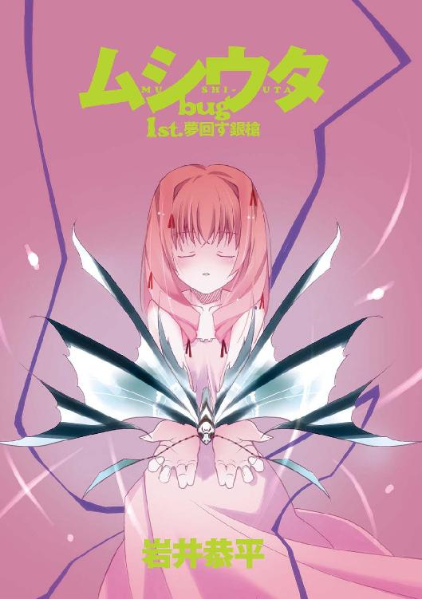
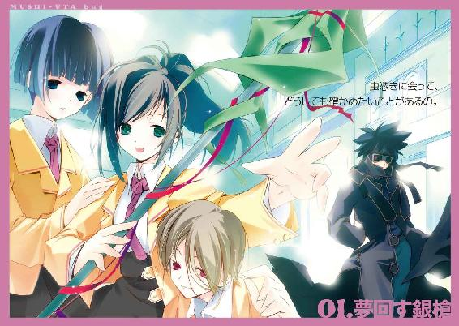
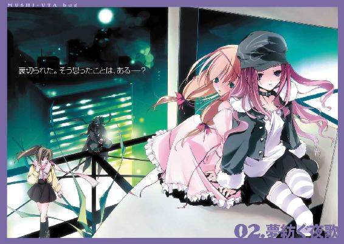
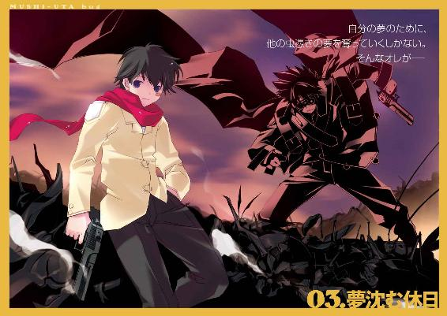
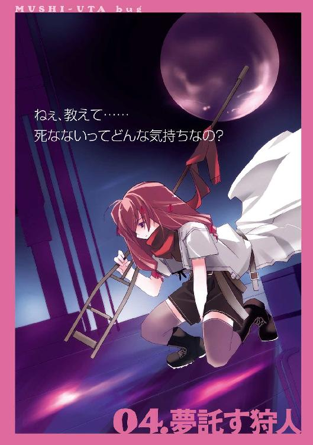
ムシウタｂｕｇ
１ｓｔ．夢回す銀槍
岩井恭平

角川スニーカー文庫
本作品の全部または一部を無断で複製、転載、配信、送信したり、ホームページ上に転載することを禁止します。また、本作品の内容を無断で改変、改ざん等を行うことも禁止します。
本作品購入時にご承諾いただいた規約により、有償・無償にかかわらず本作品を第三者に譲渡することはできません。
本作品を示すサムネイルなどのイメージ画像は、再ダウンロード時に予告なく変更される場合があります。
本作品は縦書きでレイアウトされています。
また、ご覧になるリーディングシステムにより、表示の差が認められることがあります。
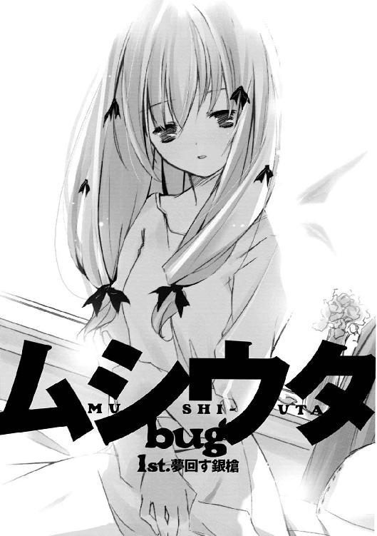
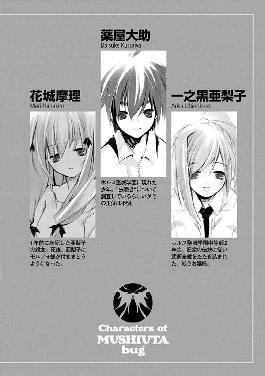
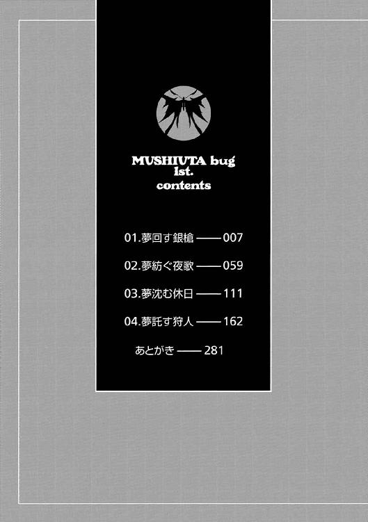
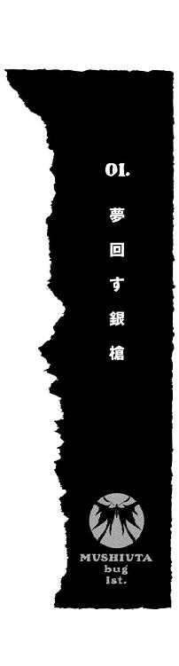
今でも、よく憶えている。
一年ほど前の出来事だ。
親友の花城摩理がまだ、生きていた頃の記憶。
「......うん、わかってるよ」
病室の前で、亜梨子はその声を聞いていた。摩理が誰かと話しているのは分かった。しかし相手の声は聞こえず、摩理が一人で喋っているように聞こえる。
「亜梨子は優しいから、私のお願いも......」
亜梨子は、病室の扉を開けた。
視界いっぱいに飛び込んだ眩しい朝日に、思わず顔を腕で覆う。
「亜梨子」
その光景を、亜梨子はきっと一生わすれないだろう。
ベッドの上で朝日を背にした少女は、背中から銀色の翅を生やしていた。とても小さな翅、それは季節はずれのモルフォチョウだった。
室内には、摩理の他に人影は見あたらない。亜梨子は不思議に思ったが、そんなことよりも摩理に向かって微笑み返すほうが大切だった。一秒でも、ほんの一瞬でも、摩理といる時間を無駄にしたくなかった。
「ねえ聞いて、亜梨子。私ね......」
目を細めて語り出す摩理の肩から、銀色のモルフォチョウが飛び立った。
１
朝日が降り注ぐ道路を歩きながら、一之黒亜梨子は大きなあくびをした。
大きな水たまりの前で、亜梨子は立ち止まる。昨夜の雨の名残が、鏡のように亜梨子の姿を映し出していた。
黒い瞳は眠気に負けて半分だけ開いている。肩まである髪は、一之黒家のお抱えの理髪師によって三日に一度、綺麗に長さを整えている。体つきは同級生の中でも小柄なほうだ。
人々がさけて通る水たまりを、亜梨子は大股に飛び越えた。
同じ方向へ向かう人混みには、亜梨子と同じ制服を着た少年少女も多い。しかし亜梨子とは違って、眠そうな顔をしている者はいない。皆、姿勢を正し、上品な笑顔で語り合っている。
亜梨子が通っているのは、ホルス聖城学園中等部。偏差値もそこそこだが、授業料が飛び抜けて高い。いわゆる上流階級の生徒が多い、名門校である。亜梨子は十四歳、二年生だ。
道路の先に見慣れた姿を見つけ、亜梨子は小走りに駆け寄る。
「おぃっす、恵那、多賀子」
並んで歩いていた二人の少女の間に、飛び込む。二人の肩に腕をかけると、少女たちは大きくよろめいた。
「おはよー。つーかアンタ、朝からテンション高すぎ」
「お、おはようございます、亜梨子さん」
一人はしかめっ面を、もう一人は困ったような笑みを浮かべる。
西園寺恵那と九条多賀子。二人とも、亜梨子のクラスメートである。二人とも名家の出で、多賀子はいかにも大事に育てられたのが分かる。恵那のほうは三女ということもあり、亜梨子以上に俗っぽい性格をしているが。
亜梨子は二人から腕を離し、「うぅー」と呻き声を漏らす。
「テンション高くなんかないよー。今日も朝っぱらから妖怪ばばあに叩き起こされてさあ」
「あー、例の稽古ってやつ？ しょうがないんじゃない、あんたん家はあたしらとは比べものにならない大金持ちだし。一人娘だし。誘拐とかされちゃうかもじゃん」
「だったら、学校への送り迎えくらいしろっつの。ヘンなところで厳しいんだから、ったく」
「ボディガードの方でもいれば、いいですのにね」
多賀子の言葉に、亜梨子はピクリと表情を動かした。
「ボディガード......それ、いいかも」
「はあ？ マジ？」
「お金ならあるんだから、それくらいやってもバチはあたらないわよね。そうすれば、あたしが稽古する必要なんてなくなるし」
「えー、でもむっさいオジさんがいつもいっしょってのもねぇ」
「ザッツ・ノット・ライト！ もちろん美少年に決まってるでしょ！ 学校でもいつもそばにいて、命令には絶対服従！ 『ああ、わたくし喉が渇いてしまったわ』『お飲み物でございます、お嬢様』『ふふ、良い子ね』──ああ、どうして今まで思いつかなかったんだろう！」
「アンタは一体なにサマだ。......でも、ちょっといいかもと思っちゃった」
「まあ、そんな......」
多賀子が顔を赤らめるのを見て、亜梨子はニヤリと笑う。恵那を見ると、彼女もまた亜梨子と同じような顔をしていた。
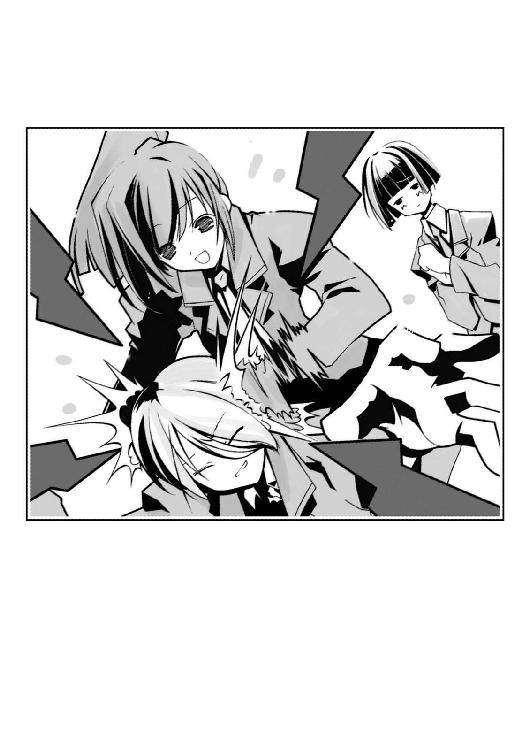
「聞きました？ 亜梨子さん」
「ええ、しっかりと、恵那さん。『まあ、そんな......』ですって。多賀子お嬢様にはちょっと、刺激が強かったみたい」
「そんなわけ、ありませんわ。だって多賀子さんには、ちゃあんとお相手がいますもの。なんていいましたっけ、ほら、カワイイ顔をした美術部の幼なじみ......」
「そ、そんな、いじめないでください......」
オロオロと二人の顔を見比べる多賀子に対し、亜梨子と恵那は笑い出す。
だが唐突に、恵那の笑い声が消えた。
「どしたん、恵那？」
「ああ、ゴメン。いじめっていうので、イヤなこと思い出しちゃった」
「イヤなこと......ですか？」
疑問顔の亜梨子と多賀子に対し、恵那は顔をしかめる。
「友達から昨夜、電話がかかってきてさ......昨日の放課後、うちの学校に出たんだって」
「出た？ なにが？」
「〝虫〟」
ドクン──。
亜梨子の心臓が、殴られたように跳ねる。
──ねえ聞いて、亜梨子。私ね......。
記憶の奥に焼きついた、過去の光景が閃光のように蘇る。今にも消え入りそうな、だが嬉しそうなかつての親友の笑顔が脳裏をよぎる。
「私の友達もその友達から聞いたらしいから、ホントかどうか分かんないけどさ」
恵那が続ける。
「校内で、何人かの男子が、誰かをいじめてたんだって。そこへ突然、〝虫〟が現れて......何人かが大怪我を負ったって......現場を見たっていう子は怖くて誰にも言えなくて、私の友達だけに喋ったんだって言ってた」
〝虫〟──。
その存在が噂されだしたのは、およそ十年ほど前からだと聞いている。
外見が昆虫に似たその異形の存在は、人に寄生し、人間の夢を喰って成長するという。各地で目撃されているそうだが、政府はその存在を認めていない。しかし目撃証言はあとを絶たず、〝虫〟に寄生された人間は〝虫憑き〟と呼ばれ人々に怖れられるまでになっていた。〝虫〟に夢を喰い尽くされた虫憑きは死に至るという話まで飛び交っている。
もはや噂話の域を超えてしまった〝虫〟問題といっしょによく耳にするのは、特別環境保全事務局という政府機関だ。同機関は、生活環境における苦情全般を受け付けているにすぎないと説明しているが......。
「オフレコでお願いね。......っと。多賀子はともかく、亜梨子までそんな顔をするんだ」
「え......」
亜梨子は、我に返る。多賀子といっしょに目を見開いていたのを、怯えているものと勘違いされたらしい。
「よちよち、ごめんなちゃいねー。亜梨子ちゃんも、女の子だもんねー。......あだだだっ」
「おほほほ、そうですのよ。何を隠そうわたくし、かよわい女性ですの」
両拳で恵那のこめかみを抉りながら、亜梨子は多賀子の様子がおかしいことに気づく。
「あ、あの、私......」
「多賀子？」
「怪しい人、見かけました......その、校内で......」
「ホントに？」
亜梨子と恵那が驚きの声を上げる。多賀子が神妙な面持ちでうなずく。
「怪しいって、どんなヤツ？」
「ええと、その......怖そうな大男、だったような......中年の......」
「ねえ、それってヤバくない？ もしかしたらそいつ......虫憑きだったりして」
ただならぬ多賀子の様子に、恵那も真剣な顔をする。
虫憑き──。
亜梨子は、ひそかに拳を握りしめる。
「怪しいヤツ......虫憑き......」
同学年の男子生徒が重傷で入院したことを担任教師の口から聞いたのは、朝のＳＨＲでのことだった。
２
静まりかえった校舎に、チャイムの音が鳴り響いた。
時刻は午後の三時を過ぎたところだ。これから六時限目の授業がはじまる。
カチャリ、と人気のない廊下の女子トイレの扉が開いた。
「......」
扉から顔を出し、亜梨子は周囲を見回す。
ホルス聖城学園中等部の校舎は、いくつかの棟に分かれている。クラシックな洋風の外観と時計塔のある中央棟と、特別教室のある東棟。そして職員室から体育館までつながる、モダニズム・デザインの西棟。さらに離棟から武道場、プール施設などあらゆる設備が整っている。
亜梨子がいるのは、東棟である。五時限目から二階と三階の教室を使う授業がないことは、すでに確認済みだ。仮病を使って休み時間からトイレに潜んでいたのだ。
亜梨子は誰もいないことを確認し、廊下に出る。
ふう、と息をつく亜梨子の前に、どこからともなく一匹の蝶々が舞い降りた。
銀色の光沢を放つ翅が鮮やかな、モルフォチョウである。──だがよく見ると、ただの蝶々ではないことが分かる。触角が四本もある蝶を、亜梨子は他に知らない。
モルフォチョウが、階段へと舞っていく。
「分かってるよ、摩理。必ず虫憑きを見つけてみせるから......」
呟き、心中で気合いを入れる。
階段は、途中でロープによって遮られていた。立ち入り禁止の文字の横に、赤牧市内の所轄警察の名が併記されている。さらに学園の理事長名で、出入り禁止の立て札もあった。
「よっ、と」
立て札を無視し、ロープを飛び越える。モルフォチョウはすでに三階へと姿を消している。
午前中まで、正門に数台のパトカーが停まっているのを見た。しかし昼休みに、なぜか一台残らず学園を去っていくところも確認済みである。少し早すぎる気もするが、昨夜から続けられていた現場検証が終わったのだろう。
三階は静寂に包まれていた。周囲を見る。
「......！」
その光景を見て、亜梨子は息をのんだ。
やたらと長い廊下の奥に、徹底的な破壊の痕があった。窓ガラスが割れているのはもちろんのこと、床や天井、さらに美術室の入り口がただの瓦礫と化している。爆発でもあったのかとも思ったが、違う。まるで巨大な爪痕のようなものが、コンクリートをえぐっているのだ。
亜梨子の喉が鳴る。どんな事件があったのかは分からないが、恵那が口にした〝虫〟という言葉が脳裏によみがえる。
「映研部のセットじゃないわよね......連中、やたらと大道具に凝るし」
廊下にかけられた美術部員の絵も、ひどい有り様だった。床に転がった夕日の絵が目を惹いたが、やはり大きな爪痕が刻まれている。姉妹校寄贈と書かれた額縁は割れ、『R・Tachibana』というサインがかろうじて見て取れる。
瓦礫を避け、美術室に近づこうとした時だった。
「......ああ、すぐに見つかると思うよ。ここの美術部員だってことは、分かってるんだ」
声は、破壊された美術室の中から聞こえてきた。ピタリ、と亜梨子は足と呼吸を止める。
「逃がさないさ。必ず見つけて──」
まだ若い、少年の声だ。誰かと会話しているようだが、相手の声は聞こえない。
亜梨子は、怪しい人物を見たという多賀子の証言を思い出す。足音を殺して廊下を引き返し、掃除用具入れのロッカーをしずかに開く。
亜梨子が手にしたのは、柄の長いモップだった。先端部分を足で押さえ、棒をくるくると回す。音もなく棒と先端が分解される。
こんな授業中に、一体......？
緊張しながらも、棒を手に美術室へ戻る。
声の主はまだ何かを話していたようだが、急にピタリと声が止まる。
「──誰か、いるのか？」
見つかった──そう悟った直後には、体が動いていた。床を蹴り、扉の向こうへ躍り出る。
室内で驚愕に目を見開いたのは、一人の少年だった。ホルス星城学園の制服を着ている。手には携帯電話をつかんでいた。
「せやっ！」
横一文字に襲いかかった棒を、少年が驚いた表情のまま体を沈ませて避ける。
だが、慌てて後方へ跳び退こうとした少年に対し、亜梨子は巧みに棒を操り少年の足元に棒を突き出す。
「うわっ！」
棒先で膝裏を叩かれ、少年が床に転がる。
──一之黒家は、江戸時代から続く由緒ある名家である。敵の多かった時代の旧習が今でも残り、亜梨子は毎朝の稽古を強いられている。物心ついた頃にはもう、厳しい指南役によって薙刀から合気術までたたき込まれていた。
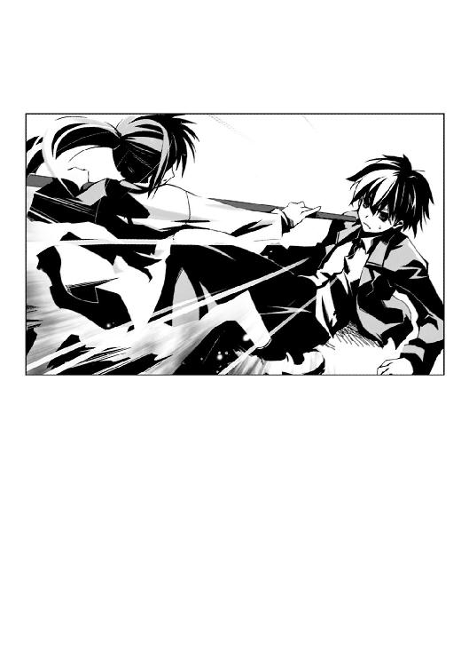
「動くなっ！」
鋭く言い放ち、仰向けに倒れた少年に棒先をつきつける。
呆然と、少年が亜梨子を見上げる。
亜梨子と同年代くらいの少年だ。背丈も、同世代の男子生徒とそう変わらないだろう。外見的には怪しい要素は見つからない。だが多賀子の証言もある。状況が状況なだけに、見知らぬ相手に気を許すことはできない。少年が手にした携帯電話からは、不通を知らせる電子音がかすかに聞こえていた。
「あなた、名前は？」
「な......」
状況が理解できていないのか、少年が間の抜けた顔で立ち上がろうとする。
「動くなって言ってるでしょう」
「いてっ」
棒の先端で、少年の額を小突く。
「いい？ アンタは私の質問にだけ答えなさい。それ以外の行動は一切、許しません」
毅然とした態度で、言い放つ。そんな彼女の物言いが気に入らなかったのか、少年がむっとした顔で黙り込む。
「名前は？」
亜梨子がもういちど質問する。少年がふてくされた態度で目をそむける。そういう仕草は、まるで反抗期の子供のようだ。
「人に名前を訊くなら、まずそっちから......あだっ」
「不審者と対等の人間にまで落ちた覚えはないわよ。ほら、さっさと言え」
「やだね」
「......」
「いてっ、あだっ、やっ、やめろよ！」
「......まあ、いいわ。べつにアンタの名前になんて興味ないし」
少年の顔面に棒の先をぐりぐりと押しつけながら、亜梨子は質問を変える。
「次の質問。あなたは、何者？ 授業中だっていうのに、こんなところで何をしてたの？」
「......別に、なにも。授業をサボって、ぶらぶらしてただけだよ。それなのに──」
「この学校の生徒なの？」
「そうだよ、ほら。生徒手帳だって持ってる」
少年がポケットから手帳を取り出し、開いてみせる。手帳の中に赤いカードが入っていた。セキュリティの厳しいこの学園は、敷地への出入りを認識カードで常に監視している。学園の敷地に入るには、カードを指定の機械にかざさなければならないのだ。生徒や教職員の出入りは常に記録され、管理されている。
だが亜梨子は手帳を見るなり、少年を睨みつける。
「ニセモノじゃない、それ」
「へっ？ そんなわけないだろ」
「本物のカードは黄色だもの。それ、赤いじゃない」
「え？」
言われて、手帳を見る。彼のその行動で、亜梨子は確信した。カードの色は赤で正解だ。
「......やっぱり、ここの生徒じゃないのね」
騙されたことに気づき、彼は頭を抱える。
「こんな子供だましのテに......」と自己嫌悪に陥っているようだ。
「一体、なにをしていたの？ 答えなさい」
「お前には関係ないだろ」
あくまで彼は亜梨子に反抗するつもりのようだ。棒を脳天に叩き込んでやろうか、とも思ったが、亜梨子は深呼吸をして自制する。
「それじゃあ、最後の質問よ」
亜梨子は短く息を吸い込み、たずねる。
「あなた、虫憑きなの？」
「......！」
明らかに少年の顔色が変わった。
彼のただならぬ反応に、亜梨子は目を見開いた。心臓が大きく脈打つ。
「ほ、本当に......？ 本当に虫憑きなの？」
次の瞬間、少年が動いた。
亜梨子が油断したスキをつき、棒を払いのける。「あっ」と彼女が声を上げた時には、彼は勢いをつけて後転し、床の上に立っていた。
亜梨子と少年が、同じ目線で向かい合う。亜梨子は高鳴る鼓動を隠し、棒を構え直す。
「昨日の事件も、アンタがやったのね」
亜梨子は確信する。たった今の少年の動きは、明らかにただ者ではなかった。
「......」
少年の顔つきが、微妙に変化していた。反抗期の子供のような先ほどまでとは異なり、冷淡な表情で亜梨子を観察している。
「昨日の事件に居合わせたコが、〝虫〟を見たって言ってるのよ」
相手の雰囲気にのまれないよう、亜梨子は声高に言い放つ。
「それに私の友達が、校内で怪しい人間を見てるのよ。怖そうな大男......で......中年......には見えないわね......あれ？」
「ふん」
少年が、嘲笑を浮かべた。
「オレは虫憑きで、ここの生徒に大怪我を負わせたのもオレだよ」
「......！」
「──もしオレがそう言ったら、お前はどうするってんだ？」
亜梨子は息をのむ。
「そんな棒きれ一本で、悪者を成敗しようとでも考えてたのか？」
冷たい眼差しで睨まれ、亜梨子は唇を嚙む。
「そ、そんなんじゃないわよ」
「じゃあ、なんだよ？」
「知りたいことが......あったから」
亜梨子はわずかに目を伏せ、言う。
「虫憑きに会って、どうしても確かめたいことがあるの。だから私は、虫憑きを捜してた。一年前から、ずっと......」
少年が黙り込んだ。だがすぐに口を開くと、冷たい声音で突き放す。
「虫憑きなんてものが本当にいるって、信じてるのかよ」
「いるわ」
「もし本当にいたとして、それならなおさら〝虫〟に喰い殺されるのがオチだ。それじゃなければ、コワイ連中に連行されるか、だな」
「コワイ連中？」
「特別環境保全事務局......」
少年が呟く。亜梨子は首を傾げた。
特別環境保全事務局。虫憑きや〝虫〟に関して苦情を受けつけている機関としか、知識はない。だが以前、噂好きの恵那が言っていた。
特別環境保全事務局......特環っていうところは、実は虫憑きを隠してるんだって。虫憑きを使って、虫憑きをさがしてるとか──。
「どっちにしろ」
彼の言葉で、亜梨子は我に返る。
「中途半端な気持ちで関わるつもりなら、やめたほうがいい」
「中途半端なんかじゃないわ。命にかえても、絶対に虫憑きを見つけるつもりよ」
「お前みたいなお嬢様は、知らないんだろ？」
少年がせせら笑う。
「こんなバカみたいな世界でも、何人も犠牲にして生き続けたいと思ってるヤツがいる。犠牲にしたくないから、逃げて逃げてかろうじて生きてるヤツもいる。......どんなに憎まれても、汚れきっても、それでも生きたいと思うヤツなんていくらでもいるんだ。死んでもいいなんて言うヤツは、死ぬ価値すらもないんだよ」
まるで世界そのものに怒りを抱いているような、憎悪が込められた声だった。亜梨子は気圧され、口を閉ざす。鼻で笑い、少年が再びその場を去ろうとする。
「......アンタだって、知らないでしょう？」
亜梨子は、言う。
「生きたくても生きられずに、他の誰かに想いを託していなくなってしまう......そんな子だっているのよ」
「......」
「想いを託された人間は、最後までその人と関わり抜く責任があるわ」
「......そんなこと、言われなくたって──」
何か思いあたることでもあるのか、少年が怒りの表情を浮かべた。
その、直後だった。
どこからか、悲鳴が聞こえた。
３
悲鳴に続き、ガラスが割れる音がした。
「......！」
亜梨子は、反射的に廊下に飛び出す。直後、警報が校舎内に響き渡った。中央棟を見ると、校舎の二階で窓が割れる瞬間が見える。
振り返る。少年と、目が合った。
「......」
亜梨子は厳しい表情で、一方、少年は静かな視線でにらみ合う。
目を離したのは、亜梨子が先だった。少年に背を向け、廊下を走り出す。
騒ぎが起こっているのは、中央棟の二階だ。亜梨子の教室も同じ階にある。渡り廊下を駆け抜けると、先のほうで生徒や教師たちが固まって騒いでいるのが見えた。
駆け寄り、亜梨子は絶句する。
何人かの生徒が床に倒れていた。教室の壁は何かに食い破られたかのように、穴が空いている。周囲には割れたガラスが飛散している。
一人の男子生徒が肩から大量の血を流していた。致命傷のようには見えないが、教師に抱き起こされたまま呆然としている。
「......〝虫〟......」
呆然と立ちつくしていた生徒の一人が呟いた。亜梨子は表情を変える。
「うあああ......！ 痛えよぉっ......！」
「〝虫〟が！ 大きな化け物が！」
肩に傷を負った少年が、苦悶の顔で叫んでいた。教師が抱きかかえ、落ち着かせようとしている。また、傷を負った生徒のクラスメートだろう。数人の生徒たちが、半狂乱に教師にすがりついている。
〝虫〟......一体、だれが──。
亜梨子は、唐突に寒気に襲われた。
「......！」
振り返る。
敵意の双眸が、亜梨子を射貫いていた。
背後に、つい先ほど美術室で会ったばかりの謎の少年が佇んでいた。そのあまりに冷たい視線に、硬直した亜梨子の脚に震えが走る。
こいつ、やっぱり普通じゃない──。
握りしめた拳に、自然と力が入る。
「やっぱりアンタが、虫憑き──」
「このクラスで美術部員は二人。そこに倒れているヤツと......」
亜梨子の言葉を遮り、少年がぽつりと呟く。彼の視線は亜梨子ではなく、彼女の向こう側を見据えているようだ。
亜梨子は彼の視線を追う。
「......え......」
思わず、亜梨子の口から声が漏れた。
壊れた教室の出入り口で立ちつくしている男子生徒がいた。彼は、先ほどの亜梨子のように少年の視線によって金縛りにあっていた。
「調子に乗りすぎたな、播本潤」
底冷えするような少年の呟きに、男子生徒が反応した。顔色を変え、逃げるように廊下を走り去っていく。
少年が、播本潤を追いかける。
「ちょっと......待ってよ......」
思い出したように、亜梨子もまた二人の少年のあとを追う。
「亜梨子！」
他のクラスの生徒たちも、何事かと廊下に飛び出していた。恵那が亜梨子に声をかけてくる。多賀子の姿は、どこにも見あたらなかった。
友人の呼びかけを黙殺し、亜梨子は先ほどやってきた渡り廊下へと向かう。
「ま、待ちなさい！ 播本くんは、だって......！」
とっくに姿が見えなくなった相手に向かって、叫ぶ。だが、亜梨子はすぐに息をのんだ。
階段を下りた先の壁が、無惨に打ち砕かれていた。粉々になったコンクリートの向こうに、やはり強引に破壊された柵が見える。
「播本くんが......虫憑きだっていうの......？」
謎の少年が虫憑きなのだとばかり思っていた。それだけではない。亜梨子は播本潤という男子生徒を知っている。なぜなら──。
「......！」
壁穴から裏庭へと飛び出した亜梨子は、布がはためく音を聞いた。
横を見ると、離れた場所に黒い人影が立っていた。
足元まで覆う漆黒のロングコートを纏った人物だ。顔全体を覆うほど大きなゴーグルをかぶる直前、その人物がこちらを見た。
亜梨子が虫憑きだと思いこんでいた少年だ。彼は別人のような目つきで亜梨子を睨むと、ゴーグルで顔を覆い隠した。
愕然とする亜梨子をよそに、少年は驚異的な跳躍力で柵に飛び乗った。ロングコートをなびかせ、壊れた柵の先へ姿を消す。
「な......」
どこからともなく、一匹の蝶々が亜梨子の肩にとまった。銀色のモルフォチョウだ。
唇を嚙んで走り出そうとする亜梨子。だが彼女を呼び止める声があった。
「亜梨子さん......」
振り返った亜梨子の前にいたのは、思い詰めた表情を浮かべた少女だった。
４
「あれは......女の人でした。いえ、本当に人間だったのかも、分からないんです......」
街道を走るタクシーの中で、九条多賀子はうつむきがちに語り出した。
多賀子の目撃した光景とは、次のようなものだったという。
──ねえ、貴方の夢を聞かせてくれない？
そんな女性の声が、聞こえたそうだ。
場所は播本潤の自宅、多賀子は広い敷地に入るための門をくぐり抜けたところだった。
彼の家にはハーブやポプラが生え、昼も夜も豊かな香りが絶えることはない。しかし、その瞬間、香りは完全に消え去っていたそうだ。一切の音さえも。
潤は、庭の中央に立ちつくしていた。
彼に覆い被さるように、長身の女性が耳元に囁きかけているのが見えた。真っ赤なコートと、まん丸のサングラスをかけた横顔が見えた。
──抑えつけるのは、もうお終い。さあ、教えて。貴方は今、何がしたいの？
潤に囁く声が、聞こえた。
──僕は......僕は......。
呟く少年のそばに、黒い歪みが生まれた。それは苦しむように、しかし喜びにうち震えるように形を変えていく。歪みの一部が、虫の脚の形に固まっていくのが見えた。
サングラスの女性の視線が、動いた。不思議な輝きを秘めた瞳が、多賀子を見た。
多賀子は恐ろしくなり、その場から逃げ出した──。
「一昨日の、出来事です......」
多賀子が、震える声で言う。
「その女が、播本くんを虫憑きにしたってこと？」
隣に座った亜梨子がたずねると、多賀子はピクリと肩を震わせた。虫憑き、という言葉に反応したのだろう。
播本潤という男子生徒と多賀子は、姉弟のように育った幼なじみだという。旧くから家どうしで付き合いがあったことから、二人は自然と会う機会も多かったようだ。そのことは、亜梨子や恵那も知っていた。
「私、あの時に見たものがどうしても信じられなくて......いいえ、信じたくなかったんです」
「......」
「今朝、恵那さんの話を聞いて、驚きました。潤さんは、私にはそんな素振りを見せませんでしたけど、彼が部活動でひどいいじめに遭っているという噂を聞いてました。ひょっとして──そう思ったら、彼を助けなくちゃと思って......」
「怪しい大男、っていかにもなウソよね......最初から気づくべきだったわ。多賀子がウソをつくのがヘタなの、知ってたのに」
「潤さんは、辛かったんだと思います......でも誰にも助けを求められなくて......もっと、苦しんで......それで、よりによって、あんな得体の知れないものに救われてしまったんだと思うんです......」
亜梨子は、拳を握りしめる。
虫憑きを生む存在。
「そいつのせいで、虫憑きが生まれる......」
亜梨子が、虫憑きをさがしていた目的。
虫憑きとは一体──。
奥歯を嚙みしめる一方で、新たな疑問が浮かぶ。多賀子の話が真実だとすると、黒コートの少年はいったい何者なのだろう？ 少なくとも、普通の立場の人間ではないことは確かだ。
特別環境保全事務局。
少年の言っていた言葉が脳裏をよぎる。彼と何か関係があるのだろうか？
タクシーが、停車した。
代金を支払い、二人の少女は車を降りる。
「播本くんは、本当にここにいるの？」
「......建設がはじまった頃から、ときどきこっそりと二人で忍び込んで遊んでました。完成するまでは、誰にも見つからない秘密の場所だと思っていたから......」
亜梨子と多賀子が見上げたのは、夕日を背にした巨大な高層ビルだ。海岸線に近い開発地に建てられたコの字型の建築物である。多賀子の父が経営する企業が出資し、街の新たな発展の起点として期待されている場所だ。
オープンを数カ月後に控えた新高層ビルは、敷地内に設置された照明でライトアップされている。コの字の中央に位置する空間には、展望台でもある巨大な球体が浮かんでいる。
有刺鉄線がついたフェンスの一部が破れ、真新しいアスファルトの上に靴痕が残っていた。
「ビンゴね。行くわ」
歩きだそうとした亜梨子の手を、多賀子がつかんで止める。
「あの......どうして、亜梨子さんが？ その、警察......とか......」
「警察に知らせたいの？」
多賀子は考え、すぐに首を横にふる。亜梨子は微笑む。
「だから、あたしが行くわ。あたしも彼に会って、確かめたいことがあるの」
「確かめたい......こと？」
「虫憑きって一体、何なんだろうね？」
言い、亜梨子はにっこり笑いかける。多賀子はきょとんとした顔だ。
「お前らは、邪魔だ。ここにいろよ」
すぐそばから、声がした。亜梨子たちは驚いて振り返る。
「アンタ......！」
漆黒のコートを纏った少年が立っていた。
「余計な手出しをすると、怪我じゃすまなくなるぞ」
ゴーグルで顔を隠した少年は冷たく言い放ち、亜梨子たちの横を通り過ぎようとする。
だが亜梨子は、少年の腕を摑んで止める。
「あたしたちを尾けてきたのね」
「......」
「播本くんを、どうするつもり？ まさか、殺──」
亜梨子の言葉に、多賀子の顔が青ざめる。
「殺しはしない。〝虫〟を殺して、欠落者にするだけだ」
「......欠落者？」
「夢も感情もなくなった人間......自分の〝虫〟に夢を食い尽くされて死ぬよりはマシだろう。欠落者にしたら、隔離施設まで搬送する」
「アンタ......何者なの？」
亜梨子の問いかけに、しかし少年は無言のまま答えない。亜梨子の腕を強引にふりほどき、フェンスを乗り越えようとする。
だが、少年にとびかかった影があった。多賀子だ。必死に少年にしがみつき、叫ぶ。
「あ、亜梨子さん......！」
「ナイス、多賀子！」
少年が怯んだ隙に、亜梨子は破れたフェンスを飛び越える。少年の舌打ちを聞きながら、ビルに向かって全速力で駆ける。
照明の合間を縫って走っていくと、正面の入り口が開いているのが見えた。迷わず建物の内部へと飛び込む。
建物内は、薄暗かった。窓から差し込む夕日が、広いフロアを部分的に照らしている。
潤と話をするには、少年よりも先に彼を見つけ出す必要がある。亜梨子は潤の姿をさがし、周囲を見回す。
だが、近辺に人の気配は感じられない。
焦りがつのる。広大な面積を誇るビルだ。やみくもにさがしても、発見できる確率は低いだろう。
亜梨子の視界に、銀色に輝くモルフォチョウが舞い降りた。
「摩理......」
モルフォチョウは亜梨子の頭上を旋回すると、フロアの奥へと舞っていく。
「......」
亜梨子は深呼吸をした。気を落ち着かせ、入り口の横に並べられた導管用のパイプの一本を握りしめる。
モルフォチョウのあとを追いかけて辿り着いたのは、ビルの十数階に位置するフロアだった。
息を切らせて亜梨子が階段をのぼりきると、フロアの奥で物音がした。
「誰......？」
聞こえた声に、亜梨子は全身を緊張させる。
亜梨子は慎重に通路を進んでいき、角を曲がったところで目を見開いた。
どこかの企業が入る予定だったのだろう。乱雑に倒れた備品らしきデスクの向こうに、一人の少年がいた。播本潤だ。
だが、亜梨子が凝視したのは、潤本人ではなかった。彼の傍ら、デスクを巣のようにして異形の怪物が横たわっていた。突き出した触角や、蠢く八本の脚。黒光りする甲殻は一見したかぎり、甲虫にも似ている。だが躰の大きさは、潤の三倍以上はあるだろう。
これが、〝虫〟──？
亜梨子の額を、冷たい汗が伝う。
「こんにちは、播本くん。あたしは一之黒亜梨子。多賀子の友達よ、知ってる？」
「......多賀子の？」
潤が、低い声で言う。夕日に横顔を照らされた少年の冷たい目つきを見て、亜梨子は寒気をおぼえる。
「あいつの友達が、なにしに来たの......？」
「止めに来たに決まってるでしょう。いじめられた仕返しだか知らないけど、もう気も済んだでしょう？ 多賀子も心配してるわ」
「......ふっ」
少年が、噴き出すように小さく笑う。潤のそばにいた〝虫〟が、ゆっくりと身を起こす。
「いやだね。あと三人、残ってる」
「くだらない」
「......なんだと？」
「仕返しがしたいなら、素手でやり返しなさい。そんなモノを使って相手を傷つけて、それで満足なの？ そんなの、自分の弱さを認めるだけじゃない」
きっぱりと言い放つ。
「あなたは、そんなくだらない復讐のために虫憑きになったの？ 虫憑きなら、あなたにも夢があるんでしょう？」
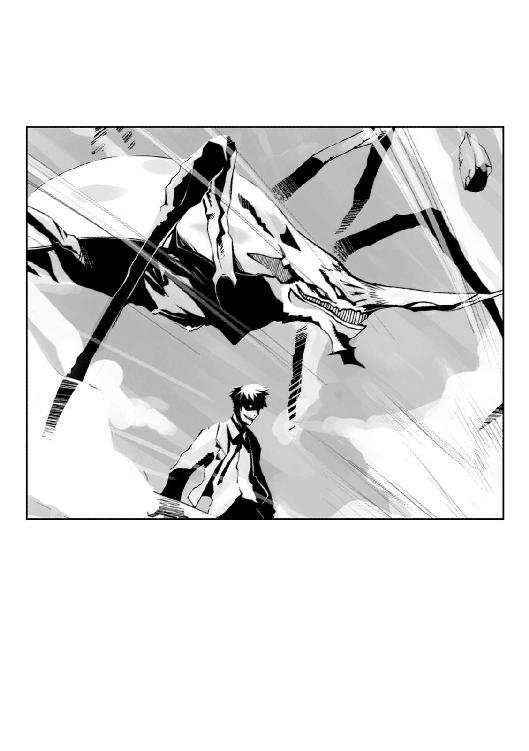
「夢なんてものはみんな、綺麗なものだとでも思ってるんだ？」
潤が笑んだ。
亜梨子の呼吸が、止まる。少年の笑みは、ぞっとするような憎悪に満ちていた。
こいつは、違う──。
亜梨子は無意識に悟っていた。
私の知ってる虫憑きとは、ぜんぜん違う──。
かつて一人だけ、亜梨子は虫憑きと出会ったことがある。その人物は目の前の少年とは正反対の、優しい笑みを浮かべていた。
「ぶっ殺せ」
少年の命令に従い、〝虫〟が亜梨子めがけて突進する。
亜梨子は我に返り、棒を構える。
手に、汗が滲んでいた。巨軀の〝虫〟に対し、手にしたパイプ管でダメージを与えられるとは思えない。なんとか〝虫〟をやりすごし、潤を気絶させる。──宿主を気絶させると〝虫〟がどうなるのかは分からないが、他に方法が思いつかなかった。
「くっ！」
振り下ろされた〝虫〟の脚の一本を、パイプで受け止める。だが小柄な亜梨子が受け止めきれるはずもなく、後方に吹っ飛ばされる。
それでもなんとか受け身をとるが、すでに眼前に〝虫〟の巨大な口器が迫っていた。
「せやっ！」
身体を反転させて牙をかわし、頭部めがけてパイプを打ち下ろす。石を叩いたような感触が伝わり、腕がしびれる。
大きな眼が亜梨子を睨んだ。脚の一本が襲いかかる。反射的に亜梨子は前方に身を投げ出し、床を転がって〝虫〟の間合いを脱出する。
前転して立ち上がった亜梨子は、勢いのまま潤めがけてダッシュする。
「うっ......！」
怯む少年。だが次の瞬間、鼓膜を突き抜けるような〝虫〟の咆哮がフロアを支配した。
轟風が吹き荒れ、周囲の備品もろとも亜梨子が吹っ飛ばされる。
「きゃっ──」
ガラスが一枚残らず砕け散り、宙を舞ったデスクが亜梨子に激突する。地面を転がり、フロアの奥の壁に衝突する亜梨子。
「......う......っ......」
それでもパイプを手放さなかったのは、奇跡に近かった。全身が悲鳴を上げ、立ち上がろうとしても脚が震えて膝をつく。
パイプを支えに顔を上げた亜梨子に、〝虫〟が襲いかかった。
まるでスローモーションのように、迫り来る〝虫〟の口器が網膜に焼きつく。
──摩理──。
死を覚悟した亜梨子が思い浮かべたのは、かつての親友の笑顔だった。
楽しげに夢を語っていた少女。だが彼女は、みずからの夢を叶えるには天寿が短すぎた。
命果てる直前に、摩理は亜梨子に向かって言った。
──ねえ聞いて、亜梨子。私ね、本当は......。
語る親友の表情は、死を迎える恐怖も悲しみも感じさせなかった。
──私の夢、あなたに託してもいい？
いつも銀色のモルフォチョウといっしょにいた、摩理。
彼女もまた──虫憑きだった。
「......！」
亜梨子と〝虫〟の間に、銀色の光が舞い降りた。
鮮やかな模様を翅に宿した、一匹のモルフォチョウだ。潤の〝虫〟の動きが、モルフォチョウに怯えるようにピタリと止まっていた。
モルフォチョウは亜梨子のもとへ舞い降り、手にしたパイプ管の上にとまる。
「！」
モルフォチョウの翅が歪んだ。幾本もの触手へと姿を変えた翅が、音をたててパイプに巻きついていく。翅が管の中に沈み、一体化していく。
呆然とする亜梨子の手に、一本の銀色の槍が生まれていた。モルフォチョウの触角が蔦のように絡みついた柄は、洗練された彫刻品のような威風を放っている。四枚に大きく開いた翅の一枚が、輝く刃と化している。
「な......」
絶句する亜梨子に対し、硬直状態から脱した〝虫〟が脚を振り下ろす。
「......このっ！」
反射的に、亜梨子は槍を振るう。
次の瞬間、銀色の槍が〝虫〟の脚をいとも簡単に切断していた。
さらに槍から放たれた鱗粉が、フロアの床に巨大な亀裂を生んだ。備品や窓ガラスが吹っ飛び、潤の前を過ぎてビルの外へと弾け飛ぶ。
「くっ......！」
潤が顔を歪め、フロアの奥へと駆けていく。彼の〝虫〟もまた、七本になった脚を蠢かして宿主のあとを追いかける。
「ま、待ちなさい！」
槍の威力に愕然としていた亜梨子は、我に返って少年を追う。
潤はフロアの奥にある階段をのぼっていったようだ。階段の上から靴音と〝虫〟の唸り声が聞こえた。亜梨子も槍を片手にあとを追う。
「......」
階段を駆けながら、手の中の槍を見る。
いつも亜梨子のそばにいるモルフォチョウは、かつて親友だった少女の〝虫〟だった。病弱だった彼女が息絶えた日から、亜梨子のそばをいつでも舞っているようになったのだ。
「摩理......」
呼びかける。だが銀色の槍は、彼女に応えることはない。今まで何度呼びかけても、銀色のモルフォチョウは決して応えることはなかった。
──私の夢、あなたに託してもいい？
摩理の、最後の願い。あの言葉の意味は、いったいどういうことなのだろう？ なぜモルフォチョウは亜梨子のそばにいるのだろう？ 虫憑きとは一体、何なのだろう？──その答えが知りたくて、亜梨子は虫憑きを捜すようになっていた。
だがようやく巡り会った虫憑き、播本潤はあまりにも摩理と違いすぎた。彼をあのように変えてしまった存在に対する怒りがわく。
突風が、亜梨子の髪をなびかせた。
階段が終わり、目の前に破壊された扉があった。屋上だ。潤と彼の〝虫〟は、この先に行ったようだ。
外は、夜の闇に覆われていた。
殺風景な屋上には夜風が吹きつけ、照明がレーザー光線のように周囲を飛び交っている。
潤は、屋上の一番端に立っていた。亜梨子は彼のもとへ歩み寄っていく。
「播本くん......」
追いつめられた潤は、しかし落ち着き払っていた。冷淡だが、燃えるような憎悪を秘めた眼差しで亜梨子を睨んでいる。
「あなたの本当の夢は、なんだったの？ その〝虫〟は、単なる仕返しのために生まれたんじゃないでしょう？」
「まるで、僕の他にも虫憑きを知ってるみたいな言い方だよね。そしてそいつはきっと、いいヤツだったみたいだ」
潤が言う。亜梨子は答えない。
「僕は、仕返しなんて考えてないよ......」
潤の表情は、ふっと緩む。優しげとすら言える笑みを浮かべ、言う。
「手はじめだ。僕は周りにあるものすべてを、ぶち壊す......！」
亜梨子は愕然と目を見開く。そんな彼女の反応を見て、潤がおかしそうに笑う。
「そんな夢があるだなんて信じられない──そんな顔だね。でも僕と同じような虫憑きなんて、そこらへんにゴロゴロいるはずさ。僕には、分かる」
亜梨子は、そんな少年を見てなぜか息が詰まりそうになった。戦慄か、それとも悲しみなのか、自分の中に渦巻く感情の正体は分からない。しかし──。
「バカだわ、アンタ......！」
亜梨子は口の中で呟き、潤を睨みつける。
「あなたに、訊きたいことがあるの。あなたを虫憑きにしたっていう女......そいつは一体、何者なの？」
潤はピクリと顔を上げる。しばし探るような目つきで亜梨子を見たが、やがて呟く。
「......自分は〝大喰い〟と呼ばれてる。そう、言ってた」
〝大喰い〟。
その名を、亜梨子は記憶に焼きつける。
「そいつのせいで、虫憑きが生まれるのね......摩理みたいな人たちが......」
追い求める相手を、再確認する。
「もう一つだけ」
亜梨子は、潤に向かって槍の穂先を向ける。
「もう二度とこんなことはしないと、ここで誓いなさい」
潤の顔から、表情が消える。
「あなたを待っていてくれる人がいる......それだけで、もう何もかもじゅうぶんでしょう」
潤が、うつむいた。だが再び顔を上げた少年の顔には、歪んだ笑みが浮かんでいた。
「誰にも、僕の邪魔はさせない」
潤の〝虫〟が、鋭い脚をビルの壁に突き刺す。〝虫〟にしがみついた少年が、屋上から壁の向こうへと姿を消す。
「どうして......！」
こみ上げる叫びを嚙みしめ、亜梨子は絞り出すように呻く。
潮気を含んだ風が、吹きつける。屋上の端に立って見下ろすと、目が眩むような高さを〝虫〟に乗って下りていく潤の姿があった。
地上にいる級友、多賀子は彼を救いたいと言った。ここでこのまま彼を逃がせば、彼女の思いを遂げることになるだろうか？
「そんなわけない......そうだよね、摩理？」
かつて虫憑きだった親友に、語りかける。亜梨子がとるべき行動は、すでに決まっていた。
「こりゃ、ホンキで死ぬかもなぁ......」
下を見下ろし、銀色の槍を握りしめる。
「それじゃあ行くよ、摩理」
とんっ、と亜梨子がビルの屋上を蹴る。
──次の瞬間、亜梨子を襲ったのは激しい風と落下感だった。
風圧と恐怖で、目を閉じそうになる。
真っ逆さまに自由落下する亜梨子と、信じられないものを見たように目を見開いた潤の視線が重なった。
「せああああっっ！」
潤とすれ違う直前、亜梨子の槍が一閃する。
ビルの窓ガラスが、爆発を起こしたようにいっせいに砕け散った。
刃と化した銀色の鱗粉が、潤の〝虫〟を斜めに両断する。それでも威力の余った鱗粉が、ビルの壁面に巨大な傷痕を生んだ。
〝虫〟が真っ二つになると同時に、潤の表情から一切の感情が消えた。人形のような表情で、亜梨子の前に投げ出される。
タ・カ・コ──。
最後に、潤の唇が動いたのが見えた。だがそれきり、凍りついたように動かなくなる。
これが黒コートの少年が言っていた〝欠落者〟というものなのだろうか──頭のどこかで、冷静にそんなことを考える。
「せいっ！」
半回転させた亜梨子の槍が、石突きの部分で潤の胸を叩く。少年の体が吹き飛ばされ、窓ガラスの割れたビルの内部へと転がっていく。
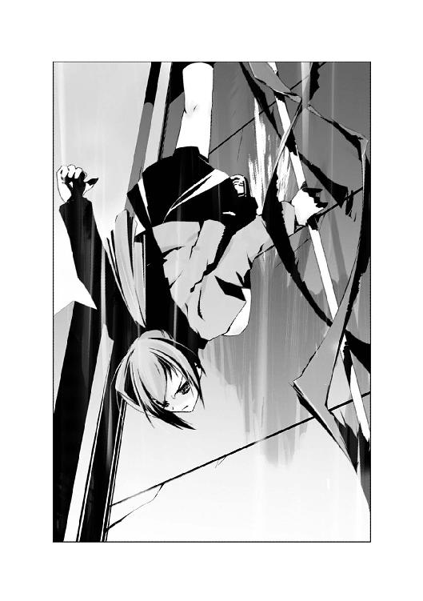
だが、ここで終わるわけにはいかなかった。亜梨子は槍をふりかぶり、壁に刃を突き立てる。
──私の夢、あなたに託してもいい？
生きたくても生きられなかった親友の顔が、思い浮かぶ。
彼女の夢を託された自分は、こんなところで死ぬわけにはいかなかった。
「死んで......たまるかぁっ！」
突き立てた槍で、落下の勢いを殺す。体重を支える両腕が悲鳴を上げる。
だが亜梨子の視界に、黒い影がよぎった。
躰を両断された〝虫〟の脚だ。
「......あっ......」
頭上から落ちてきた〝虫〟の死骸が、槍ごと亜梨子の体を弾き飛ばす。
支えを失った体が、再び重力に支配される。
ゴメン、摩理──。
目を見開いたまま、亜梨子は心中で呟く。
私、もう──。
意識を失いかけた、まさにその瞬間だった。
壁面が、再び爆発した。
ただし先ほどとは異なり、ビルの内側から放たれた衝撃によるものだ。
爆発の勢いに乗り、ビルから飛び出した黒い影があった。見覚えのある黒いコートと大きなゴーグルが見えたような気がした。片手に持っているのは、一挺の自動式拳銃だ。
「この、バカ女......！」
コートの主は空中で亜梨子を抱きかかえ、勢いのまま斜め下方に向かって拳銃を構える。
拳銃のものとは思えない砲撃音が響いた。
コの字型に建てられたビルの中央、展望台のある球体の屋根が砕け散る。
悲鳴を上げるよりも早く。
激しい衝撃と鼓膜を麻痺させるほどの轟音が、亜梨子を襲った。
５
「......うっ......」
耳元で、苦しげな呻き声が聞こえた。
いつの間にか、衝撃が完全に止んでいた。一瞬、気を失っていたのかもしれない。
亜梨子はきつく閉じたまぶたを、おそるおそる開いていく。
そこは、展望台──だったところのようだ。
屋根は抜け、窓ガラスの破片が飛び散り、巻き添えをくった照明がそばにあった展望用の機械を押し潰している。
そこではじめて、亜梨子は誰かに抱きしめられていることに気づいた。視線を上に向ける。
不機嫌きわまりない表情をした少年が、亜梨子を見下ろしていた。
亜梨子をかばって傷ついたのだろう。コートは無惨に破れ、顔を覆っていたゴーグルはレンズ部分が割れていた。
「どうして俺が、こんな目に......くそ......」
少年の顔の模様が、触手となって体から離れていく。全身から分離した触手が収束し、一匹の緑色の〝虫〟になる。
やっぱりコイツも、虫憑き──。
亜梨子はそう思って、声をかけようとした。だが亜梨子は現在の状況に気づく。
「いつまで抱きしめてるのよ、離れなさい」
少年がわずかに目を見開いた。脱力したように、床の上に大の字に転がる。
「......ありがとう、とか、大丈夫？ とかじゃないのかよ、ふつー......ああ、助けなきゃよかった。マジで。本当に」
それきり、少年が動かなくなる。傷が深いのか、思うように動けないようだ。
一方、亜梨子もまた体を動かすことができなかった。少年がかばってくれたおかげで外傷はないようだが、腰が抜けてしまっていた。もちろん、そんなことを彼に言えるはずもない。
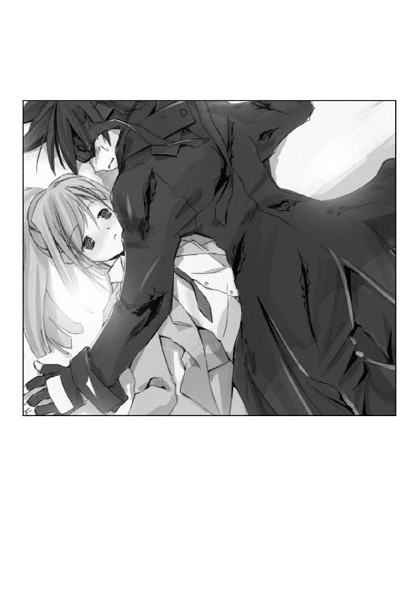
二人は折り重なった格好のまま、大きなため息をつく。
「俺と同じタイプの虫......でもお前自身と一体化していないのは、どういうわけなんだ？」
「私の〝虫〟じゃないもの」
「他人の〝虫〟に取り憑かれるなんて、あり得ない」
「だって......この〝虫〟の持ち主は、もういないから」
「......どうして、虫憑きに関わろうとする？」
「知りたいから」
「何を？」
亜梨子は唇を嚙み、言う。
「虫憑きって一体、何なのか......どうやって生まれて、そして......どうして、あんな終わり方しかできないのか......」
「......」
二人はしばらくの間、黙っていた。顔に触れる少年の胸から、力強い鼓動が伝わる。亜梨子の鼓動もまた、少年に伝わっているのだろうか？
「あーあ......」
少年が、疲れた声で呟いた。
「せめて、こんなお子ちゃまじゃなければ、この状況にも救いが──」
「亜梨子パンチ」
「......っ！」
傷口にヒットしたのか、少年は声もなく殴られた箇所を押さえて小刻みに震えだした。
６
播本潤の不自然な『転校』という形で一連の事件が幕を閉じた、数日後。
落ち着きを取り戻しつつある学園の朝は、いつも通りにやってくる。
だが一之黒亜梨子は、いつにも増して上機嫌だった。
「ねえ、亜梨子」
朝のＳＨＲ。隣の席の西園寺恵那が、亜梨子を肘でつついてくる。
「アレが、そうなの？」
「オー、イエス」
「あらためて見ると、良い人に見えますね」
大きく頷いた亜梨子に対し、斜め後ろの席の九条多賀子が言う。──ここ数日、さすがに元気がない彼女だが、最近になって元の笑顔を取り戻しつつあるように見える。
後になって播本潤の結末を知った多賀子は、しかし亜梨子に向かって微笑んだ。
──ありがとうございます。亜梨子さんが、彼を止めてくれたのですね。
そして、こうも言った。
──彼が帰ってきた時は、〝おかえりなさい〟と言ってあげたいと思います。
多賀子は、潤の帰りを待ち望んでいるようだ。普段のおっとりした振る舞いとは裏腹に、実は芯が強いということを亜梨子は知っている。
潤は最後に、はっきりと多賀子の名を呼んだ。彼もまた多賀子を必要としているのだ。
「気を許しちゃダメよ、多賀子。ああ見えて、かなーり獰猛なんだから。うふふ、これからどう調教してやろうかしら」
「調教って、アンタ......」
そんな亜梨子たちを、教壇の上に立つ少年は意識して見ないようにしているようだ。
「薬屋大助です。これからよろしくお願いします」
転入生として紹介された少年が、頭を下げる。
──どうやら亜梨子は、大助が所属している機関に要注意人物として目をつけられてしまったらしい。本来ならすぐにどこかの施設に送られるところらしいが、そこは財界の重鎮、一之黒家の一人娘。様々な事情や取り引きが飛び交った結果、一人の人物を監視役としてそばに置くことで落ち着いたらしい。
ＳＨＲの終了を告げるチャイムが鳴る。
薬屋大助が席につくよりも先に、亜梨子は椅子の上に立って声を張り上げる。
「えー、皆さん。あらためて紹介します。一之黒家で使用人としてしょーがなく雇ってやることになった、薬屋大助クンです。みんなも彼を奴隷と思ってなんでも言いつけてやってね」
クラスメート全員の視線が、亜梨子と大助に注がれる。
大助は沈痛な面持ちをしていたかと思うと、すぐさま亜梨子のそばに歩み寄ってくる。
「監視者と監視対象は無関係を装うのが決まりだって、言ったよな？」
「ああ、わたくし、喉が渇いてしまったわ」
小声で囁く大助に対し、しかし亜梨子はわざとらしく大声を出す。
「お前な......」
「喉が渇いてしまったわ」
これっぽっちも耳を貸さない亜梨子を見て、観念したのだろう。大助は嘆息し、教室から出て行った。
しばらく経って亜梨子の席へやってきた大助の手には、紙パックのジュースがあった。
「買ってきました、お嬢様」
「うむ、ごくろう──」
受け取ろうとした亜梨子の手が、空を切る。
よく冷えた紙パックの感触が、亜梨子のほっぺたに押し当てられていた。
「ふふふ......一体、なんの真似かしら？」
「はやく飲めよ、ほら」
「......にゃろう......」
不穏な空気を漂わせる二人の横で、恵那がニヤニヤと状況を見守っている。多賀子はというと、オロオロと二人の顔を見比べて対処に困っているようだ。
不気味な沈黙に包まれた教室の窓の外を、銀色のモルフォチョウが羽ばたいていった。
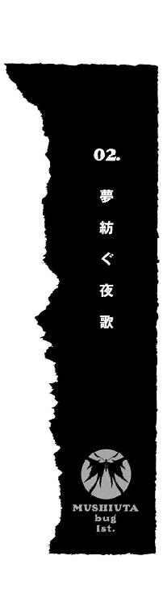
ゆっくりと、とてもゆっくりと地上の明かりが遠ざかっていく。
逆に、夜空に揺れる星々が近くなってくる。実際には星との距離などたいして変わらないのだろうが、要は気持ちの持ちようだ。少なくとも、こういうアトラクションではそんなロマンティックな空想を抱く義務があると、一之黒亜梨子は思う。
「わ......わあー、すごいキレイー！ ほら、海が見えてきたわ！」
亜梨子の斜め向かいの席で、表情をひきつらせた西園寺恵那が言った。一方、穏和な笑みを浮かべているのは、九条多賀子だ。
「上に行けば、私たちの学校も見えるんでしょうか？ 楽しみですね」
多賀子が言った学校とは、ホルス聖城学園中等部のことだ。亜梨子、恵那、多賀子は二年生の同級生である。
夏夜を彩る、円。
ゆっくりと回転するそれは、百メートル以上もの高さを誇る巨大な乗り物である。
亜梨子たちは、大観覧車に乗っていた。
「きゃっ、今、揺れなかった？ こわーい」
亜梨子も他の二人に負けじと大きな声を出し、となりの多賀子に抱きつく。
「亜梨子ってば、そんなにハシャいじゃって。そんなキャラでもないくせに」
恵那が亜梨子の額をこづく。額を叩く恵那の拳には、明らかに必要以上の力がこめられていた。たわむれる二人を見て、おかしそうに多賀子が笑う。
だが──。
「......はぁ......」
重い、と一言で表現するには重すぎるため息が聞こえた。
ゴンドラ内の温度が、急低下する。
「......」
じゃれついた体勢のまま、亜梨子と恵那は沈痛な面持ちをシートの一角へと向ける。
亜梨子の向かい側の席に、一人の少女が座っていた。いや、座っているというより、窓ガラスにもたれかかっているといったほうが正しい。異国の血が流れているのかもしれない、整った顔立ちと長身が欧州系の雰囲気を漂わせている。
「......はぁ......」
どれくらい濃密なため息をつけばそうなるのか、少女の前の窓ガラスが真っ白に曇っていた。少女がのろのろと細い指先を持ち上げ、曇った部分をなぞる。
「ふふっ......」
なにが面白いのか、少女が微笑した。一方、亜梨子たちの行状は絶望的に暗くなる。
「高い......」
独り言だろうか、少女が呟く。
「飛んだら......気持ちよさそう......」
「あの、まさかあの方......」
多賀子がお嬢様らしく、首を傾げて言う。
「自殺とか、なさいませんよね？ ここから飛び降りたりとか......」
「......！」
亜梨子と恵那は顔を見合わせ、囁き合う。
「どどど、どうすんのよ、亜梨子！ もとはといえば、亜梨子のせいだからね！ 知らない人と合い席してもいいなんて言うから！」
「い、いざとなったら、止めるわよ！」
「どうして、このようなことになったんでしょう？」
多賀子が嘆息まじりに言う。
そんなことは、亜梨子が聞きたかった。
１
はるか彼方のビル群に、夕陽が落ちようとしていた。
窓の外は暗くなりつつあり、中庭に備えつけられた蛍光灯が点灯する。
また遠方で、まるい明かりが見えた。
海に近い広場に設けられた大観覧車だ。日本で最大の直径を誇るらしい。赤牧市の人気デートスポットである。
「とにかくそんなわけで、お前の〝虫〟は今までにないタイプなんだよ」
すぐとなりからかけられた声で、一之黒亜梨子は窓から目をそらした。
亜梨子が歩いているのは、ある総合病院の廊下だった。受付とエレベータを通過し、五階にやって来たところである。
面会時間の終了間際とあって、出歩いている人影は少ない。面会者は帰路につき、患者は部屋に戻っているのだろう。制服を着た看護師が時々、忙しそうに通り過ぎていく。
「ふーん」
「ふーん、じゃないだろ。自分のことなんだから、ちゃんとおぼえておけよ」
薬屋大助が、不機嫌そうに言い放つ。いちど話した程度では決して印象が残らないくらい、特徴のない外見の少年だ。
「バカにこんな説明までしなくちゃならない俺の身にもなれよな」
「亜梨子エルボー」
大助が、腹をおさえてうずくまった。亜梨子の肘が、みぞおちをとらえたからだ。
亜梨子はすました顔で廊下を先に歩いていく。うしろから「君、どうかしたの？ 大丈夫？」「な、なんでもありません」という会話が聞こえた。
しばらく歩いていると、亜梨子の頭を衝撃が襲った。大助に叩かれたのだ。
「......居候のブンザイでご主人様を叩くなんて、もっとしつけが必要かしら？」
「だれがご主人様だよ。俺だって、できることならさっさとお前なんかのお守りは終わらせたいんだ」
「亜梨子ダブルパンチ」
睨みあいの決着は、亜梨子の両拳が再び大助の腹にめり込むという形でついた。またうずくまって看護師にのぞきこまれている彼を置いて、さっさと廊下を進む。
薬屋大助と出会ったのは、ほんの数日前。ある事件がきっかけだった。
その事件には世間で囁かれている、ある存在が深く関わっていた。
〝虫〟。
人に寄生し、人間の夢を喰う怪物である。外見が昆虫に似ているため、〝虫〟と呼ばれている。その存在は噂の範疇を超え、今では〝虫〟に寄生された人間は〝虫憑き〟と呼ばれ人々に怖れられるまでになっている。
だが、亜梨子は知っている。
〝虫〟は、実在する。
虫憑きは自分の理想や願望といった夢を喰われ、それでも生き続けている。いつの日か自分の〝虫〟に夢を喰い尽くされ、死に至るかもしれないという恐怖を背負いながら。
亜梨子は、薬屋大助に関して何も知らない。ただ彼は虫憑きを捕獲、隔離して政府の公式発表通り〝いなかった存在〟とするための組織、『特別環境保全事務局』の一員であるらしい。
数日前に関わった事件がもとで、亜梨子もまた虫憑きである疑惑が生まれたことから、大助に〝監視〟される結果となった。一之黒家とどんな交渉をしたのか、大助は亜梨子の家にいっしょに住むこととなっている。
「......」
亜梨子は、ある一室の前で立ち止まった。入り口にかけられた真っ白な名札は、今、この部屋に主がいないことを意味している。
ふいに、ドアが無造作に開かれた。
横から大助が手を出したのだ。立ちつくす亜梨子になんの配慮もない、邪魔なものをどける機械的な手つきだった。
「早く入れよ。看護師に見つかる」
大助を睨む亜梨子に対し、彼は冷静だった。普段は普通の中学生のように表情豊かだが、たまにひどく冷たい目つきをすることがある。彼がどんな人生を送ってきたのか興味はあるが、きっと教えてはくれないだろう。
「どきなさい」
大助を押しのけ、亜梨子は室内に入る。
病室には、先客がいた。薄暗い室内に、銀色の輝きが舞い落ちる。
一匹のモルフォチョウだ。しかし、ただの蝶々ではない。触角が四本もあり、身に纏う輝きはそれ自体が光を放っているかのようだ。
亜梨子に取り憑いた〝虫〟。同時に、この病室で一年前に息をひきとった親友を宿主にしていた〝虫〟でもある。
蝶は窓際に降り立ち、翅を閉じた。
「ここが、花城摩理がいた部屋なんだな」
背後で、扉を閉じる音が聞こえた。
ホルス聖城学園の大半の生徒がそうであるように、摩理もまた裕福な家柄の育ちだった。彼女がいた個室は他の六人部屋とはちがい、ベッドは木目調の高級品。大型テレビ、冷蔵庫、外線も使えるナースコール用の受話器などの備品はもちろん、絵画なども据え置かれている。だが夕暮れ時の薄暗さゆえか、そのすべてが色あせ、冷たく沈黙していた。
──一之黒......亜梨子？
ベッドの上に、首を傾げる仕草をした摩理が見えたような気がした。
──ごめんなさい。私、クラスメートの名前も顔も分からなくて......。
亜梨子がはじめて見舞いに訪れた時、摩理は亜梨子の顔を知らなかった。
当然だ。亜梨子もまたここではじめて、摩理の顔を見たのだから。入学した日から、摩理は一日も学校に登校していなかった。
「花城摩理に取り憑いていたはずの〝虫〟」
壁によりかかって腕を組んだ大助が言う。
「宿主が死んだ時点で〝虫〟も消えるはずだ。なのに、どうしてその〝虫〟が他人のお前に取り憑いたのか......なんでもいいから、手がかりになるようなことを思い出してくれ」
壁を見ると、そこにあったはずの本棚はなくなっていた。あれは本好きの摩理が持ち込んだものだったようだ。
「......」
亜梨子は、何も知らなかった。摩理が虫憑きだったということさえ。
暗い病室に、沈黙が落ちた。
しばらくの時間が経って、大助が黙ったままだということに気づく。
顔を上げて振り返ると、少年は腕組みをしながらうつむいていた。目を閉じている。
「ねえ」
亜梨子の低い声で、大助が顔を上げた。居眠りでもしていたのだろうか。
「この前の播本くんの時もそうだったけど、あなたにとっては摩理のことなんてどうでもいいんでしょうね」
頭に来て、言い放つ。播本というのは、数日前に虫憑きとして大助の所属する組織に連れて行かれた少年のことである。
「......」
大助が嘆息する。落ち着き払った彼の態度が、亜梨子の癇にさわった。だが言い返そうとして、少年の顔色がひどく悪いことに気づく。
「どこか調子悪いの？ なんだか疲れてるみたいだけど」
大助は、ハッとした。すぐに元の表情を取り戻し、壁から離れる。
「手がかりが思い出せないなら、もういくぞ。誰かに見つかる」
「なによ、もう」
頰を膨らませ、立ち上がった時だった。
──綺麗だね、あの観覧車──。
摩理の声が、聞こえた。
目眩にも似た感覚に襲われ、振り返る。
銀色に輝くモルフォチョウの向こう。窓の外に、煌びやかに彩られた観覧車が見えた。
「観覧車......」
思い出す。
そう、この窓から観覧車を見て亜梨子と摩理は、いつかいっしょに乗ろうと約束した。その約束を口にしたのは、二人のどちらだったか──。
「どうした？ なにか思い出したのか？」
「え......？」
入り口で振り返る大助の声で、我に返る。
今、一瞬だけ大切な何かが頭の奥をよぎったような気がしていた。だがそれが何だったのかは、思い出すことができない。
窓の外を見る。そこには、夜の暗闇に浮かぶまん丸い明かりがあった。
２
赤牧市市営の公園は、夜とはいえ人通りが多かった。
広い散歩道には、屋台も見える。夏祭りが近いのだろう、設置途中の提灯もあった。百メートル間隔で複数ある広場には、アンプを持ち込んでの路上ライヴも行われている。
制服姿のまま、亜梨子たちは公園を歩いていた。
「こんな夜に出歩いて、大丈夫？ 家の人に怒られたりとか」
亜梨子たち女の子三人の後ろで、大助のため息が聞こえた。彼の口調は、病院にいた時とはうって変わっておとなしい。他の二人の少女を気にしてか、今はどうやら『普通の中学生』ヴァージョンの薬屋大助のようだ。
「問題なし。ちゃんと電話しといたし、怒られても気にしないもの」
あっさりと言い放ったのは、亜梨子だ。右隣で、西園寺恵那が頷く。
「そうそ。あたしんちはお姉ちゃんたちはともかく、あたしに関しては放任主義だしね」
「それはそれで問題なんじゃ......」
「亜梨子さんや恵那さんと一緒なら、ある程度は許してもらえるんです」
にこにこと穏和な笑みを浮かべているのは、九条多賀子だ。
病院の待合室で待っていた恵那と多賀子と合流し、その足で亜梨子たちはここへやって来た。観覧車に乗ろうという提案を、大助はともかく二人の同級生は快く承諾した。
「そうなんだ」
また嘆息する大助は、見るからに面倒くさそうだ。亜梨子の監視が任務である以上、彼女から離れるわけにはいかないのだろう。
「そんなこと言っておいて、薬屋くん」
距離を置いて歩く大助のもとへ、恵那がススッと近づいていく。
「本当はうれしーくせに。美少女三人とデートだもんねー？ うりうり」
「ちょっ......西園寺さん！」
「多賀子も、ほら。薬屋くんを包囲せよ！」
「私ですか？ えっと、こうでしょうか？」
恵那が大助の腕に自分の腕をからめたのを見て、多賀子もそれにならう。
「照れちゃって、かわいー！ ねえ、亜梨子。薬屋くん、あたしにちょーだい！」
「亜梨......一之黒さん！」
両腕の自由を恵那と多賀子に奪われて助けを求める大助を、亜梨子は冷たく睨む。
「......なによ、私にも加われっていうの？ エロいのもいい加減にしなさい」
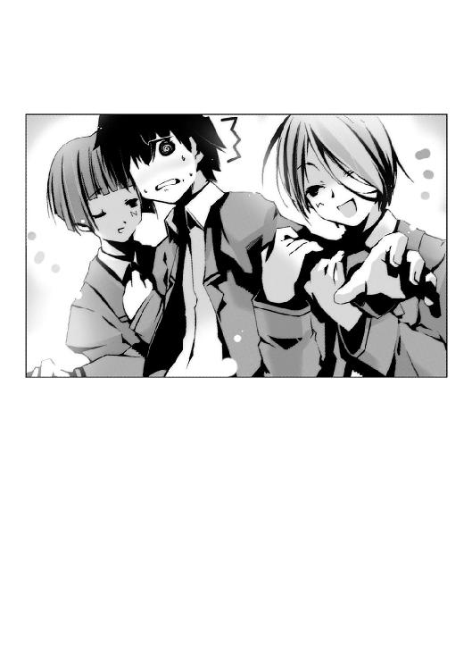
「助けてくれって言ってるんだよ！」
数分も歩くと、亜梨子たちは目的地に到着した。
大きな広場に、獲物を狙うヘビのようにくねくねとカーブを描く人の列があった。先頭にあるのは、見上げるほど巨大な輪っかだ。
直径１２０メートル、地上高にして１３０メートルある大観覧車。
病院から見た時は、六角に区切られて六色のイルミネーションを輝かせていた。だが今は、全体から淡いブルーの明かりを放ち、夜空に浮かび上がっている。
「うはー、これぞ観覧車って感じね！」
「これに乗るんですよね。私、楽しみです」
「ほら、大助もいつまでもスネてないで。さっさと並ぶわよ」
亜梨子が呼びかけると、憮然とした顔の大助がこちらを見る。さきほど恵那たちがからかったことをまだ怒っているようだ。まったくヘンなところで子供っぽい奴である。
大助の携帯電話が鳴り、彼は誰かと話しだした。大助の顔つきが厳しくなる。
「どうしたの？」
「ごめん」
「ちょっと用事が入った。すぐに戻ってくるから、三人で楽しんできてよ」
作り笑いを浮かべ、大助がさっさと立ち去ってしまった。
「えー？ 薬屋くん、乗らないの？」
「残念ですね」
「ま、あんなのがいなくても別にいいでしょ。ほら、はやく並ぼう」
亜梨子たち三人は、長蛇の列に加わる。
一時間ほど待つと、ようやく入り口が見えてきた。大助からの連絡はない。本当に乗るつもりはないのだろう。
「申し訳ございません。席は四人乗りでして......」
「まいったな。一人余っちまう」
残すところあと数組というところで、前のグループと係員の会話が聞こえた。五人組の男女である。
「悪い、寧子。俺たち、先に乗っていいか？」
「え......？」
音楽バンドの仲間だろうか。ギターケースを背負った少年が、長身の少女に言う。
ムッ、と亜梨子は眉を寄せた。いっしょにいるにも拘らず、他の誰も異論を口にしなかったからだ。少女自身が反論しなかったことで、決定したようだ。一人を残し、やってきたゴンドラに四人の男女が乗り込む。
係員が、亜梨子らのもとへやってきた。
「お客様がた、三名様でよろしいでしょうか？ 申し訳ないのですが......前の方と合い席していただけませんか？ 見ての通り、大変混み合ってまして......」
「えー？」
不満の声を上げたのは、恵那だった。
亜梨子は、残された少女を見る。亜梨子より二、三歳ほど年上だろう。雑誌モデルのように長身で、ロゴの入ったシャツの上にジャケットを羽織った少女だ。綺麗な横顔を上げ、観覧車を見上げている。
「いいですよ」
亜梨子は、前のゴンドラを睨みながら頷いた。係員はホッとしたように「申し訳ありません」と言い残して入り口に戻っていく。
「なんでＯＫしちゃうかなぁ、このコは......三人で乗るのが楽しいのに」
「いいじゃない。誰だって、一人で乗ったら寂しいでしょう」
「はあ？ ていうか、亜梨子......アンタ、なんで怒ってんの？」
「私も、構いませんよ」
喋っているうちに、亜梨子たちの順番がやってきた。
乗車口に新しいゴンドラが降下し、乗客が降りる。係員の誘導にしたがって、長身の少女、寧子と亜梨子たちはゴンドラに乗り込む。
円筒状の形をしたゴンドラの入り口を、係員が閉める。ガタン、と揺れ、ゴンドラがゆっくりと上昇していくのが分かった。
内部は二人掛けのシートが向かい合う形となっていた。亜梨子と多賀子が並び、向かいに寧子と恵那が並ぶ。
「動いた、動いたわよ、亜梨子、多賀子！」
「少しドキドキしますね」
海がある方角の窓を見ながら、恵那と多賀子が目を輝かせる。
一方、亜梨子は反対側の街を見つめていた。さきほど訪れた病院は、まだ見えない。
「あ、あ、もう少しで海が見えそう！ ほら、亜梨子！」
「どこからが海なのか、分かんないじゃない」
三人の少女がはしゃいでいた時だった。
「......はぁ......」
重い。
鉛のように重苦しい嘆息が聞こえた。
身を乗り出した姿勢のまま、亜梨子たちの表情が固まる。
「......なんか......疲れちゃったな......」
一瞬、目に見えない亡霊が喋ったのかと思った。あまりの存在感の薄さに、その人物のことを忘れていたのだ。
シートの隅──そこだけなぜか蛍光灯が故障したように点滅している──に座った、というより、もたれかかった少女が呟く。
「......楽に、なりたいな......」
同席した長身の少女だ。寧子という名前しか知らないが、彼女は窓ガラスに額を押しつけ、生気のない瞳で夜景を見下ろしている。
「......はぁ......」
ゴンドラ内部の温度が、急速に冷えていく。
「......」
亜梨子と恵那は押し黙り、窓から離れる。
「う、海が見えるまで、じっとしてようか。その......危ないし」
「そうね。あは、あはは、海が見えたら教えてね、恵那」
「どうかしたんですか、亜梨子さん？ 恵那さんも」
空気の重さに耐えきれず、ひきつった笑みを浮かべる亜梨子と恵那。多賀子だけが、不思議そうな顔で二人の顔を見比べている。
寧子の表情は、まるで人形のように感情が見えない。だが全身から重苦しい、いわゆる〝ワケあり〟のオーラを放っていた。
恵那が表情を輝かせ、腰を上げる。
「あ！ あれ、灯台じゃ──」
「......はぁ......」
「どうでもいいよね......灯台なんて......」
指さしかけていた腕を下ろし、恵那がゆっくりと元の体勢へと戻る。色々な意味で動じることのない多賀子だけが「あら、ほんとうですね」と、楽しげに笑っている。
「......はぁ......」
静まりかえったゴンドラに、寧子の陰鬱なため息だけが満ちていた。
３
「自殺とか、なさいませんよね......？」
「いざとなったら、止めるわよ......！」
顔を寄せ合った状態で、亜梨子たち三人が囁きあう。だが直後、恵那が驚いた顔で亜梨子の背後を見た。
「あ、亜梨子！」
「え？」
振り向くと、冷んやりとした感触が亜梨子の喉に触れた。氷を押しつけられたような冷たさに、全身が鳥肌立つ。
寧子が、両手で亜梨子の喉に触れていた。亜梨子と寧子の顔が、間近で交錯する。
「なっ......？」
「声......」
「え？」
「出してみて......」
すぐ近くで、寧子の唇が動く。リップを塗っているのだろう、ピンク色に薄く光っている。間近から見ると、寧子の瞳は色素が薄いことに気づく。黒というより茶色に近い。
「ナンデショウ......？」
硬直したまま、ぎこちない声を出す。すると寧子はにっこりと微笑み、亜梨子の首を絞めていた手を離す。
「やっぱり......良い声......」
満足げに呟き、またシートに腰を落とす。
「だ、大丈夫、亜梨子？」
「助けるどころか......こ、こっちが殺される......！」
「なんていうか......変わった方ですね」
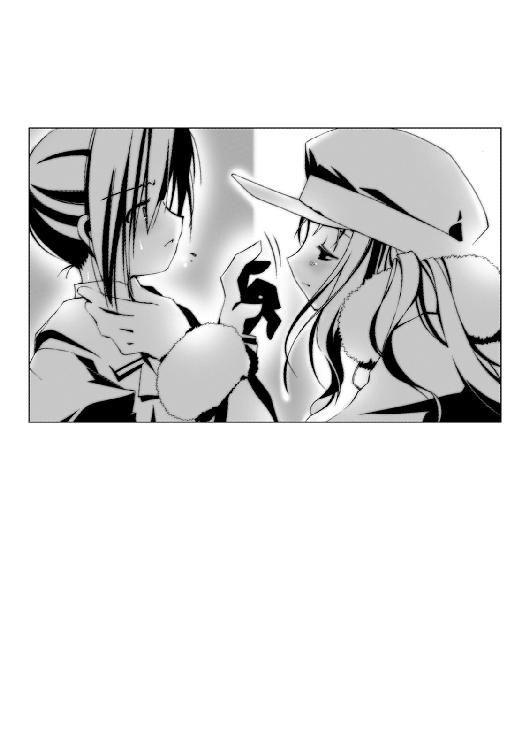
「......はぁ......」
また沈黙と、重い空気。
こ、こういうことだったのね──。
亜梨子は顔をひきつらせながら、心の中で納得していた。寧子には悪いが、彼女だけを残していった仲間たちの気持ちが、ほんの少しだけ分かったような気がした。
観覧車は頂上までの半分を越えたあたりだろうか。街の全景が一望できる高さに達していた。地上のネオンがまばらに瞬いている。
その時だった。
「きゃっ！」
亜梨子、恵那、多賀子の悲鳴が重なる。
突然、大きな揺れが観覧車を襲ったのだ。ゴンドラが激しく左右に揺れる。
「な、なに？」
恵那や多賀子と同様に壁にしがみつきながら、亜梨子はとっさに観覧車を支える鉄柱を見る。イルミネーションが乱れ、点滅していた。揺れながらも、観覧車の回転は止まらない。ゴンドラは上昇し続ける。
窓の外に、銀色の燐光が舞い降りた。
モルフォチョウだ。何かを警告するように、窓の外を８の字に旋回している。
「摩理......？」
亜梨子は眉をひそめる。
揺れは間もなく収まっていく。が、点滅は止まらない。窓の外の電球が火花を散らし、砕け散った。多賀子の手を握った恵那が、不安そうに周囲を見回す。
「な、なんだったの、今の......？」
静まりかえったゴンドラ内部に、あのため息がやけに大きく響いた。
「......はぁ......」
亜梨子は、壁際に座る寧子を見た。恵那と多賀子が、ぞっとした顔をする。
寧子は別世界の住人のように、惚けた表情で街並みを見下ろしていた。白い顔が、先ほどまでとは違う異様さを秘めていた。
微震がゴンドラを揺らした。金属がこすれ合う音が、観覧車全体に伝わる。
「ど、どうして平気なのよぉ......」
恵那が、不気味そうに呟く。
寧子の唇が、動いた。
──リンゴーン、リンゴーン、海渡る鐘、彼の大地へと届け......──。
「！」
亜梨子は、その一瞬の光景を見た。
壁によりかかる寧子の体から、霧のような何かが飛び出した。弾けるようにして光輝く輪郭を消したのは、翅を拡げたキリギリスに似た異形の怪物だった。六つの眼が空気に溶け込むところまでが見えた。
──輝きの福音、蘇りの子、鐘の音に誘われる、リンゴーン、リンゴーン......──。
寧子が唇を動かしている。だが歌は、周囲の空気そのものから響いてくるようだった。声に重なり、『リィィ......ンン』という鈴の音に似た音が聞こえる。
観覧車の揺れが、激しくなっていく。恵那と多賀子は目の前の光景に声を失っていた。
窓の外をモルフォチョウがあわただしく舞う。
「あなた、まさか......」
亜梨子は、寧子を見つめる。
「虫憑き......？」
──寧子の唇が、笑みの形に歪んだ。
「......虫憑き......？」
声を上げたのは、恵那だった。だがパニックに陥りかけた彼女を制したのは、意外にも多賀子だった。恵那を抱きしめ「大丈夫ですよ。落ち着いて」と声をかける。恵那はハッとして、多賀子を抱き返す。
亜梨子と大助が出会った事件で発見された虫憑きは、多賀子の幼なじみだった。虫憑きを見たのがはじめてではないということと、本来の芯の強さが幸いした。多賀子が恵那をなんとか落ち着かせてくれたようだ。
揺れの強さに比例して、寧子の〝歌声〟も高まっていく。
「やめなさい！」
亜梨子はとっさに、寧子のシャツにつかみかかる。歌声が止まる。同時に、観覧車を襲っていた揺れが弱まっていく。
寧子が、ぼんやりと顔を上げた。生気の感じられない瞳に、亜梨子は寒気をおぼえる。
「最期に、この街を......いちばん高いところから見られて、よかった......」
歌声は止まったが、空気そのものが震えるような音は鳴り続けている。
「この音は、あなたの仕業ね！ この観覧車をどうするつもり？ 何をしているの？」
観覧車が揺れる。
寧子は微笑み、口を開ける。
鈴の音が高まっていく。まるで寧子の喉が、周囲の空気を震わせているかのように。
病院で、大助から聞いた説明を思い出す。
虫憑きには三種類のタイプがいる。実体化した〝虫〟を下僕とする分離型。〝虫〟が自分の体と同化して、超人的な身体能力を得る同化型。そして実体のない〝虫〟を意のままに操る特殊型である。そのどれもが、超常的な力を使う代償として、みずからの〝夢〟を〝虫〟に喰われていく。寧子の〝虫〟は、特殊型の虫憑きのようだ。
「やめなさいと言ってるでしょう！」
震動が小さくなっていく。鈴の音がボリュームを落としていく。
「見て......」
亜梨子に摑みかかられた体勢で、寧子が窓の外を見た。
警戒しながらも亜梨子は窓を見て、思わず息をのんだ。恵那と多賀子もまた、今の状況を忘れてその光景に見入っていた。
亜梨子たちの乗るゴンドラは、観覧車の最も高い位置に達していた。
地上に、星空が敷き詰められていた。
真っ黒に塗られた一面に、輝きの粒が無数に散らばっている。本当の星空と違うのは、それらの一つ一つが血潮のように蠢いていることだ。色とりどりの輝きが、生きている証拠として動き回っている。
「あそこ......」
こつん、と寧子の細い指先が窓を叩いた。
「あそこの下町で、わたしは育ったの。まだ木の電柱があるような、古い町。おじいさんやおばあさんばかりで、同じ年頃の子は数えるくらいしかいなかった......」
亜梨子たち三人の視線が、寧子を見る。
「あそこ......」
次に寧子が指さしたのは、線路や国道が密集する地域だった。亜梨子がよく利用する駅も、そこにある。
「中学生になった頃、下町から出たことがなかったわたしたちが、はじめて大勢の前で歌った場所......最初は、誰も立ち止まってくれなかった。でも最近になって、何人かがわたしの歌を聴いてくれるように......」
寧子の声が、かき消えた。すると鼓膜を震わせていた鈴の音にノイズが走ったように聞こえた。揺れが観覧車を襲う。
頂上から、ゴンドラが下降していく。
「ああ、広いなって思った......」
息をつき、再び寧子が語り出す。
「もっと、もっと広いところへ行こう......そう思った時、鐘の音が聞こえた......そしてわたしは、虫憑きになった......」
少女の吐息が、亜梨子の頰にかかった。寧子の顔に、濃い疲労の色が浮かんでいた。
寧子の様子を見て、亜梨子はいやな予感をおぼえる。
「まさか、あなた......〝虫〟に夢を......？」
自らに寄生した〝虫〟に夢を食い尽くされた虫憑きは、死に至る──それは人々の間で噂されている通り、事実だということは大助から聞いている。
「ね、ねえ、あれ......！」
窓にはりついた恵那が、外を指さした。亜梨子たちを乗せたゴンドラのはるか下、観覧車を支える最も大きな支柱に、まるで見えない何かに削られているかのように傷が刻まれていく。支柱に重なって、光り輝くキリギリスの輪郭が見えたような気がした。
「でも、わたしたちは、もう戻れない......」
寧子が、微笑していた。亜梨子は訊く。
「......どういうこと？」
「もう逃げられないから......わたしたちは、追いつめられてしまった。彼ら、特別環境保全事務局に......」
亜梨子は目を見開いた。特別環境保全事務局は、大助が所属しているという機関だ。
「特別環境保全事務局......特環につかまった虫憑きは、必ず自分の〝虫〟を殺される......そうして〝欠落者〟になったら、もう二度と夢を見られない。歌うことができない......歌えなくなるくらいなら、生きている意味なんてないもの......」
「だから、私たちも道連れになさろうと？」
多賀子の言葉に、恵那が小さな悲鳴を上げる。
亜梨子はとっさに窓の外を舞うモルフォチョウを見た。──しかし、亜梨子の手にはモルフォチョウと一体化するための武器がない。そのうえ、実体がない寧子の〝虫〟に対して、どうやって対抗すればいいのか分からなかった。
地上に着きさえすれば、なんとかなるはずだ。特別環境保全事務局が来ているなら、大助もこの事態を知っているだろう。
「さっき、〝最期に〟って言ったわね。ここで見つかると、どうして分かったの？」
時間を稼ぐため、亜梨子は寧子にたずねる。少女が微笑んだ。
「わたしたちの前に、ゴンドラに乗った人たちがいるでしょう？ 彼らが特環と話しているのを、聞いてしまったから......ここでわたしの逃げ場を失わせるかわりに、彼らは助けてもらえるみたい......逃げてる最中だったのに、ここへ来ようと言ったのも彼ら......」
亜梨子は絶句した。乗車前の、仲間たちの寧子を突き放すようなあの態度。あれは、寧子を一人にするための──。
状況を忘れ、亜梨子は声を荒らげる。
「裏切ったってこと？ あの人たちは、あなたの仲間じゃないの？」
だが寧子は無言で微笑むだけだ。亜梨子の中に激しい怒りがわき上がる。
「どうして、逃げなかったの！ ワナだと知っていたんでしょう？ どうして......仲間に裏切られたっていうのに、どうして笑っていられるのよ！」
「人を、信じたことがある......？」
寧子が、亜梨子の目を見つめ返す。その表情には、誰に対する怒りや憎しみも感じられなかった。あるのは、深い悲しみ──。
「裏切られた。そう思ったことは、ある？」
亜梨子は言葉を詰まらせた。
花城摩理──。
亜梨子は、摩理のことを親友だと思っていた。学校の友人たちよりも、ずっと多くのことを語り合ったつもりだった。
ホルス聖城学園の中等部に入学して以来、いちども登校していない同級生。それが花城摩理だった。友人を作り、当たり前のように学園生活を送っていた亜梨子の視界に、空っぽの席がいつも入っていた。
──ごめんなさい。私、クラスメートの名前も顔も分からなくて......。
ある日、突然に見舞いに訪れた亜梨子と摩理との会話は、自己紹介から始まった。
以来、亜梨子は毎日のように摩理の見舞いに訪れた。よく笑ったことはおぼえているが、何を話したのかはおぼえていない。時間ならいくらでもあった。亜梨子は摩理になんでも話したし、摩理もそうであると信じていた。
だが、違った。
摩理は無言で姿を消し、残されたモルフォチョウの存在で、亜梨子は摩理が虫憑きであったことを知った。
「裏切られたと思った時、あなたはどうするの......？」
寧子が、亜梨子を見た。そして恵那、多賀子と視線を移していく。
「あなたは？ 怒る？ それとも、涙を流す？ 絶望して、何もできなくなるかもしれない......信じていた思いが強いほど、裏切られた時、色々なものが変わるのかもしれない」
金属が叩かれる音が響く。揺れが激しさを増していく。息をのむ亜梨子たちの顔を見て、寧子が不気味な微笑を浮かべる。
「そして、わたしは......どうすると思う？」
「お願いだから、もうやめて......！」
耐えきれなくなったように、恵那が叫ぶ。
直後、亜梨子は目を見開いた。
「な──」
窓の外、ゴンドラから見える空に、無数の異形の怪物たちが現れた。
翅のようなものを羽ばたかせ、なかにはそれすらもせずに宙に浮かんでいるものもいる。共通しているのはどれもが醜悪な外見をしていて、昆虫に似ているということだ。
怪物たちが、亜梨子たちの乗るゴンドラに向かって襲いかかる。
「きゃああああああっっ！」
悲鳴を上げる恵那を、多賀子が抱きしめる。
何体もの〝虫〟が、いっせいにゴンドラに体当たりを喰らわせた。
「......っっ！」
前後も分からないほど、強烈な揺れがゴンドラを襲う。窓ガラスが割れ、ドアがひしゃげて中にいる亜梨子たちを傷つける──ことは、なかった。
亜梨子は、自分の目を疑った。亜梨子だけではない、抱き合う恵那と多賀子もまた、状況を忘れてその光景に見入っていた。
自分たちが乗るゴンドラが、破壊された直後の光景でピタリと停止していた。
──リンゴーン、リンゴーン、永遠の風、おお、その陽を見よ──。
歌声が、聞こえた。
割れたガラスが、曲がった壁が、逆戻しされていくように元の形を取り戻していく。ゴンドラが淡い輝きに包まれ、完全に元の状態へと戻る。
「え......？」
亜梨子は、無意識に呟く。
「誰かが、私たちを守ってくれた......？」
空を舞う〝虫〟たちも、意外だったようだ。動揺したように宙を彷徨っていたが、すぐに思い出したように攻撃を再開する。
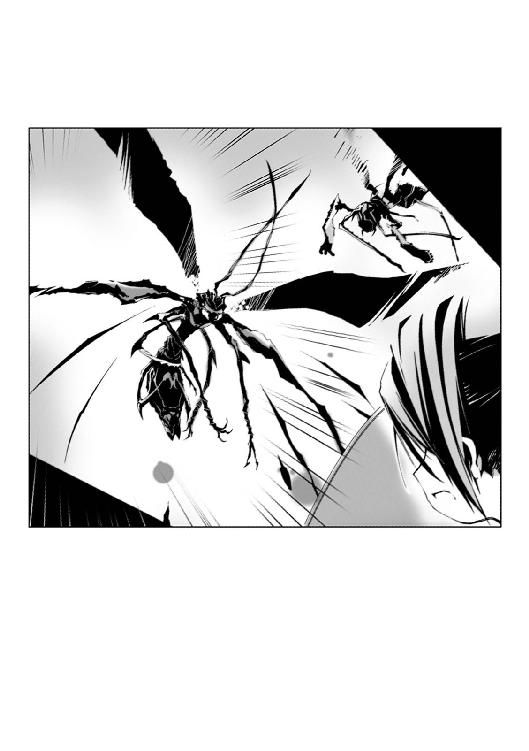
「いやあっ！」
また激しい震動が観覧車を襲った。だが、同じ現象の繰り返しだった。ゴンドラが壊れた直後、淡い輝きを纏って修復されていく。
「違う──」
観覧車を支える支柱を見下ろし、亜梨子はようやく事態を理解した。
鋭い、大きな爪が見えた。虚空から生えた何本もの爪が、金属の支柱を激しく攻撃している。対して、光り輝くキリギリスの輪郭が、爪と戦うようにして支柱をかばっているのが見えた。鈴の音が鳴るたびに、削られた柱が再生するように元の姿を取り戻していく。
「私たちを守っていたのは、あなた......？」
「巻き込んで、ごめんなさい......」
寧子の顔が、辛そうに歪んだ。力を使い続けたために、消耗しているのだろう。
「せめて、あなたたちだけで......も──」
言葉の途中で、寧子の目から生気の光が途切れる。だがそれは一瞬のことだった。寧子が奥歯を嚙みしめ、意識を取り戻す。
「なんとか......地上に......」
「......！」
亜梨子は握りしめた拳に、力を込める。
──なんか......疲れちゃったな......。
寧子は、観覧車に乗った時から、すでに疲れ果てていたのだ。ここまで逃げてくるのに必死だったのだろう。だが彼女は、亜梨子たちを巻き込むまいと最期の力を振り絞っているのだ。〝虫〟の力を使い、自らの夢を〝虫〟に喰い尽くされる──それが、死を意味することを知っていながら。
「......最初から、私たちを攻撃していたのは特環だったんですね」
恵那を抱きながら、多賀子が言う。
「この観覧車には、無関係な人も大勢乗っているはずですのに......」
「彼らは......容赦ないから......」
「どうして......あなたみたいな人が、狙われるの？」
亜梨子には、寧子が悪い存在には見えなかった。追われ、裏切られ、それでも寧子は亜梨子たちを助けるために力を使っている。
「虫憑きだから、でしょうね......」
「そんなの......！」
「あなたは、虫憑きと会ったことがあるのね......その中に、危険な人はいなかったの？」
寧子の問いに、亜梨子は言葉をつまらせる。
播本潤。大助と出会うきっかけともなった、摩理以外にはじめて知った虫憑き。彼は〝虫〟の力を使って人々を傷つけた。
「わたしたちは、虫憑きというだけで危険なのかもしれない......わたしたちは、何があっても心の奥では何も変わらないから......」
「......そんな理由で、納得できるわけないでしょう！ すぐにやめさせるわ！」
亜梨子は携帯電話を取り出し、大助の番号を押す。地上のどこかにいるはずだ。だが、彼が電話に出ることはなかった。
「そう、特環の中に知ってる人がいるの......その人も、きっと辛いでしょうね」
寧子の言葉は、亜梨子にとって信じられないものだった。今まさに攻撃されている相手のことを、寧子は辛いと言う。
「なんで、そんなことが分かるの？ あいつに会ったこともないのに！ あいつは他人のことなんて──」
「分かるわ。わたしも虫憑きだもの......」
寧子が、嘆息とともに言う。
「なにかと戦っていない虫憑きなんて、いないわ......」
亜梨子は、思い出す。
病院で見た、大助の疲れ切った顔。口では平静を装っていたが、一瞬だけ見えた彼の横顔はひどく辛そうに見えた。彼もまた、なにかと戦い続けているのだろうか？
「虫憑きって......いったい、何なのよ......！」
携帯電話を閉じ、声を絞り出すようにして亜梨子が吐き出す。
「私には、分かんないわ！ 虫憑きの誰の気持ちも、分からない！」
亜梨子たちのゴンドラが、間もなく地上に到着しようとしていた。だが、観覧車の揺れは最高潮に達していた。さらに、ゴンドラを覆う淡い輝きが薄まりつつあった。
「ご......めんなさ......わたし......もう......」
寧子の瞳が、色を失いつつあった。割れたガラスが、ついにゴンドラ内に散らばる。
「なんとか......なんとかしないと......！」
体当たりを続ける〝虫〟たちを睨み、亜梨子は奥歯を嚙む。モルフォチョウが一体化するための武器さえあれば反撃ができるのだが、そうそう都合良く棒が転がっているわけもない。
ゴンドラは地上のすぐそばまでやってきていた。だが、このままでは降車口に到着する前に、観覧車が破壊されてしまう──。
その時だった。
ピタリ、と特別環境保全事務局の攻撃がやんだ。ゴンドラを襲っていた〝虫〟たちが、何者かの攻撃を受けて地上に墜ちていく。
不意を突く形で、ゴンドラを包囲していた〝虫〟たちに逆に襲いかかっているのは、やはり翅を拡げた〝虫〟たちだ。
「まさか......」
逆襲する〝虫〟の数は、四体。──寧子の仲間と、同じ数である。
「裏切ったんじゃなかったの？」
寧子が、目を閉じた。汗が浮かんだ彼女の口許が、ほころんでいた。
──わたしは、どうすると思う？
ついさっき、寧子が口にした言葉を思い出す。亜梨子は唇を嚙みしめる。
「裏切られても......あなたは何も変わらなかったっていうの......？」
寧子が微笑んだ。
裏切られても、彼女は何も変わらなかった。怒ることもなく、憎むこともなかった。
──虫憑きは、心の奥では何も変わらないもの......。
裏切りが偽りだったことを知っていたわけではないだろう。本当に裏切られたと思っていたはずだ。だが、それでも寧子は──。
「あなたは、信じ続けた......！」
「最期に......綺麗な街が見られ......て、よかった......」
寧子の長身が、シートに沈む。彼女の瞳に映る夜景が、急速に色あせていく。
四体の〝虫〟たちの奇襲によって、特別環境保全事務局の〝虫〟たちは次々と打ち倒されていく。恵那が顔を上げた。
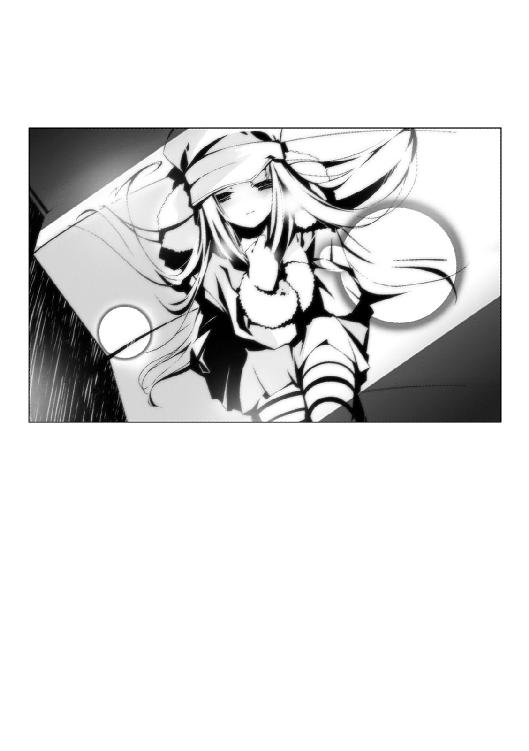
「助かった......の......？」
ゴンドラが、地上に到着しようとしていた。
「......！」
激しい揺れの中で、亜梨子は窓の外を舞う一匹の〝虫〟を見た。
緑色の翅を羽ばたかせた、異様に触角の長いかっこう虫だ。
この〝虫〟は──。
緑色のかっこう虫が、姿を消す。
「簡単に〝最期〟なんて言うのは、やめなさい......！」
砲撃音が、響いた。
大砲でも撃ったかのような轟音だ。夜空を飛んでいた四体の〝虫〟たちが、翅を撃ち抜かれて地上に落下していく。
「み......んな......！」
寧子が、目を見開いた。
「戦い続けるのが虫憑きだというのなら、本当の最期まで戦い続けてみせなさい！」
摩理の笑顔が思い浮かんだ。
亜梨子の親友は戦うことすらできなかった。
──いや、それすらも違うのかもしれない。戦うことを諦めたから、彼女はこの世を去ったのかもしれない。
今となっては真相を知ることができない。亜梨子にできることは、たった一つだった。
信じること。
裏切られたことを知ってなお、信じ続けた寧子のように。
そのことを教えてくれた寧子を、ここで諦めさせるわけにはいかなかった。
ゴンドラが、地上に到着する。
直後、外側から強引にゴンドラの入り口が開け放たれた。
──そこにいたのは、黒色の悪魔だった。
４
髪を逆立て、ゴーグルで顔の大半を覆い隠し、漆黒のコートを翻した人物が佇んでいた。片手に握っているのは、赤い眼を輝かせた〝何か〟と一体化した大型の自動式拳銃だ。
悪魔が持つ拳銃から、無数の触手が飛び出した。それらは瞬時に悪魔の身体に巻きついていく。ゴーグルをかぶった悪魔の頰に、緑色の模様が浮かび上がる。
「寧子っ！」
ゴンドラと悪魔の間に、傷ついた四体の〝虫〟が割って入った。
黒い悪魔が、立ちはだかる〝虫〟たちに向けて拳銃を構える。
「やめ......て──」
寧子が顔を歪め、手を伸ばす。
「やめさせるっ！」
亜梨子が吼えた。
モルフォチョウが、開け放たれたドアからゴンドラに舞い込む。
モルフォチョウは亜梨子が握った金属の取っ手に降り、全身から銀色の触手を伸ばしていた。触手は一瞬にして取っ手をひきちぎり、自らの躰を変形させて巻きついていく。
銀光を放つ四枚の翅が開いた。一対が刃と化し、残る一対は銀色の鱗粉をまき散らす。
漆黒のコートを纏った人物が握る拳銃が、業火を噴いた。
「......っっ！」
亜梨子が〝虫〟たちの前に躍り出る。直前で、手にした槍で銃弾を遮る。
衝撃が、ゴンドラを突き抜けた。
誰かの悲鳴が聞こえたような気がした。だがそれも衝撃音にかき消され、すぐに聞こえなくなる。開け放たれたドアが吹き飛び、シートを残して屋根が無惨に打ち砕かれる。
「ちっ......！」
舌打ちとともに、黒い悪魔──大助が〝虫〟めがけて拳銃を構えなおす。
「やめなさいっ！」
怒鳴り、亜梨子は返す刀で槍を頭上から振り下ろす。
「くっ......！」
ぎりぎりのところで、大助が拳銃のグリップで槍の腹を叩く。
槍が軌道をそれ、大助の足元の地面に打ち込まれる。直後、銀色の鱗粉が周囲にはじけ飛んだ。アスファルトの粉塵をまき散らし、地面が爆発したように巨大な亀裂が走る。
爆発がやむと、静寂が周囲を包んだ。
観覧車がある広場は、閑散としていた。どんな手段を使ったのか、ゴンドラが一周する間に一般人は残らず避難させられたようだ。
かわりに亜梨子たちを包囲しているのは、大助と全く同じ格好をした人々だった。彼らが特別環境保全事務局なのだろう。
「寧子！」
破壊されたゴンドラに、四人の男女が駆け寄った。年代は全員、寧子と同じくらい。金髪に染めた少年を先頭に、メガネをかけた少年、筋肉質でいかつい体つきをした少年、ベリーショートの髪をした少女の四人だ。寧子をかばうように、間に割って入る。
「みん......な......」
生気を失い濁った瞳で、寧子が仲間たちの顔を見上げる。向かいのシートでは、恵那と多賀子が気を失っていた。外傷はないが、張りつめていた気が解けてしまったのだろう。
「すまん......もっとうまくやるはずだったのに......！ あの化け物さえいなけりゃ......！」
「夜森寧子を売り渡したと見せかけて、背後から奇襲をかける......逆に俺たちをワナにはめたつもりだったのか？」
亜梨子と睨みあったまま、大助が言い放つ。その声は普段の彼とは別人としか言いようがないほど冷淡だ。今の姿が、特別環境保全事務局の一員としての本来の姿なのだろう。
寧子の仲間たちが、自分たちの〝虫〟とともに大助と向かい合う。
「逃げろ、寧子！ こいつらは、俺たちがなんとかする！ せめて道連れに......！」
「寧子、せめてアンタだけでも......！」
盾となろうとする仲間たちを、寧子は辛そうな顔で見ていた。
「逃げられると、思ってるのか？」
だが、拳銃を構えようとした大助に、亜梨子が槍をつきつける。
「......なんのつもりだ」
「どうして、彼らを狙うの？」
「こいつらが、虫憑きだからだ。どっちにしろ、一人も逃がすつもりはなかった。全員、〝虫〟を殺して欠落者にしてから連行する」
「そんなこと、させるものですか」
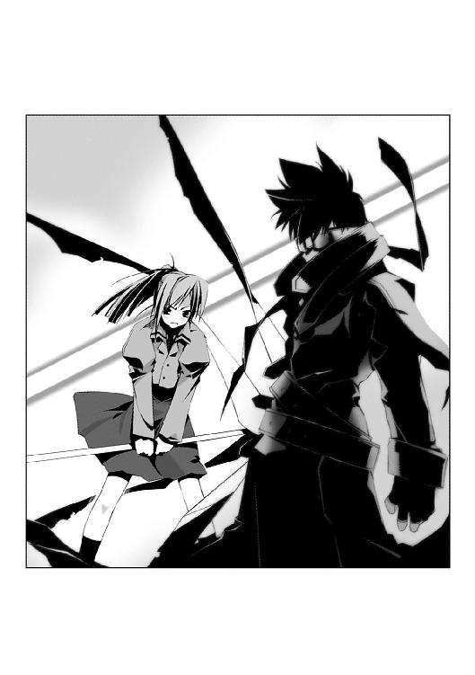
「どうしてお前が連中をかばう？」
亜梨子は、大助を睨みつける。
「〝虫憑きだから〟......？」
大助から視線を外し、寧子を見る。彼女は青い顔で、亜梨子を見上げていた。
「そんな理由で戦ったり、諦めたり......そんなの、私にはただの言い訳にしか聞こえないわ。とても気に入らない」
「お前は虫憑きじゃないからな」
言い、大助が拳銃を持たないほうの手を持ち上げる。彼の背後に控えていた黒コートたちが、いっせいに攻撃態勢に入る。反射的に、寧子の仲間たちも身構える。
亜梨子もまた、槍を握る手に力を込めた。戦う覚悟は、すでに決めている。
大助がかざした手を振り下ろそうとした、まさにその直前だった。
「......戦う......」
寧子の声が、沈黙を破った。
「そう......わたしたちは、まだ戦い続けることができるかな......」
長身の少女の目は、亜梨子を見ていた。
「たとえ、それがどんなに辛くても......自由を奪われることになっても......生きていさえすれば、いつかきっとまた歌える......はずだよね......文字通り、悪魔に魂を売ってでも、生き続けてさえいれば......」
その場にいる全員の視線が、寧子に集まる。
今にも張りつめた空気が弾けそうな空気の中、寧子が深いため息をこぼす。同じため息のはずなのに、亜梨子にはゴンドラの中で聞き慣れたものとは違うように感じた。
大助に向かって顔を上げた寧子の表情には、決意の色が込められていた。
「ねえ、あなた......あなたたちに捕まると、わたしたちは欠落者になるしかないの？ それとも......そう、もしかしたら、あなたたちみたいに──」
５
──地上に、星空が敷き詰められていた。
真っ黒に塗られた一面に、輝きの粒が無数に散らばっている。本当の星空と違うのは、それらの一つ一つが血潮のように蠢いていることだ。色とりどりの輝きが、生きている証拠として動き回っている。
ついさっき、同じ光景を見たばかりだ。それなのになぜか、綺麗な夜景は他人事のようにそっけなく見える。
あんなに美しく見えたのは、寧子がいたからだろうか。街の灯を誰よりも美しいと感じていた彼女がいたからこそ、亜梨子たちにも彼女と同じ光景が見えたのかもしれない。
亜梨子と大助は、上昇するゴンドラの中にいた。
「寧子さんたち、これからどうなるの？」
「〝ねね〟」
「......？」
「あいつにはもう、コードネームが与えられてる。特殊型の、それも復元能力を持つ虫憑きは貴重だからな。たぶん、上の連中も納得するはずだ。仲間の四人は......本来なら、あの程度の能力じゃ有無をいわさず欠落者にされてるところだけど、〝ねね〟を特環に縛り付ける意味でも受け入れられるだろう。せいぜい、コキつかわれるだろうけどな」
特別環境保全事務局の一員となる──それが、寧子が選んだ決断だった。
大助は、彼女の要望を意外にもあっさり受け入れた。理由は今、彼が言った通りである。寧子の能力には、そうとう手を焼いていたらしい。攻撃力は皆無だが、傷ついてもたちまち回復してしまうからだ。だから特環は、寧子の仲間を使って逃げ場のない観覧車に誘い、消耗させる作戦に切り替えた。たまたま近くにいた大助にも命令が下された。一方、寧子の仲間たちは逃げられないと悟り、作戦を逆手に不意を突くことを考えた──。
今、亜梨子たちが乗っている観覧車は、寧子の力によって修復されたものだ。あの後、すぐに寧子がまた歌い出したのだ。大助は「余計なことで力を使うな」と止めたが、
──綺麗な街を、もっと人に見てもらいたいから......。
と微笑み、亜梨子を見て言った。
──ありがとう......。
何が〝ありがとう〟なのか分からなかったが、とにかく寧子は生き続ける決意をしたようだ。
間もなくすると、どこに避難させられていたのか、何事もなかったかのように観覧車に客が戻りだした。その場に残った亜梨子と大助だが、少年は無言で観覧車の列に加わった。亜梨子は怪訝に思いつつも、彼の横に並んだ。
恵那と多賀子は、いまごろ自宅に到着しているはずだ。あのあと、連絡をうけた多賀子の家の使用人がやってきて、気を失ったままの多賀子と恵那を連れて帰っていった。
夜景を望む亜梨子の視界に、銀色の光が舞い降りた。モルフォチョウだ。そのはるか向こうに、摩理がいた病院の明かりが見えた。
「そっか......よかった、のかな？」
亜梨子が口にした時だった。
水面に落ちた滴のように。病院の明かりを見る亜梨子の瞳に、波紋が拡がった。
──綺麗だね、あの観覧車──。
「......亜梨子？」
異変を感じたのか、大助が亜梨子を見る。
だが彼の声は、亜梨子に届いていなかった。閃光のように、ある記憶が蘇る。
──じゃあ、退院したらいっしょに行こっか！
モルフォチョウ。それに、観覧車。
あの日、病院の窓を背に言ったのは自分。
いや、違う。
言ったのは、一之黒亜梨子という少女。
──うん。約束──。
頷いたのは、自分。花城摩理。
摩理は、その約束を楽しみにしていた。
〝先生〟にそのことを話したら、彼も嬉しそうに笑ってくれた──。
「〝先生〟......？」
摩理の口から、呟きが漏れる。
「亜梨子？」
「......！」
大助の声で、亜梨子は我に返る。
なに......？ 今のは──。
ふと頭をよぎった光景に、亜梨子は違和感をおぼえる。
昔の、記憶？ 違う......私は、私を見ていた──。
「う、ううん、なんでもない」
「......今さら、ヤツらのことを気にしてもどうしようもないだろ。あの女たちが、自分でそう決めただけだ。でも......」
亜梨子の様子を見て、寧子たちの身を案じていると思ったのだろう。それまで無表情に夜景に見入っていた大助が、亜梨子を睨む。
「ガキの遊びじゃないんだ。中途半端なヤツが仲間になると、迷惑するのはオレたちなんだよ。......ったく、関係ないくせにどこかのバカが割り込んでくるから......」
大助の口振りに、亜梨子は今しがた思い出した光景を忘れ、ムッと唸る。
「じゃあ、どうしろっていうのよ」
「何もするなって言ってんだよ」
「それが気に入らないって言ってるんじゃない」
「お前のは、ただのワガママなんだよ。はぁ......これだから世間知らずのお嬢様は......」
「なによ、カッコつけちゃって。本当は恵那たちに抱きつかれただけで真っ赤になるよーな、ただのエロガキのくせに」
「あ、あれは関係ないだろ！ 第一、西園寺さんたちじゃなくお前みたいなペタンコだったら、赤くなんて──」
「亜梨子パンチ！」
「何度もくらうか！」
拳をよけた大助の手刀が、亜梨子の顔面を打つ。鼻をおさえ、亜梨子は眉をつり上げる。
「たっ......叩いたわね！ この私の、しかも顔を......！」
「な、なんだよ、お前だっていつも......！」
二人の取っくみあいは、観覧車が一周して係員に止められるまで続いた。
月浮かぶ夜空に、鈴の音の名残が響いた。
一之黒亜梨子の朝は、痛みと愚痴で始まる。
冷たい朝の冷気は、強く打ちつけた肩に染みた。中庭でさえずる鳥の鳴き声は、しかめっ面をした亜梨子を笑っているかのようだ。
「毎朝毎朝、死ぬ思いをする中学生なんていないわよ」
板張りの床は、氷のように冷たい。裸足で踏みつけるたびに、ギシギシと音がする。
一之黒家には本邸と別邸があり、さらに離れとして稽古場がある。亜梨子と両親、祖父が住んでいるのは本邸で、使用人や代々の師範代は別邸に住み込んでいる。
道着と袴姿の亜梨子は、不機嫌顔で本邸への渡り廊下を歩いていた。一之黒家の旧き風習である、早朝の稽古を終えたところである。
「この科学の時代に、時代遅れの護身術なんてなんの役にもたたない──」
「おはようございます、お嬢様」
別邸を通り過ぎようとして、割烹着姿の女性とすれ違う。祖母、母、娘の三代で一之黒家の身の回りの世話を務めてくれているうちの、娘である。
「おはよう」
仏頂面で通り過ぎようとして、振り返る。
──役に立ってるわ......悔しいことに。
ここ最近の自分を取り巻く環境を思い出し、渋々と認める。
「大助は？ もう起きてるの？」
「いいえ、まだ寝ていらっしゃると思いますけど」
ピクリ、と亜梨子の眉が動く。「まだ朝も早いですから」という女性の言葉を聞くよりも先に、亜梨子は足早に歩き出す。
渡り廊下を突き進み、本邸へ入る。障子が並ぶ古くさい廊下を歩いていく。
一之黒家の本邸には今、亜梨子の家族以外に一人の珍客が住んでいる。
彼が亜梨子と同居するにいたった経緯は複雑だが、そんなことよりも──。
「居候のクセに、ご主人様より遅く起きるなんて許せないわ」
一枚の障子の前で、立ち止まる。
こっそりと障子を開く。薄暗い部屋の真ん中に、布団の中で寝息を立てる少年がいた。
薬屋大助だ。
ある事件で亜梨子と出会い、彼女を監視する目的で同じ学校へ通う少年である。
「シアワセそうな寝顔が、いっそうムカつくわね」
こっそりと部屋に入り、隅へ移動する。深呼吸をして、タイミングをはかる。
「悶え苦しみなさい！ 亜梨子ダイビ──」
助走をつけ、布団の上に身を投げ出そうとした時だった。
「......ふゆ......ほたる......」
少年の口が、動いた。大助の顔が一瞬、辛そうに歪んだのが分かった。
ピタリと亜梨子は動きを止める。
「ふゆほたる......？」
聞いたことのない単語だ。彼が苦しげな顔をするのを、亜梨子ははじめて見た。
「大助に、こんな顔をさせるなんて......〝ふゆほたる〟って、一体......？」
神妙な顔をしながら、亜梨子は再び布団から距離を置く。
「──まあ、それはそれとして」
コホン、と一つ咳払いをする。
「あらためて、ご主人様の天誅をくらいなさい！ 亜梨子ダイビング！」
勢いをつけて、亜梨子が布団の上に身を投げ出す。
朝の本邸に、苦悶の悲鳴が響いた。
１
ホルス聖城学園中等部の昼休みは長い。
一時間近くある休憩時間を、生徒たちは思い思いに過ごす。グラウンドに出て体を動かす生徒や、図書室やパソコンルームなどの施設を利用する生徒、教室で談笑する生徒など様々だ。
一之黒亜梨子、西園寺恵那、九条多賀子の三人は、教室に残る派である。
亜梨子は朝の稽古だけで運動はたくさんだし、多賀子はパソコンはおろか機械製品全般にうとい。恵那はどちらも人並み以上にこなすが、必要以上にのめりこむことはない。
薬屋大助もまた、教室に残っていた。数人の男子の輪にまざり、談笑している。
「いつの間にか、薬屋くんもすっかりクラスになじんじゃったわよねぇ。ちょっとさびしいっしょ、亜梨子？」
前の席に座った恵那が、からかい口調で言う。その様子は以前とまったく変わらない。
──恵那がある事件に巻き込まれたのは、数日前のことだ。
亜梨子と多賀子とともに、市内の名所である観覧車を訪れた。事件はそこで起きた。
〝虫〟──。
少年少女に取り憑き、夢や希望を喰って成長する存在。それは噂の一言ですませるには、世間に浸透しすぎた怪物だ。〝虫〟に取り憑かれた人々は虫憑きと呼ばれ、恐怖の対象となっている。観覧車で、恵那はその〝虫〟を目の当たりにしてしまったのだ。
亜梨子や多賀子は、〝虫〟を見たのは初めてではない。そもそも多賀子の幼なじみが虫憑きとして暴れた事件で、亜梨子は大助と出会ったのだ。大助は特別環境保全事務局──〝虫〟を噂通り〝なかったもの〟として秘密裏に捕獲するための組織の一員である。
恵那は〝虫〟を見た晩、気を失ったまま帰宅した。だが翌日には、いつも通り登校してきた。
亜梨子がおそるおそる声をかけると、彼女は「あんな化け物、もう二度と関わりたくないわ」と嫌悪感を剝き出しに言い放ったきり二度と〝虫〟の話題に触れなかった。
特別環境保全事務局からも口外無用の要請があったことは予想できるが、本人にも〝虫〟と関わり合う気はないようだ。亜梨子に取り憑いたモルフォチョウはもちろん、大助の正体がバレないよう気をつける必要がある。
「......」
亜梨子は牛乳のパックに差したストローを嚙み、じっと大助を凝視する。
薬屋大助という少年は、どこから見ても普通の中学生以上でも以下でもない。平凡な外見に加え、誰とでも気軽に話す社交的な性格。
だがそれはあくまで表面上にすぎないことを、亜梨子は知っている。亜梨子と接する時の彼の態度は学校での彼とはまったく違うし、特別環境保全事務局のエージェントとしての彼はまさに容赦のない悪魔そのものだ。
「亜梨子さん？」
不思議そうに、多賀子が首を傾げる。
「心を開いてないわ！」
ダンッ！ と亜梨子は牛乳パックを机に叩きつける。
恵那と多賀子が、きょとんとした顔で亜梨子を見る。
「心を開いてないというのは......大助さんのことですか？」
「そう？ ごく自然な態度に見えるけど」
「分かってないわ、二人とも！ 家にいる時のアイツなんて、どこのチンピラかってくらい性格ワルイんだから！ 今朝も私がちょっと寝起きにジャンピングプレスかけたくらいで、ずっと口をきこうとしなかったし！」
「それは......薬屋くんのほうの気持ちが分かっちゃダメかなぁ」
「大助さん、かわいそうに......」
ため息をつく恵那と多賀子を、亜梨子は睨みつける。
「場所と相手によって態度を変えるのは、アイツが誰にも心を開こうとしてない証拠なのよ！ このままじゃ、ダメだわ。私がアイツの仮面をはぎとってあげないといけないの！」
「なんで亜梨子が、そんなにやる気を出すわけ？」
「ご主人様として、下僕を苦しみから解き放ってやる使命があるのよ！」
拳を握る亜梨子に対し、多賀子が「そうなのですか？」と首をひねる。恵那はにやにやと笑いながら「オモシロそうだから、いいんじゃない？」と言う。
亜梨子が大助と同居をはじめて、一カ月が経とうとしていた。
だが亜梨子は彼のことを知るどころか、謎が深まっていく一方だ。特別環境保全事務局とは何なのか。彼はどうして、あんなにも冷徹に虫憑きを捕獲することができるのか。裏腹に、普段はなぜ明るく振る舞えるのか。
亜梨子が大助のことを気にするのは、理由があった。
今は亡き親友、花城摩理。
彼女は虫憑きだったが、亜梨子はそのことを知らなかった。
摩理の死後、彼女の〝虫〟が亜梨子のそばにいるようになった。それによって、摩理が虫憑きであったことを知ったのだ。
亜梨子は〝虫〟が一体なんなのか、知りたい。〝虫〟を知り、虫憑きを知ることができれば、摩理がかつて何を想っていたのか知る手がかりになると思うのである。
そして今、亜梨子の最も身近にいる虫憑きこそ、薬屋大助なのだ。
「私は今ここに！ 大助改造計画を宣言します！」
力説する亜梨子に、恵那と多賀子が「おおー」と拍手する。
「で、内容は？」
「もちろん、これから考えるのよ！ さあ、どんどん提案していってちょうだい！」
「私たちも、考えるんですね」
少女三人が顔をつきあわせ、思案する。
その時、大助とクラスメートの会話が亜梨子の耳に入った。
「あのさ、薬屋くん。明日ヒマ？」
談笑していた大助に声をかけたのは、御林という童顔の男子生徒だ。人あたりの良い笑顔で、にこにこと微笑んでいる。
「え？ どうして？」
「となりの氷鉋市に、うちの姉妹校でエミリア女学院っていうのがあるんだ。そこの女子と親睦を深める会があるんだけど、男子の数が足りないんだよ。よかったら、どう？」
「それって要するに、合コンってやつじゃ......第一、どうしてオレなわけ？」
「薬屋くんっていいヤツそうだから。前に出てこないタイプっていうか......ヘンにでしゃばるヤツには、参加してほしくないからね」
邪気のない笑顔ではっきりと言う御林。
ようするに主役は自分と言いたいのだろう。露骨な言い方だが、幼い顔立ちと明るい笑みで嫌みが半減している。大助が苦笑する。
「せっかくだけど......オレはそういうのニガテだから、悪いけどやめとくよ」
亜梨子たちの眉が動く。
ガタンッ！ といっせいに席を立ち上がった少女三人に、クラス中の視線が集まる。
「行きなさい！」
亜梨子は、勢いよく人差し指を大助に突きつける。「うん、たしかにオモシロそうね」「でも、心を開くということに関係ないんじゃ......つられて立ち上がってしまいましたけれど......」と、恵那と多賀子が囁きあっている。
「そうよ、アンタには華々しさってものがないんだわ！ ちょっとは気合いを入れて、主役を奪うくらいの根性を見せてみなさい！」
大助が露骨に嫌そうな顔をする。
「一之黒さんには、関係ないだろ。オレはいやだって──」
「〝ふゆほたる〟......」
亜梨子は、ぽつりと呟く。
大助の反応は、予想以上に大きかった。目を見開き、呆然と亜梨子を見る。
「......！」
厳しい表情で足早に亜梨子へ歩み寄る。彼女の腕を引き、教室の隅まで連れて行く。
「どうしてお前が、あいつの名前を知ってる？」
クラスの生徒たちに背を向け、大助が小声で鋭く問い詰める。先ほどまでの笑顔から一変し、威圧感さえ感じさせる目つきだ。
だが亜梨子は、動じない。
「あいつ、ということは、やっぱり人の名前だったのね。この前の寧子さんも〝ねね〟っていうコードネームがあるらしいし、その線もあるかなって予想してたのよ」
「質問に答えろよ」
「今朝、アンタが寝言で言ってたの。それはもう、切なそうな顔をしながらね」
ニヤリと笑う亜梨子。大助が言葉に詰まり、顔を赤くする。
「その反応......ズバリ、〝ふゆほたる〟っていうのは女の子ね？」
「！」
「......本当にそうなの？」
大助の明らかな動揺を見て、亜梨子のほうが驚いてしまう。
これは使える──亜梨子はニッコリと笑みを浮かべる。
「明日の合コン、参加するわよね？」
「いやだね。なんでオレが、そんなものに出なきゃなんないんだよ。そもそもオレの任務は、お前の監視なんだ。花城摩理の調査だってぜんぜん進んでないのに......」
「へー、そう。私の命令に逆らうのね。......恵那ー。あのねぇ、大助ってもう好きな子がいるんだってー。〝ふゆほた〟──」
とっさに、亜梨子の口を大助がふさぐ。
「......誰が誰を好きだって？ いつオレがそんなこと言ったんだよ」
「あひたのほーほん、はんかふるはよへ？」
口を押さえつけられながらも、亜梨子は繰り返す。間近でにらみ合う二人を、クラスメートたちが遠巻きに見つめていた。
大助が舌打ちし、亜梨子から手を離す。彼の沈痛なため息が、敗北の証だった。
「出ればいいんだろ、出れば......」
亜梨子と御林が、親指を立てながら笑みを交わす。
「御林くん、大助追加ね！」
「ウイ、ムッシュ！」
大助が魂までも吐き出しそうな表情で、長い吐息をもらす。
「......なんでオレが、合コンなんかに......」
「ご主人様の温かい配慮と知りなさい。いつも殺伐としてないで、たまには息抜きしなさいよ」
「参加すればいいんだろ。そのかわり──」
席に戻ろうとした大助が、亜梨子を振り返る。その冷たい眼差しに、亜梨子は息をのむ。
「二度と、さっきの名前は口に出すなよ。いいな？」
「......わかったわよ」
大助が自分の席へ戻っていく。「なんでオレが......こんなことしてる場合じゃないのに......任務が......」とブツブツ呟いている。
「そのことなら安心なさい」
亜梨子は胸を張り、言い放つ。
イヤな予感がしたのだろう。大助がゆっくりと亜梨子を振り向く。
「......どういう意味だよ？」
「もちろん、私も行くってことよ！ そのほうがアンタにとっても都合がいいでしょ？」
堂々と宣言する亜梨子。
今度こそ、大助が絶望的な顔をした。
２
赤牧市には、民間数社の経営による地下鉄が走っている。
特に市の中心地は、複雑に路線が絡み合った地域がある。それら一帯の駅を結ぶように、地下街がつくられていた。
地下街の一角にある高級ブティックで、亜梨子は頷いた。
「ま、こんな感じね」
試着室の鏡に映った亜梨子は、シルクのワンピースを着ていた。いつもはポニーテールにしている髪も、今は耳の上で一つにまとめている。
試着室を出ると、上品な香水の香りがした。オーダーメイドによる調合用の香水を置いた棚の前を過ぎ、店内を歩いていく。
「ねぇねぇ、薬屋くん。次、コレね！ 絶対似合うわよ！ あ、髪もオールバックにしてもらえます？」
「かしこまりました」
「まあ、恵那さん。こちらもきっと似合うと思いますよ」
「じゃあ、次はそれね！ 薬屋くんなら、どっちも似合うわ！」
紳士服コーナーで、はしゃぐ声が聞こえた。
試着室の前に、洋服を手に談笑する恵那と多賀子がいた。一方、カーテンが開いた試着室の中にいるのは、大助だ。
「あはは......」
まな板の上の鯉、という言葉が最もふさわしい。うつろな顔で笑う大助は、もうどうにでもしてくれと言わんばかりだ。お付きの店員がクシを使い、彼の髪をセットしている。
「ほら、薬屋くん！ はやく着替えて！ 次がつかえてるんだから──あら、亜梨子。似合ってるじゃん」
「かわいいです、亜梨子さん」
「とーぜん」
Ｖサインをつくる亜梨子。
亜梨子に目を向けたのもつかの間、二人の少女はすぐに大助に向き直る。
「もう時間がないわ！ コレぜんぶ、いっしょに持ってって！ 三分で着替えてね！」
「きっと似合いますよ、大助さん」
「......一之黒さん......」
大助が、すがるような目で亜梨子を見つめてくる。ほんの少しだけ、彼に同情する。
「少しは拒んでもいいのよ、大助......」
「もたもたしない！ ほら、早く！」
恵那によって試着室に追い込まれる大助は、心なしか昨日よりもやつれて見えた。
大助の衣装が決まったのは、夕方も近くなった頃だった。
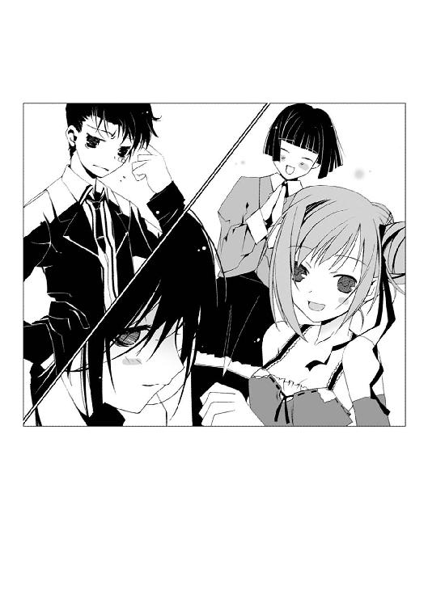
黒いスーツの上下にネクタイをしめた彼の姿は、普段とはまるで別人だ。整髪料でセットした髪に加え、ややひきつった顔も引き締まって見える。
「きゃー！ カッコいい、薬屋くん！ ぜったいぜったい、相手の女の子も一目惚れね！」
「素敵です、大助さん」
「あ、ありがとう」
苦笑する大助は、しかし何かを必死に堪えるかのように低い声だ。
支払いをカードで済ませようとした亜梨子を、「自分で払うよ」と大助が止める。だが値札を見せると、彼はたちまち黙り込んだ。「く、車が買えるぞ......」という呟きが聞こえた。
「いい、薬屋くん？ エミリア女学院のお嬢なんて誰も世間知らずなんだから。ちょっと甘い言葉囁いてやれば、コロッと騙せるわよ。決めセリフを考えてあげましょうか？」
「騙すってそんな、西園寺さん......」
「ハンカチは持ちました？ 相手に失礼のないよう、最初はきちんとご挨拶してくださいね。ほらほら、ネクタイが曲がってますよ？」
「じ、自分でやるよ、九条さん」
店を出る間際まで、恵那と多賀子は大助を放そうとしなかった。やっとの思いで彼を引きはがし、会場へ向かう。「グッドラック！」と笑顔で見送る恵那は最後まで噴き出しそうで、多賀子はオロオロと心配げだった。
級友曰く『親睦を深める会』の会場は、地下街にあるレストランらしい。歩いて数分で行ける距離だ。
地下街のメインストリートを、亜梨子と大助は並んで歩いていく。
「カンベンしてくれ......なんでオレが、こんなくだらないマネしなきゃいけないんだ」
ため息まじりに呟き、大助が髪を無造作に手でかき乱す。犬のように頭を左右にふると、もういつもの髪型に戻ってしまっていた。
「あ、コラ。せっかくセットしたのに」
亜梨子が肘で大助の背中をこづく。
すると、服の下から硬い感触が伝わった。
「......こんな時まで、そんなものを持ってきているの？」
感触の正体を悟った亜梨子は、大助を睨む。
亜梨子の肩に、どこからともなく一匹の蝶々が舞い降りた。
銀色の翅を拡げた、モルフォチョウだ。
「当たり前だろ。お前の......いや、花城摩理の〝虫〟がいつ何をしでかすか分からないんだ」
大助の鋭い視線を向けられ、モルフォチョウが亜梨子から飛び立つ。
花城摩理の〝虫〟──。
銀色のモルフォチョウが亜梨子のそばを舞うようになって、一年が経つ。それはちょうど、亜梨子の親友だった摩理がこの世を去って経過した時間と同じである。
そっぽを向いて前を歩く大助。その表情は、亜梨子からは見えない。
薬屋大助も、摩理と同じ虫憑きだ。
彼は同じ家に住む亜梨子に対し、必要以上に接しようとはしない。そんな彼が何を考えているのか、亜梨子には分からない。
──虫憑きの気持ちなんて、いつまでも分からないのかな......ねえ、摩理？
心の中で、亡き親友に語りかける。
亜梨子の肩にとまったモルフォチョウが、不思議そうに頭部を傾けた。
３
亜梨子と大助は、一軒のレストランの前で立ち止まった。
「ここみたいね。さっさと中に入りましょう」
亜梨子は入り口に足を踏み入れる。だが大助は、呆然と立ちつくしている。
「どうしたの？ 早くしなさい」
「......合コンって、せいぜいカラオケか何かだと思ってたんだけど......」
御林が指定してきたのは、いわゆる高級レストランだった。創作フランス料理を主とした店のようだ。店先に置かれた木製の看板には『正装以外のお客様の入店は、場合によってお断りさせていただきます』とある。
「バカね。正装で来いって言われたじゃない。だいたい予想はつくでしょう？」
「どっちかっていうと、こんな店に中学生が入ることのほうが予想できないぞ......」
店内に入ると、すぐにタキシード姿の店員が近づいてきた。亜梨子が御林の名を言うと、店の奥へと通される。
中の様相は、壮麗だった。
入り口は、通りに面した一カ所しかないようだ。煉瓦造りの壁に、ほのかに灯る照明が並んでいる。各テーブルにはガラスの笠をかぶったキャンドルが置かれ、きめ細やかな模様のクロスが敷かれている。各所に置かれた観葉植物が、クラシックのＢＧＭとよく合っていた。当然、他の客は大人ばかりである。
「お、おい、本当にこの店なのか？ ガキがくるような場所じゃないぞ」
「オロオロしない。まったく、ヘンなところで気が小さいわね」
店員に誘導されたのは、最も奥に位置する大きなテーブルだった。すでに身なりを整えた少年少女が四人、テーブルについていた。
「こんばんは、一之黒さん、薬屋くん」
席を立って出迎えたのは、御林だ。
「ここは僕のパパがマネージメントしてるレストランなんだ。いい店でしょう？ ちょうどこの上の地上にある、建築中のブティックと合わせてもっと宣伝していく予定なんだ」
亜梨子と大助を席に座らせるなり、御林が言う。エミリア女学院の女子生徒たちが「すごーい」「ステキよね」ともてはやす。
ちらりと大助の様子を見ると、彼は一瞬、頰をひきつらせた。
「そうなんだ。わりと良い店だと思うよ」
「......どうしたの、大助。いきなり強気じゃない」
「なんだか知らないけど、ムカついた。ビビるだけ、損だ」
「その意気よ」
小声で囁きあう亜梨子と大助。
「もうちょっと待ってくれるかな。今ちょっと女の子が一人、席を外してるんだ」
御林の言葉を聞きながら、ふと亜梨子はテーブルに巻きついているものに気づく。
「......蔦？」
それは、木の蔦のようだった。節くれだった蔦がテーブルの脚を這い上がり、食卓にまで伸びている。インテリアの一つかと思って蔦に触れ、亜梨子はすぐに手を離す。
「どうした？」
大助が、亜梨子を見る。亜梨子は「う、ううん。なんでもないわ」と首を振る。
温かい──。
蔦は、わずかな温かみを持っていた。まるで生き物のようだ。気味が悪くなり、亜梨子は蔦から目をそらす。
「あ、来たみたいだね」
御林の声に、顔を上げる。
こちらへ歩いてくる少女の姿が見えた。
「ご、ごめんなさい。もうみんな、揃っちゃってたんだ」
小柄な体に、ショートカットの髪がよく似合っている。透明感のある青のワンピースと合わせたのだろう、右目の上、前髪の一部を青いリボンでまとめている。
「......」
見ると、大助が見開いた目で少女を凝視していた。
──今日のターゲットは決まったわね。
ニヤリと亜梨子は笑う。大助が目を奪われるのも、ムリはない。三人の女の子の中では、最も印象的な少女である。
「姉妹校であるホルス聖城学園とエミリア女学院、両校のさらなる交流を願って！ 乾杯！」
御林の音頭のあとに、オレンジジュースを注いだグラスを合わせる音が響く。
リボンの少女は、羽瀬川祈梨と名乗った。
あとからやってきた亜梨子と大助、祈梨はテーブルの端で向かい合う形となった。
「あ、あの......」
「えーと......」
祈梨と大助が、同時に口を開く。そしてそのまま、気まずそうに黙り込んでしまう。
「なにカタくなってんのよ、大助。いつもは恵那や多賀子を相手にはしゃいでるのに」
「なっ！ バカ、誰がはしゃいでたんだよ！ あれは西園寺さんたちが......！」
「はいはい、みっともないからわめかない」
亜梨子と大助のやりとりを見て、祈梨がクスリと笑う。
「二人とも、おもしろいね。とても仲が良さそう」
「ああ、私のことは気にしないでね。コイツの保護者みたいなものだから」
「だれが保護者だって......？」
「ほら、大助。私より羽瀬川さんと話しなさい。放っておいたら、失礼でしょう」
言われ、大助が納得のいかない顔で祈梨に向き直る。
「えーと、羽瀬川さん」
「はい」
やや緊張した面持ちで、大助と祈梨が見つめ合う。そのまま自己紹介から始まるかと思いきや、大助は心配そうな表情を浮かべた。
「少し、顔色が悪いよ。さっき歩いてきたときも、なんだかふらついてた感じだし。どこか気分でも悪いんじゃない？」
祈梨が驚いた顔をする。
そう言われると、祈梨の頰は血の気が引いているように見えた。祈梨自身が隠しているのだろうか、一見しただけでは気づかない。
「具合が良くないなら、ムリをしないで帰ったほうがいいよ」
気遣う大助に対し、祈梨が微笑する。
こっそりと亜梨子は呟く。
「ナルホド。そうやって家まで送ってお近づきになるつもりね。......手が早いにも程があるわよ、大助。物事には順序ってものが──」
「うるさい、黙れ」
やはり小声で、大助。
「ううん、大丈夫」
祈梨が首を振る。
「私......色んな場所へ行って、色んな人と出会いたいの。場所や出会いは私の思い出になるし、それに場所や人が私のことをおぼえてくれたら、嬉しいでしょ？」
ニコリと微笑む少女。
「あ......でも、ヘンだよね。いきなりこんなこと言うなんて......友達にもよく、ちょっと不思議なところがあるって言われるし......そ、その、ごめんなさい」
顔を赤くしてうつむく祈梨に対し、大助の表情が緩んだ。亜梨子がはじめて見るような、優しい笑みだった。
「そんなこと、ないよ」
「え？」
「かなうといいね、その夢」
大助に微笑みかけられ、祈梨の頰が赤くなっていく。
「あ、ありがとう。優しいんだね、薬屋くん」
祈梨もまた、笑みを浮かべる。
今度は大助が顔を赤くする番だ──そう思ってとなりを見ると、なぜか大助は一瞬、唇を嚙んだ。辛そうな表情がよぎったのもつかの間、すぐに社交的な笑みを浮かべる。
──一時間後。
「何度も言うけど、お前は自覚ってものがないんだよ。自分が置かれてる状況が分かってないどころか、余計なトラブルに首を突っ込んでばかりで......」
「アンタこそ、私のドレイっていう自覚がないじゃない。昨夜なんて、私より先にお風呂に入ったわよね。居候の分際で一番風呂なんて、あり得ないわ」
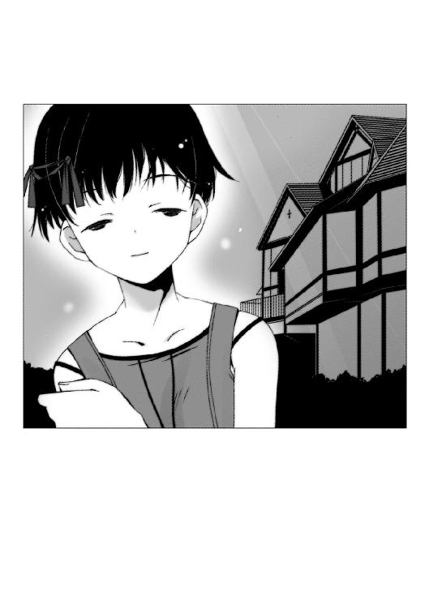
「それで思い出した。お前、わざわざ風呂場に『入浴中。大助禁止』っていう張り紙はってたよな。言っとくけど、お前の風呂をのぞくヤツなんて猿くらいしかいないぞ」
「のぞき魔はみんな、そう言うのよ。そもそも張り紙を見たってことは、私が入ってる間に風呂場に来たって証拠──って、バカ大助。私とばかり話しててどーすんのよ」
ぺちん、と亜梨子は大助の頭を叩く。
気がつくと亜梨子と大助は、会話の輪から隔離されていた。
羽瀬川祈梨に好印象を抱いたのは、他の少年二人も同じだったようだ。特に御林が積極的に質問を浴びせかけ、祈梨も対応につきっきりになっている。結局、大助が祈梨とちゃんと話したのは、最初の少ない会話だけだった。
大助が祈梨を見ると、彼女もまた彼を見た。祈梨は大助と話したそうにするが、すぐに御林に声をかけられてしまう。
「へえ、羽瀬川さんの家は代々医者の家系なんだ。それじゃあ、羽瀬川さんも？」
「う、ううん」
大助から視線をそらし、祈梨が首を横に振る。
「私......やりたいことがあるから」
「やりたいこと？」
「色んな場所へ行って、色んな人に出会うこと......だから将来は──」
祈梨が急に、言葉を切った。ふっと祈梨から表情が消えたように見える。
いぶかしむ周囲の視線の中、祈梨がハッとした顔をする。
「ご、ごめん......ええと、将来の話だよね。私、海外に行きたいの。外交官とか......」
微笑む祈梨の表情は、しかし儚かった。小さくついた息に、疲労感が垣間見える。
「医者じゃダメなの？」
「となり町に、異国館があるよね？」
祈梨の顔に、わずかに生気が戻る。楽しげな微笑を浮かべる祈梨は、同性の亜梨子から見ても可愛らしく映った。
「小さい頃、両親とあそこへ行って、色んなものを見たの。写真やお花や、それに働いてる色んな人たち......それがすごく印象的で、感動して──いつか自分の目で、見てみたいと思うようになったの。私はあそこで夢をもらったから......だから、いつかまた」
「ああ、氷鉋市の異国館かぁ。ぼくも小さい頃に行ったなあ」
御林がつられたように笑う。
「あそこがなくなっちゃうなんて、本当に残念だよ」
祈梨が、目を見開いた。
「......え......？」
異国館には、亜梨子も行ったことがある。だが取り壊されるという話は、初耳である。
「そっか、まだ知らない人のほうが多いよね。経営不振が続いたせいで、スポンサーが見限ったんだ。パパの会社も関わってたから、知ってるんだ。敷地の一部はもう取り壊し工事がはじまってるのかな。何年かあとには、ショッピングモールになるらしいね」
「......」
無言になった祈梨の瞳が、揺れた。
亜梨子は大助を見て、彼の肩をつつく。
「アンタもあっちの会話に参加しなさいよ」
「......関係ないね。最初から、こんな会には興味ないって言っただろ」
大助が顔をそむける。
「また、そうやって自分の殻に閉じこもる」
「なんだよ、殻って」
「ちょっとくらい、素直になりなさいよ。羽瀬川さんのこと気になるんでしょう？」
「ならないね。ぜんぜん」
亜梨子を睨む大助の視線は、冷ややかだ。
「知ってる人間に似てたから......ちょっと驚いただけだ」
「誰よ、知ってる人間って」
「お前には関係ないだろ」
そっけなく突き放され、亜梨子は唇をとがらせる。
「まあ、どうせこんなことだろうと思ったわよ。アンタが一人でさびしくないよう、私が相手してやるから安心なさい」
ニヤリと笑う亜梨子に対し大助は、「......ふん」とすねた顔をそむける。その幼い仕草に、亜梨子はまた笑いがこみ上げる。
オレンジジュースのお代わりを注文すべく、グラスに手をかける。
「......！」
ぎょっとして、手を引く。
亜梨子のグラスが、動かなくなっていた。底の部分に、木の蔦が絡みついているのだ。
よく見ると、蔦の部分に赤い膨らみがあった。花のつぼみにも見えるが、折り重なった花びらがギチギチと蠢いている。
「な、なんなの、これは......？」
亜梨子が思わず声を漏らした時だった。
「羽瀬川さん？」
御林の声に、亜梨子と大助は祈梨を見る。
祈梨の手元で、グラスが倒れていた。虚ろな目をした祈梨がうつむいている。
「なんだ、これは......！」
「きゃああ！」
店内で、悲鳴が上がった。
目に映った光景に、亜梨子は絶句する。
幾重もの蔦が床を這い、店内を占領しつつあった。テーブルから客の体や壁をつたい、天井のシャンデリアまで伸びている。
蔦についた花のつぼみが、いっせいに開いた。ピンク色の粉が、つぼみから噴き出す。
「亜梨子......！」
大助の反応は速かった。亜梨子を抱き上げ、テーブルの上を跳んで蔦から離れる。
粉を吸い込んだ人々が、次々と倒れていく。
花と思い込んでいたそれは、花ではなかった。口を開いた花びらの奥に、蠢く牙が見えた。何かの生き物の口器のようだ。
これは──。
亜梨子は目を見開く。
「まさか......〝虫〟なの？」
大助が蔦の少ない場所に移動し、亜梨子を降ろす。
「ちっ。こんなところで、どこのどいつが......」
それまでとは別人のような低い声で吐き捨て、大助がスーツの下に手を伸ばす。隠していたホルダーから二つの黒い塊を抜き放つ。
慣れた動作で顔に装着したのは、大きなゴーグルだった。鼻から上を覆い隠すそれのレンズ部分では、光が点滅している。また右手に構えたのは、大型の自動拳銃である。
「店の外に影響が出る前に、さっさと片づける。お前は下がってろ」
言い放つ少年は、特別環境保全事務局のエージェントとしての薬屋大助に変貌していた。ゴーグルで隠すまでもなく表情が消え、感情を感じさせない声は冷徹だ。
花に擬態した口器から出す粉は、催眠効果を持っているようだ。御林をはじめ、亜梨子と大助を除く客が次々と意識を失っていく。
「これだけ躰が大きい〝虫〟だと、中枢を叩くしかないか......それとも宿主をさがしたほうが──」
言いかけた少年の声が、途中でかき消える。
亜梨子の眼前で、蔦が爆発するように質量を膨張させたのだ。
シャンデリアが、亜梨子の背丈の倍はありそうな観葉植物が、あっという間に蔦に押し潰される。豪華な額におさまった絵画を貫通した蔦が、煉瓦をかたどったアスファルトの壁に見る間にめり込んでいく。
「な......！」
亜梨子と大助の声が重なる。
爆発的な蔦の生長は、幹に咲いた花までも巨大化させていた。つぼみが弾けるように次々と咲き乱れ、胞子のような粉を散布する。
破壊されていく店内で、ノイズが混じったクラシックのＢＧＭが最高潮を迎えていく。
ひび割れた音楽に乗り、亜梨子の肩に銀色のモルフォチョウが舞い降りた。
「摩理......？」
モルフォチョウがそばにあった背の高いスタンドライトに飛び移る。躰を変形させ、銀色の触手をのばしライトと一体化する。
輝く槍と化したモルフォチョウが、銀色の鱗粉をまき散らす。亜梨子たちに迫っていた粉が、鱗粉によって遠ざけられる。
「何が起こってるの......！ ただの〝虫〟じゃないの？」
槍を手に、亜梨子は大助を振り返る。少年は目の前の光景を凝視し、唇を嚙んでいた。
「〝虫〟の動きが制御されてない......成虫化だ！」
成虫化──。
亜梨子は、大助から以前聞いたその言葉を思い出す。
虫憑きは、みずからの夢を代償に〝虫〟の力を扱うことができる。〝虫〟を殺された者は、その夢もまた消え去り、感情も理性も失った〝欠落者〟になる。また夢を喰われ続けた虫憑きは、やがて精神が燃え尽き死に至る。
宿主の夢を喰い尽くした〝虫〟は、束縛から解き放たれ独立して成長する場合がある。
それが、成虫化だ。
成虫化した〝虫〟は、それまでとは比べものにならないほど強力になるという。
「これが......成虫化？」
「〝虫〟が宿主から離れようとしてるんだ。巨大化と暴走は、もう止まらないぞ」
亜梨子の足元から、震動が響いた。壁や天井にめり込んだ蔦が、地下街の基盤をも貫いたのかもしれない。
「ちょっと待って......それじゃあ、この〝虫〟の宿主は！」
ハッとする亜梨子。大助が舌打ちする。
「かなり弱ってるはずだ。このままじゃ宿主が夢を食い尽くされて死ぬだけじゃない......地下街ごと心中だ。そうなる前に、〝虫〟の中枢を見つけて殺すしかない」
「〝虫〟を殺す......そんなことをしたら、その人は欠落者になっちゃうじゃない！」
「......」
亜梨子の言葉を、大助は黙殺する。機械的に店内を見回すゴーグルに浮かんだ光点が、照明を失い薄暗くなった店内に尾を引く。
「お前は、動くな。花城摩理の〝虫〟の力をこんなところで使ったら、客までいっしょに吹き飛ばしてしまうぞ」
亜梨子は、唇を嚙む。彼女が手にしている槍の威力は絶対無比だ。彼の言うとおり、密閉された空間で扱うには強力すぎる。
「完全に成虫化したら、オレでも手がつけられない。そうなったらもう、手遅れだ。......ちっ、この近くに他の局員はいないか。応援は間に合いそうにないな」
片手でゴーグルに触れ、大助が言う。通信機能でも備わっているのだろう。
「手遅れだなんて......」
振り返り、亜梨子は目を見開いた。
──色んな場所へ行って、色んな人と出会うのが好きなの。
控えめな、しかし可愛らしい笑顔が思い浮かんだ。
「そんな......」
顔を歪める亜梨子。彼女の様子を見て、大助が視線を追う。
「......！」
大助が言葉を失ったのが分かった。
先ほどまで亜梨子たちがいたテーブルに、巨大な花が生まれようとしていた。薄いピンク色の花弁はかすかに胎動し、今にも大きく開こうとしている。
大きな花に見守られるように、全身を蔦に絡まれた少女が宙に浮かんでいた。
少女──羽瀬川祈梨が、うつろな瞳で亜梨子たちを見下ろしていた。
４
手足を蔦に縛られた祈梨の頭上で、大きな花のつぼみがゆっくりと開いていく。
「羽瀬川......さん......？」
呆然と大助が呟く。
地下街を──否、赤牧市を震わせるような、恐ろしい咆哮が突き抜けた。
ピンクから深紅へと色を深めた花が、開いていた。
花弁に守られていたのは雄しべでも雌しべでもない。何百という数の鋭い牙だった。
食人花──。
亜梨子の脳裏に、そんな言葉がよぎる。
幼い頃に訪れた昆虫展覧会で見た、花に擬態してエサをよびよせるハナグモという昆虫を思い出す。だが今、亜梨子の眼前にいるのは、まぎれもなく人間を捕食しようとしている異形の怪物だ。
「......！」
破壊の音もクラシックもかき消され、吹き飛ばされそうな波動が亜梨子たちを貫く。
咆哮の余韻が消えたあとに残ったのは、静寂だった。
圧倒されて身動きがとれない亜梨子らの前で、祈梨が小さく唇を動かした。
「......だったの......」
すでに意識を失いかけているのか、祈梨の手足はピクリとも動かない。薄く開いた瞳から、光が消えつつあった。
「......〝虫〟に夢を食べられて......怖くて......苦しくて......でも、我慢してきた......」
祈梨の眼が、動いた。少女が見たのは、大助だった。
「色んな場所へ行って......大人になって......それからまた異国館に行くの......帰ってきたよって......夢をくれてありがとうって......」
少女が、微笑んだ。かき消えそうな、悲しみだけしか残されていない笑みだった。
「でも......もう......私の夢も......なくなっちゃうみたい......」
再び、蔦が膨張をはじめた。意識を失った人々が、見る間に蔦に埋もれていく。
「羽瀬川さん......！」
亜梨子は思わず叫ぶ。
祈梨から表情が消え、まぶたを閉じようとしていた。
彼女が完全に目を閉じた時に、どうなるのか──想像して、亜梨子は恐怖をおぼえる。
〝虫〟に夢を喰いつくされた時、虫憑きは死に至る──。
「......！」
そんなこと、許さない......！
亜梨子は槍を握る手に、力を込める。
摩理──。
一年前に亜梨子の前から去った親友の顔が思い浮かぶ。
〝虫〟とは何なのか、分からない。虫憑きのことなんて、ちっとも理解できていない。
だが羽瀬川祈梨の命を奪うのだけは、誰にも許さない。
たとえ〝虫〟を殺すことによって欠落者になろうとも、みすみす彼女の命が尽きようとしているのを見ているわけにはいかない。
もう誰も、〝虫〟になんて殺させない......！
何も知らず、何もできなかった摩理の二の舞にはさせない。その気持ちが、今にも亜梨子を花に向かって飛び出させようとしていた。
だが──。
「くっ......！」
槍を振りかぶろうとして、思いとどまる。今ここで自分が力を使えば、他の客まで巻き込んでしまう。
「大助！」
となりの少年を振り向く。
大助は、虫憑きの捕獲を専門とするエージェントだ。これまでにも虫憑きを容赦なく欠落者にしようとする場面があった。
今もまた、冷徹に拳銃を構えているものと思って疑わなかった。
「......大助？」
しかし亜梨子の予想に反し、大助は呆然と祈梨の姿を見たまま動こうとしなかった。拳銃を握る手が、かすかに震えている。
「何をしてるの、大助......！ しっかりしなさい！」
亜梨子の叱咤も、大助の耳には届いていないようだ。祈梨を凝視する少年の額に、大粒の汗が浮かんでいた。
「なんで......また、笑うんだ......！ オレの目の前で......！」
奥歯を嚙み、叫ぶ。
「諦めるなよ！ そんなに大事にしてた夢なら、こんなところでなくすなよっ！」
声も高らかに、大助が絶叫していた。
かつてないほどに感情を剝き出しにしている少年を目の当たりにし、呆然とする。
「大助......？」
「似てるんだよ、〝ふゆほたる〟に！」
振り返った大助は、ゴーグル越しでも分かるほど顔を歪めていた。
「この手で欠落者にした......オレと同じ夢を持つヤツに......！」
祈梨のまぶたが、閉じていく。巨大な花の咆哮が、地下街を揺さぶる。
「......！」
力尽きようとする祈梨。
狂ったように咲き乱れる〝虫〟。
躊躇い、苦しげに顔を歪める大助。
苦痛にもがく虫憑きの姿が、亜梨子の瞳に映る。
──これを、僕に？──。
亜梨子の目の前が、真っ白に染まった。
「！」
動揺する間もなく、亜梨子の意識が混濁する。
──ええ。私から〝先生〟に、プレゼント──。
亜梨子は──否、摩理は、白い病室にいた。
摩理が横たわるベッドの横に立っているのは、一人の青年だった。
青年が手にしているのは、銀色のネックレスだった。鎖の先に、金色に輝くリングがぶら下がっている。
そう、摩理が彼にプレゼントしたのだ。
自分の想いを込めて。
消えようとしている夢を込めて。
──私が生きていた、もう一つの証拠......。
摩理が言うと、青年は辛そうな顔をした。
しかし、摩理は微笑した。
──もう一つは、亜梨子に......私の夢を知ったら、きっと亜梨子は私を恨むよね。
「......！」
亜梨子は、一瞬の微睡みから覚醒する。
──また、あの奇妙な光景が......？
思い出したのは、亜梨子自身の記憶ではない。病室のベッドに寝ていた自分は、亜梨子ではない。そばにいた青年も、彼女の知らない人物だった。
花に擬態した〝虫〟の咆哮が響く。
今にも目を閉じようとしている少女を見て、我に返る。
「こうなったら、私がやるわ......！」
嬉しそうに自分の夢を語る、祈梨の笑顔を思い出す。
祈梨は生きようとしている。
生きて、夢を叶えようとしている。
その願いを、目の前で失わせるわけにはいかない。たとえ欠落者として感情を失おうとも、命を失うという形で夢を閉ざされた摩理と同じにはさせない。
どれだけ力を抑えられるか分からない。だが、やらなければならない。
亜梨子が祈梨に向き直った直後だった。
「きゃあっ！」
「うあっ！」
少女の頭上に咲いた花から、無数の蔦が飛び出した。立ちつくしていた亜梨子と大助にからみつき、勢いのまま壁に叩きつける。
壁から這い上がった蔦が、二人を束縛する。
「あ......！」
壁にぶつかった衝撃で、亜梨子は槍から手を離してしまった。何十、何百という本数の蔦が、亜梨子たちを埋め尽くそうとする。
祈梨が、目を閉じていく──。
「......薬屋大助っ！」
亜梨子は、叫んだ。
蔦によって塞がれつつある視界に、亜梨子と同様に体の自由を奪われた少年の姿が映る。
「いつもの、バカみたいに冷静なアンタはどこにいったのよ！ 今なにをするべきか、アンタが一番知ってるんじゃないの？」
「......っ！」
「昔なにがあったか知らないけど、いつまでも悩んでるんじゃないわ！ アンタが自分でしたことなら、最後まで責任を持ちなさい！」
「お前なんかに......虫憑きでもないお前に、何が分かる！」
堪えきれなくなったように、大助が叫んだ。
「自分の夢のために、他の虫憑きの夢を奪っていくしかない......そんなオレが──」
「だったらどうして今、アンタは生きてるのよ！」
「！」
亜梨子が放った一言に、大助が絶句する。
「それでも夢を叶えたいからでしょう！ 生き続けたいからでしょう！ その〝ふゆほたる〟って子も自分と同じだと思ったから、欠落者にしたんでしょう！ だったら躊躇うな！ 生きてるアンタには、その義務があるの！」
亜梨子の首にまで、蔦がのぼってきた。温かい木の感触が、首を絞めつける。
「目を......覚ましなさい......！ バカ......大助......！」
視界が、完全に蔦によって埋め尽くされる。
何も見えなくなる直前。
壁に縛りつけられた大助のもとへ、一匹の緑色のかっこう虫が降り立つのが見えた。
「言われなくても分かってるさ......オレはどんなことをしてでも、生き続けてやる......」
何かが引きちぎられる音がした。
「そう、約束したんだ......〝ふゆほたる〟と......！」
亜梨子を束縛していた蔦が、いっせいに引きちぎられた。
「......！」
縛めを解かれ、亜梨子は床に落ちる。
顔を上げた亜梨子の眼前に、まっすぐに拳銃を構えた大助の姿があった。かっこう虫と同化した拳銃には長い触角がなびき、大助の首から口許にかけて緑色の模様が浮かんでいる。もう片方の手につかんでいるのは、力任せに引きちぎった大量の蔦だ。
巨大な花の咆哮が響いた。
蔦が大助に襲いかかる。
太い幹が少年の細い体を叩く鈍い音がひびいた。破られたスーツが宙を舞い、破壊されたゴーグルが後ろへ弾き飛ばされる。
だが大助は、ピタリと定めた銃口を動かさなかった。まっすぐに祈梨を見据える少年の顔には、緑色の模様が浮かんでいた。
大助が、引き金を引いた。
拳銃のものとは思えない、重い砲撃音が響き渡った。
祈梨の頭の上で、巨大な花弁が四散する。
少女の瞳が、フッと光を失った。
飛び散る花弁が、断末魔の叫びを上げた。店内を覆っていた蔦が消えていき、祈梨の体がゆっくりと傾いていく。
大助が、床を蹴った。あっという間に祈梨のもとへ駆け寄り、床に投げ出される寸前で小柄な少女を受け止める。
「羽瀬川さん......」
大助の呟きが聞こえた。
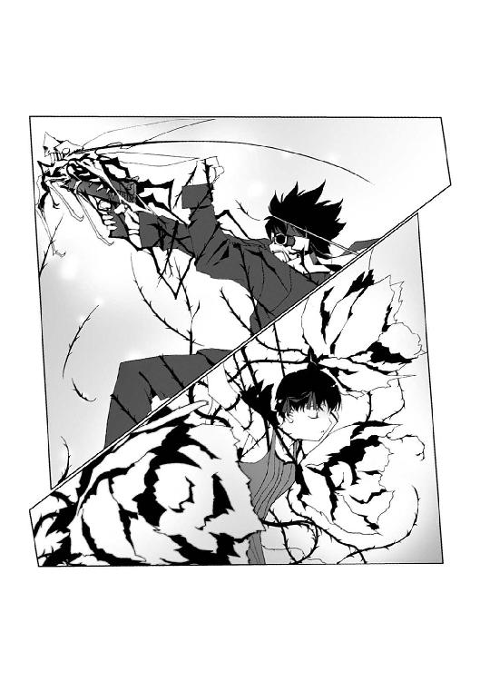
静寂が、破壊されたレストランを支配する。
倒れた客たちの中央で、少女を抱いた大助はじっと動かない。ゴーグルを失った彼の表情は、しかし背を向けているため窺えない。
彼に抱きしめられた祈梨の頭が、力なくガクンと傾いた。
少女の瞳からは完全に感情が消えていた。薄く開いたまぶたの奥で、濁った眼が大助を見つめていた。意志も感情も失った虫憑きのなれの果て、欠落者の姿がそこにあった。
欠落者となった祈梨は、特別環境保全事務局の隔離施設とやらに収容されるのだろう。
──大助......。
亜梨子は唇を嚙む。
彼は祈梨を〝ふゆほたる〟という少女と似ていると言った。
薬屋大助という少年に、コードネームしか知らないその少女は深く関わっていたのだろう。それも、亜梨子には想像できないくらい辛い意味で。
先日、〝ふゆほたる〟という少女のことを教室でからかってしまったことを思い出す。
「......」
ぐっ、と唇を嚙んだ時だった。
亜梨子はかすかな震動に気づく。
パラパラと天井から粉のようなものが降り注ぐ。頭上を見上げ、亜梨子は啞然とした。
ところ構わず侵食していた蔦が急に消えたせいだろう。空洞だらけになった天井に、大きな亀裂が生まれていた。
「大助！」
とっさに少年を見るが、彼は祈梨を抱いたまま動こうとしなかった。
亜梨子はそばに突き刺さっていた槍を握る。
大助だけではない。店内にいた利用客は皆、意識を失ったままだ。天井が崩れたら、死者の数は一人や二人ではすまないだろう。
「崩れる前に......やるしかない！」
亜梨子の手の中で、槍が銀色の輝きを放つ。
四枚の翅のうち三枚が一つとなり、鋭い穂先を創り出す。槍から放たれる銀色の鱗粉が、さらに勢いを増していく。
──槍の力が......強くなってる？
構えながら、亜梨子は腕に伝わる力の波動に動揺する。以前、播本潤の〝虫〟を倒した時よりも、観覧車で大助と対峙した時よりも、さらに槍から伝わる力が強さを増していた。
ひときわ大きな震動が、レストランを襲った。天井の亀裂が、さらに深まる。
シャンデリアがガクンと落ちるのを見た瞬間、亜梨子は考えるのを止めた。
渾身の力を込めて振り払った槍が、銀色の光で視界を埋め尽くした。
５
亜梨子の一日は、今朝もいつものように痛みと愚痴からはじまった。
ただし内容は、いつもと少し違っていた。
「むぅ、やっぱり気が進まないわ......」
道着姿で渡り廊下を歩きながら、唸る。
今朝の稽古は、まったく身が入らなかった。師範代に叱られたが、そんな怒声も亜梨子の耳には入っていなかった。冷たい空気と床の感触もまったく感じない。
「謝るべきか謝らざるべきか、それが問題よね......」
亜梨子の頰には、一枚のバンソウコウが貼ってある。稽古でついた傷ではない。昨夜、レストランの天井を槍でぶち抜いた際に、破片を浴びて傷ついたのだ。
槍の威力はすさまじく、崩れかけた天井を地上まで完全に吹き飛ばした。御林が言っていた、地上部分にあった建築中のブティックも跡形もなくなった。休日で現場に人がいなかったため、被害は最小限にとどまっている。
一連の騒動は、レストランのガス漏れによる爆発事故という形で収拾がつきそうだ。利用客の昏睡状態──〝一酸化炭素中毒による意識喪失〟もすぐ回復し、爆発の規模にもかかわらず軽傷者数名という被害にとどまった。
「いくら知らなかったとはいえ......でも、ご主人様がドレイに頭を下げるのも......」
縁側を歩く亜梨子が向かっているのは、大助の部屋だった。
ふと、足を止める。
一之黒家の本邸には、きれいに整備された庭園がある。小さな池のほとりに、人影が見えた。
大助だ。寝間着姿のまま、ぼんやりと池を眺めている。
彼がこれほど早起きしているのは、はじめてだ。横顔に疲れの色が見えるところからすると、一睡もしていないのかもしれない。
「大助のクセに、いっちょまえに悩んだりするのね......」
しばし迷うが、覚悟を決めて庭園に出る。
亜梨子の足音に気づいたのだろう。大助がチラリとこちらを見た。だが何も言わず、すぐに視線をそらす。
「なにしてんのよ、こんなところで」
「......」
「なんとか言いなさいよ、バカ大助」
亜梨子の軽口にも、彼はまったく動じない。
重い沈黙が、二人の間に落ちる。
「......悪かったわね」
ぽつり、と亜梨子は呟いた。
びっくりした顔で、大助が振り向く。
「〝ふゆほたる〟って子のこと、からかったりして」
目をそらして謝る亜梨子を、大助は信じられないものでも見るかのような目で凝視する。
「ごめん」
再度、今度は大助の目を見て言う。
「......」
彼はしばらく亜梨子を見つめていたが、すぐに気恥ずかしそうに視線をそらす。
少年の不器用な仕草に、亜梨子は微笑する。
そうよね──。
亜梨子の心に、わずかな温かみがひろがる。
少しずつ、理解していけばいいんだわ。虫憑きのことも、摩理のことも......大助のことも。
だが──。
「謝るくらいなら最初からくだらないことするなよ」
大助が、言い放った。
亜梨子の微笑が、瞬間冷凍する。
「洋服だ合コンだなんて、つまんないことでオレに関わるなよ。オレとお前は監視者と監視対象ってだけで、ただの他人なんだ。ガキの遊びにつきあってられないんだよ」
まくしたてられ、亜梨子は呆然とする。
「な......」
自分の顔が熱くなっていくのを感じる。
振り返った大助の顔は、呆れかえっていた。まるでバカを見るような目つきである。
「バカ亜梨子」
それが、トドメだった。亜梨子の頭に急激に血が上る。
「な、な、なんなの、その態度は！ いったいどういう人生を送ってくれば、そこまでヒネくれられるわけ？ 人が生まれてはじめて、素直に謝ってるのに！」
「う、生まれてはじめてなのか？ そっちこそ一体どんな人生を送ってきたんだ！」
「もういい、わかったわ。アンタには口で言っても分からないのね。こうなったら、体で分からせるのみ！ くらいなさい、亜梨子ドロップキック！」
「ちょっ、待っ......！ ここでそれはシャレにならな──」
少年の声は 早朝の静寂に響き渡った水飛沫の音にかき消された。
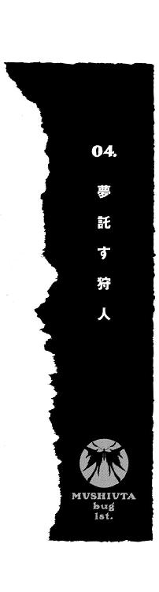
雲間から差し込んだ月明かりが、暗闇を切り裂いた。
地上から十数メートルの高さで、銀色の輝きが瞬く。満月の明かりを反射して輝くそれは、ゆっくりと地上に向かって降りていく。
風に舞う紙切れのように不規則な落下は、真新しいビルの屋上で止まった。
「......」
〝彼女〟は、自分の肩にとまった銀光の塊を振り向くことはない。息をひそめ、地上を動く様々な影を観察し続ける。
夜の赤牧市は、ネオンと雑音で満たされていた。遠方に見える光の集まりは市の中心街だ。しかし彼女の視線は、すぐ真下の雑居ビルの隙間に向けられていた。
〝彼ら〟は決して賑やかな場所には行かず、遠くからそれを眺めるだけだ。これまでの経験から、彼女はそのことを知っていた。
ふと視線を感じ、顔を動かす。
暗闇の中に、一対の瞳が浮かんでいた。そのまま闇を切り取ったような毛色をした黒猫だ。鉤になった長い尻尾は敵意に張りつめ、決してこちらに近づこうとしない。
ピクリ、と猫の耳が跳ねた。しなやかな動きで、闇の中へと姿を消す。
『......赤牧市警は、先日より発生している爆発事故に関して早急に捜査をすすめるとともに、市民からの情報を......なお一部報道にある目撃証言として、〝虫〟の姿を見たという情報に関してはコメントを控え......』
静寂に包まれていた屋上に、くぐもった声が響いた。空調機と貯水タンクの向こうから、こちらに近づいてくる。
『これに対し、同市警は、世間で騒がれているような存在に関しては全くの事実無根であるとして報道を全面否定し、また......』
懐中電灯の明かりだろう。円形の光点が暗闇をさまよい、やがてピタリと止まる。
「誰か、そこにいるのか？」
銀色の光に気づいたのか、緊張した声が響いた。貯水タンクの横から、警備服に無線機とラジオを吊した男が現れる。
懐中電灯の明かりが、彼女を照らした。
「......っ！」
男は、亡霊を見たと思ったに違いない。
漆黒のタイツとウェアを身につけ、短いホットパンツとブーツをはいている。その上にまとっているのは、白衣を自分で改造したベルト付きのコートだ。さらに目深にニット帽をかぶり、口許は長いマフラーで隠している。そんな現実離れした衣装に包んだ体を支えているのは、一本の松葉杖だ。
また、彼女の肩にとまった光の塊は、一匹の蝶々だった。
銀色に翅を輝かせるモルフォチョウ──姿形は昆虫のそれだが、満月が雲に隠れても輝きを失ってはいない。
「な......だ......誰だ......？」
警備員がかろうじて口をきく。
彼女は気にせず、眼下の町並みを見下ろした。その目つきが突然、鋭くなる。
見つけた──。
マフラーの奥で、彼女は笑みを浮かべる。
彼女の目は、薄暗い路地裏を縫うように走る影をとらえていた。影は一つではなかった。人の形をした影の背後には、その何倍もある大きな塊がついて走っている。
突然、彼女の視界が歪んだ。
「......！ くっ......」
膝から力が抜け、平衡感覚が失われる。
もう......時間が、ない──。
心中で呻く彼女の身体が、グラリと傾く。
「あっ！」
警備員の驚愕の声は、すぐに遠のいた。
ふらついた彼女の身体が、屋上から地上に向かって落下していた。一瞬だけ感じた浮遊感は落下感へと変わり、うるさい風の音が耳を打つ。
このまま地面にぶつかれば、楽になれる......？
スローモーションのように近づきつつある地上の景色を見ながら、そんなことを考える。
このまま夜に墜ちていくのも、いいかもしれない。
自分の命も。夢さえも。
誰にも知られず、きれいに跡形もなく消えられるだろう。彼女の存在をおぼえていてくれる人間など一人もいない。もともと彼女の周りには、誰もいない──。
ぎゅっ、と右手が杖を握りしめる音がした。
地上に落ちる彼女のそばで、銀光がはじけた。
モルフォチョウの躰が爆発するように変形し、彼女の全身に触手を巻きつけていく。触手は白衣の内側に滑り込み、彼女と同化する。帽子とマフラーの隙間から見える頰に、銀色の模様が浮かび上がった。
この同化の瞬間が、彼女は好きだった。消耗し、ボロボロになった身体が生き返り、別の力がみなぎっていく瞬間だ。
モルフォチョウの触手は、松葉杖をも侵食した。大きく変形した四枚の翅が刃となり、彼女の身長よりも大きな銀色の槍と化す。
「......っ！」
気配を感じ取ったのか、地上にいた人物が夜空を仰いだ。
歳は彼女と同じ、十代の前半くらいだろう。真夜中の路地裏には似つかわしくない、小綺麗な身なりをした少年だ。
ただし少年は一人ではなかった。彼の背後にいたのは、巨大な化け物──八本の太い脚を蠢かし、分厚い甲殻で躰を覆った異形の生き物だった。折り重なった長細い翅が、かろうじて昆虫のカミキリムシに似ている。少年に同調するように、怪物が触角のついた頭部を持ち上げる。
彼女は少年には目もくれず、怪物めがけて槍を振りかぶる。
「なん──」
少年の驚きの声は、爆音にかき消された。
落下の勢いそのままに、彼女が槍を振り下ろしたのだ。銀色の鱗粉が吹き荒れ、衝撃がアスファルトの地面を破壊する。震動が人気のない路地裏を突き抜け、周囲の雑居ビルの窓ガラスが次々と音を立てて割れていく。
「うっ......あぁっ......！」
爆発音が過ぎ去り、路地裏に響いたのは少年の苦鳴だった。
土煙の中から、彼女はゆっくりと姿を現す。歩み寄る彼女に対し、少年が恐怖の表情とともに後退る。
苦しげに胸をおさえる少年の横では、躰の半分を失った巨大なカミキリムシが体液をまき散らしていた。──〝虫〟に及んだダメージは、宿主の精神に影響する。そのことは誰よりも彼女自身が知っていた。
「なんだ......お前......？ オレと同じ、虫憑き......？」
何の前触れもなく攻撃され、少年はパニックに陥っているようだ。彼女が手にした銀色の槍を見て呻く。
「......」
彼女は答えず、無言で槍を構える。少年の顔が引きつる。
「やめ──」
下段から振り上げた槍から、銀色の鱗粉がはじけ飛んだ。衝撃の波が少年の横を通り過ぎ、身もだえる〝虫〟を包み込む。
「っ！」
少年がのけぞった。跡形もなく消し飛んだ〝虫〟を振り返ることもなく、地面に両膝をつく。少年の顔からは生気が消え失せ、ガラス玉のような瞳でじっと地面を凝視している。
死んでいるわけではない。しかし、生きているようにも見えない。そんな少年を見下ろし、彼女は唇を嚙む。
「コイツも、違う......」
爆発の余韻に混じり、サイレンの音が聞こえた。連日発生する『爆発事故』に、さすがに対応が早くなってきているようだった。
彼女の身体から、銀色の触手が分離する。白衣に松葉杖という元の姿に戻った彼女の肩に、蝶々の形態を取り戻したモルフォチョウが降り立つ。
「......はぁっ、はあっ......」
同化がとけた途端、脱力感が彼女を襲った。
息が上がり、ふらついた身体を杖で支える。自分自身の力では立つことすらままならない身体に、激しい苛立ちをおぼえる。
罪悪感は、ない。
むしろ少年を見下ろす自分の胸には、憎悪にも似た感情しかわかなかった。
「そんな状態でも......生き続けられるだけ、幸せでしょう」
白衣を翻し、彼女はその場をあとにした。
どこからか、猫の鳴き声が聞こえたような気がした。
１
〝虫〟──。
少年や少女にとり憑き、彼らの夢や希望を喰って成長する謎の存在。
外見が昆虫に似ていることから〝虫〟と呼ばれている。政府の発表では存在しないとされているが、十年ほど前から目撃談が続くうちに人々の間では恐怖心が強く根付いていた。
〝虫〟は人の夢を喰い、代わりに自らの力を宿主に与える。宿主は力を使うほどに〝虫〟に夢を奪われ、やがて喰い尽くされて死に至る。宿主を喰い尽くした〝虫〟は稀に成虫化し、おのれの意志のまま凶暴化するといわれる。また〝虫〟を殺された虫憑きは感情も意志もない〝欠落者〟となる──。
夢を喰いつくされての死、もしくは〝虫〟を失って欠落者になる。そんな結末におびえる虫憑きの存在は、立証すらされていない。だが、人々の間での目撃談は増加する一方で、虫憑きは明らかな差別視の渦中にあった。
「はぁ......はぁ......」
カラ......という軽い金属音が、暗闇の部屋に響いた。
赤牧市中央総合病院入院棟３Ｆ３００号室には、ベッドは一つしかない。他の通常の病室は四人から二人部屋になっていて、個室はここだけだ。高級ベッドと大画面のテレビは備えつけのもので、〝彼女〟が持ち込んだのは壁際の大きな本棚だけである。
窓から部屋に入り込んだところで、モルフォチョウとの同化を解く。生身の体ではたとえ健康体であっても、壁づたいに三階の部屋に忍び込むという芸当ができるはずもない。
カラン、と松葉杖が床に転がった。
電気も点けず、彼女は枕もとの棚に置かれたガラス瓶を手に取る。中にあった錠剤を、無造作に三粒ほど取り出して飲み下す。
「はぁ......」
動悸がおさまっていくのを感じる。
帽子、マフラー、そして身を包む衣装と乱暴に脱ぎ捨て、それらをクローゼットの奥に押し込む。かわりにベッドに投げ出してあった入院服を身に纏う。
洗面台に近づき、水差しとコップをつかむ。注いだ水を飲もうとして、手が止まる。
鏡に、自分の顔が映し出されていた。
わずかな月明かりに照らされた自分の顔は蒼白だった。いくら〝狩り〟のあとで疲れ果てているとはいえ、十三歳とは思えないほど目つきも鋭い。自分の姿を見て敵意を露にした猫や、怯えた警備員の顔を思い出す。
彼女は鏡から目をそらし、一気に水を飲み干す。
「今夜も違ったみたいだね、摩理」
コップを置いた鏡の中に、一人の青年が映し出されていた。摩理の背後、本棚の前に置かれた来客用の椅子に座っている。つい一瞬前まで、そこには誰もいなかったはずだ。
「......」
彼女──花城摩理は、しかし驚かなかった。
青年は長身で、医者のような白衣を着ていた。ぼさぼさに伸ばした髪の奥で、しずかな瞳が摩理を見つめている。
「まだ、続けるつもりかい？ 赤牧市は〝あの機関〟の本拠地だ。彼らが黙っちゃいないだろう」
摩理は青年を無視し、ベッドに潜り込む。
「それにエルビオレーネの〝虫〟は、数が多い......お願いだ、もうやめてくれ。もし目的の虫憑き──〝不死〟の虫憑きを見つけ出すことができたとして、それが君にとって何になるんだ？」
青年の口調は、怒りを押し殺していた。いや、悲しみなのかもしれない。どちらにしろ、他人にすぎない摩理に対し真剣に語っているのは確かだった。
「摩理......？」
青年のいぶかしげな声が聞こえた。摩理が声を殺して笑っていることに気づいたのだ。
なんにもならないでしょうね──。
彼の言うとおりだ。
夢の続きを見ることもできない、こんな私じゃ......。
まぶたを閉じる間際、青年の悲しげな目が見えた。
笑いながら、摩理は眠りに落ちていった。
──翌朝。
「また薬が減っているね」
よほど深い眠りについていたようだ。
目を覚ました摩理は、朝日のまぶしさに目を細めた。眠りに落ちると同時に朝になったかのような錯覚をおぼえる。
ベッドのそばに、摩理の主治医が立っていた。錠剤が入ったガラス瓶をもっている。
「たしかにこの薬は血管の収縮をおさえて楽になるが、あまり多用してはいけないと──」
摩理は目をこすり、来客用の椅子を見た。
当然、そこに昨夜見た青年の姿はない。
「......」
無言で窓へと視線を移す摩理を見て、中年の主治医が小さく嘆息した。彼の態度が、摩理に対する扱いづらさを示していた。
摩理がこの病院に入院して、一年以上が経っていた。先天性の小児性疾患を持つ摩理が、合併症の心筋梗塞を引き起こしたのが始まりだった。去年の秋から、摩理は病院の敷地を出たことは数度しかない。小学校の卒業式はおろか、編入試験に合格した名門高校、ホルス聖城学園の入学式にも出席していない。
摩理の実家、花城家は政財界に多くの弟子を持つ華道の総本家である。ＶＩＰルームとしか言い表しようのないこの病室に摩理がいるのも、その財力と体面からくるものである。当然、病院にも多額の寄付金があり、担当医からすれば間違っても彼女の機嫌を損ねるわけにはいかないのである。
また、扱いに困っている第一の理由は、摩理が自身の症状を理解していることだろう。
摩理の体は度重なる薬物の使用によって、器官そのものが弱っている。さらに動脈硬化は頻繁になっており、いつ心臓が停止するかも分からない──。
「なるべく薬の使用を控えて、体の免疫機能そのものを高めていくよう努力するんだ。そうすれば、すぐにでも退院できる。いっしょにがんばっていこう」
微笑を浮かべ、子供にさとすような口調で主治医が言う。多少ぎこちなさがあるが、摩理を気遣っているのは本当だろう。決して悪い医者ではない。
「......」
だが摩理は、無言で窓を見つめ続ける。
主治医はまた嘆息し、「午後にまた来るよ」と言い残し部屋を出て行った。
摩理の朝は、空虚からはじまる。
退屈は人を殺す──そう言ったのは、誰だったか。
摩理がベッドで過ごす日々の先には、何もない。あるのは薬の時間と問診、そして消灯だけだ。もともと通院のために休みがちだったために、小学校でも友達と呼べる同級生は作れなかった。中学校に入ってからは一日も登校していない。そのため、見舞いに来る友人は皆無だった。両親は人付き合いと門下生の稽古のため、年に数度しか顔を出さない。
一日後、一月後、一年後にやってくる日々を予想しても、今の状況と変わったことなど思い浮かぶはずがなかった。
だが、そんな静かで退屈で、空虚な日々が変わったのはいつだったか。
「......」
わずかに開いた窓から、朝日を反射する銀色の翅が舞い込んだ。
モルフォチョウだ。
摩理に取りついた〝虫〟──それをもたらしたのは他ならぬ、今、摩理のそばの椅子に腰掛けている白衣の青年だった。
「新しい本だよ、摩理」
いつからそこに居たのか、微笑を浮かべた青年が一冊の本を摩理に見せる。
青年の突然の現れ方にも、摩理はもう驚かなくなっていた。
「いま流行ってるドラマの原作だよ。たまには、こういうのもいいだろ？」
悪戯っぽい笑みを浮かべた青年を見て、摩理は不思議に思った。
──どうして彼は、そんなふうに笑えるんだろう？
摩理がこの青年と出会ったのは、つい数カ月前だった。──数カ月という月日を〝つい〟ですませてしまうほど、退屈なくせに流れるのが早い日々だった。
出会い、摩理は虫憑きになり、彼は〝虫〟について少なからず摩理に語った。
摩理は、自分を虫憑きにした彼を恨んではいない。彼が自分と同じくらい、苦しんでいることを知っているから。それも摩理と同様、〝終わり〟の到来を待つ運命にあることを。
「最近は、こういう話が多いね。少し悲しい恋愛ストーリーなんだ。でも楽しいことがいっぱい描かれていて......」
彼と出会ってから、摩理の日々が変わった。
何一つ目的のなかった摩理に、たった一つだけ待ち望むものができたからだ。
夜──。
摩理は、深夜を待ち望むようになった。
自由に走り、高く跳び、あふれる力を思う存分振るうことのできる夜。摩理はそれを手に入れることで、同時に一つの目的を手に入れていた。
「今日は、いいわ。......あの本をとって」
摩理は言い放ち、窓に向かって片手をかざす。彼女の白い腕にモルフォチョウがとまる。
「また、この本かい？」
苦笑し、青年が持ってきた本を本棚の端へ差し込む。かわりに引き抜いたのは、薄っぺらい本だった。
〝魔法の薬〟というタイトルの絵本である。青年に手渡されたそれを枕に添え、摩理はベッドに横になる。
「寝るわ」
夜に備え、できるだけ体力を温存する必要がある。たとえモルフォチョウとの同化によって肉体を強化できるとはいえ、それを扱うエネルギーは摩理自身によるものしかない。
「......研修は、どうしたの？」
ベッドに入り、しばらくしてから摩理は聞いた。気配はしなかったが、青年がまだ椅子に座っていることが分かった。
「一昨日、修了したよ。これでもわりと優秀なインターン生だったんだぜ？ 君と出会ったこの病院ともお別れだけど......これからも時間を見て、会いにくるよ」
「そう......」
相づちをうつ自分の声は、遠くから聞こえてくるかのようだった。あっという間にまぶたが重くなっていく。
夜とはうって変わって浅い眠りの中、摩理は現実と夢の狭間にたゆたう。
色のない過去の風景が、摩理の脳裏を流れては消えていく。
──白衣に身を包んだ不思議な青年との出会いは、夏の晴れた日だった。
冷房は体に毒という理由で全開にした窓から、セミの声が聞こえていた。そよ風に揺れるカーテンを眺めていた摩理のもとへ、彼はやってきた。
長身を包む白衣が、当時はまだ不似合いだった。頭はぼさぼさで、まだ学生の雰囲気が抜けきっていなかったと思う。
彼を連れてきた主治医の話では、彼は大学を卒業したばかりの研修医、つまりインターン生だという。代わり映えのない日々を送る摩理の、良き話し相手になるだろうとのことだった。しかし実際は、めずらしい摩理の症状を勉強させるためだということくらいは分かっていた。
──お名前を聞いてもいいかい？
彼の第一声は、あまりに摩理を子供扱いしたセリフだった。彼女の名前などカルテを見て知っているはずだし、何よりその言葉遣いが気に入らなかった。
──パトリシアよ。
摩理は不機嫌な声で、そう言ってやった。
退屈な日々に摩理をどうにか生かしていたのは、大量の本だった。パトリシアというのは外国の童話を翻訳した絵本、〝魔法の薬〟に登場するヒロインである。
絵本の内容は、こうだ。
病に伏せるパトリシアのもとへ、魔法使いが訪れる。
魔法使いが差し出したのは、二種類の薬。天使がくれた薬と、悪魔がくれた薬。
天使の薬を飲めば、大切な人を失う代わりに病が治り永く生き続けることができる。
悪魔の薬を飲めば病気が治ることはないが、大切な人が〝いつまでも〟そばにいて慰めてくれるという。
パトリシアは、死の間際まで迷い続ける。
天使の薬を選べば、人々からパトリシアに関する記憶が消えてしまう。そのかわり末永い天寿を全うでき、死の恐怖からは逃れられる。
しかし悪魔の薬を飲めば──。
結局、パトリシアは悪魔の薬を飲んだ。
彼女はこの世を去り、埋葬される。しかし大切だった人々がいつまでも、彼女の墓へ訪れてくれるという結末。
摩理はパトリシアの選択に、どうしても納得することができなかった。
もし摩理がパトリシアならば、迷わず天使の薬を飲む。病さえ治れば、忍び寄る死の運命に恐怖することもないだろう。
なぜパトリシアは、悪魔の薬を選んだのか？
答えが分からず、ゆえに摩理はいつもその絵本と向かい合っていた──。
──パトリシア......？
青年は、とまどったようだった。
当たり前だ。彼がそんな絵本のことを知っているとも思わなかったし、学生を卒業したばかりの若い青年に彼女の皮肉を受け止められるとも思っていなかった。
青年がチラリと本棚を見たのが分かった。
そこには摩理が引き合いに出した絵本が収まっていた。
──君は、パトリシアの気持ちが分かるのかい？
彼は苦笑し、言った。
意外な言葉に、摩理は答えられなかった。
摩理はいまだに、パトリシアが下した選択の真意を分からずにいる。
──それで、いいんだ。答えはゆっくりさがしていけばいい。君は彼女と違って、たくさんの時間があるんだから。
その日から、青年は時間を見つけては摩理の病室を訪れた。ハードな研修の中でろくに眠っていなかったのか、目に隈をつくってまでやってきたことがあった。
最初は彼なりに、医者としての使命感のようなものを感じたのかもしれない。若い研修医が、摩理に感情移入してしまうまで時間はかからなかった。
研修の話や、本の話。とりとめのない一方的な話をされるうちに、摩理も言葉は少なくとも彼と会話をするようになった。
病人を救うのが医者としての使命とはいえ、なぜ彼がここまで必死に摩理を気遣ってくれるのか分からなかった。
だが、やがて彼の秘密を聞いて納得した。
彼もまた、逃れようのない運命の糸に絡まられた人間だったのだ。
──摩理。君の夢は、なに？
問われた摩理は、迷わず答えた。その返答が引き起こすであろう事態も、彼から聞いて知っていた。
──私は......生きたい。
唇を嚙みしめ、消え入りそうな声で摩理は言った。彼に涙を見せたのはそれがはじめてだった。そして、彼が摩理の肩を抱きしめたのも、その時が最初で最後だった。
──生きてくれ。二人で、夢の続きを見よう......。
摩理は、虫憑きになった。
彼は摩理に、様々なことを話した。
〝虫〟について。〝始まりの三匹〟という存在について。そして、〝薬屋大助〟という虫憑きについて。
──彼は、強いよ。迷いながらも、進むべき道を知ってる。僕は実際に会ったことはないけど......ぜひ君には、彼と会ってほしい。
青年はそう言ったが、摩理はそんな人間にはまったく興味がなかった。決して出会うことなどないだろうとどこかで察していた。
それよりも摩理が興味を抱いたのは、エルビオレーネ──ある機関では〝大喰い〟と呼ばれる存在が生んだ虫憑きの話だった。
〝不死〟の能力を持つ虫憑き。
その虫憑きの存在は、〝大喰い〟の存在そのものにも大きく関与している。ゆえにいつかは倒されなければならない人物であるというが──。
「......」
窓の外に、暗闇が拡がっていた。
ベッドの横に備えつけられたライトが、〝魔法の薬〟の最後のページを照らしていた。
パタン、と絵本を閉じる。
壁の時計を見ると、深夜の一時をまわったところだった。
摩理はベッドを降り、クローゼットを開ける。奥に隠してあった白い衣装を引き出し、入院服から着替える。
ニット帽とマフラーで顔を隠し、夜闇を映す窓に近づく。
「もうよしてくれ、摩理」
背後から、青年の声がした。
それまで誰もいなかった部屋の隅に、見慣れた白衣の青年が立っていた。いつものように、扉が開いた音はしなかった。
「僕と約束しただろう。いっしょに夢の続きを──」
「自分の体のことくらい、分かるわ」
青年の言葉を、摩理はさえぎる。
「最期くらい、私のやりたいことをやらせて」
「最期なんかじゃない。君はまだ......」
青年の言葉を、摩理は無視した。窓を開けると、銀色の光が室内に舞い込んだ。
モルフォチョウが肩に止まり、躰を変形させる。触手が摩理の身体と同化し、右手に持った松葉杖が銀色の槍と化す。
摩理の全身に、力が漲っていく。だが同時に、心の奥底で何か大切なものが蝕まれていくのも感じた。
「それに、あなたが言ったんじゃない。あの虫憑き......私なら〝不死〟の虫憑きを倒せるかもしれないって。他に誰か、倒せる虫憑きがいるの？」
心にもないことを言う。摩理が〝不死〟の虫憑きをさがすのは、決してそれを倒すためなどではない。
青年が言葉を詰まらせる。
「でも、それを君がする必要なんてないんだ......！」
「私に力をくれたのは、あなた。だからあなたは最期まで見届ける責任があるわ」
言い放ち、摩理は迷わず三階の窓から飛び降りた。
「摩理！」
風を切る音、両足が勢いよく地面を踏む衝撃。〝虫〟との同化によって強化された摩理の両足が、着地の勢いもそのまま大地を蹴る。
静まりかえった病院の敷地を走り抜け、柵を跳び越える。
月明かりに照らされた赤牧市を、今夜も銀色の光の軌道が駆け抜けた。
２
摩理の朝は、今日も空虚ではじまった。
「少し寝たほうがいいね。顔色が良くない」
主治医はそう言って、棚のガラス瓶を見る。また錠剤の数が減っているのを見て嘆息するが、それ以上は何も言わなかった。
ドアを閉じる音が、個室に響く。
「......」
入院服のボタンをとめる摩理の髪が、窓から吹き込んだ風に揺れる。
昨夜の〝狩り〟もまた、失敗だった。
目的の虫憑きを見つけられず、別の虫憑きを欠落者にして終わった。
誰もいなくなり、静寂に包まれた病室に摩理の奥歯を嚙む音が響いた。
彼の言うことが本当なら、赤牧市にいるはずなのに......どうして見つからないの！
力を込めた指が、シーツに食い込む。
自問しながらも、答えは分かりきっていた。ただでさえ虫憑きの数が、住民の数に比べて圧倒的に少なすぎるのだ。その中でたった一人の特定の人間をさがそうとしても、そう簡単にいくはずもない。
摩理のモルフォチョウは、他の虫憑きを感知する能力のようなものを持っているようだ。そうでなければ虫憑きをさがすこと自体、不可能だっただろう。
当然といえば当然の現状だが、摩理は苛立ちを抑えきれない。うまくいくはずがないと分かってやってはいても、打開できない状況に悔しさがつのる。
摩理はベッドに潜り、頭から毛布をかぶる。苛立ちと焦燥感で、全身が震えていた。
「摩理」
声がした。
今さら驚くこともなくなった。ベッドの横の椅子に、白衣の青年が座っているのだろう。
「せめて今夜は、外出するのはやめたほうがいい。このままじゃ──」
「時間がないのよ！」
ベッドの中で、思わず大声で怒鳴る。青年が息をのむ気配が伝わった。
そう、自分には時間がない。
これまで空虚と退屈しかなかった、変わらぬ日々が変わりつつあった。摩理はそのことをはっきりと実感していた。
体がガクガクと震えていた。先ほどまでのように苛立ちからくる震えではない。隠しようのない恐怖と不安が、摩理をシーツにしがみつかせていた。
「体にちっとも力が入らなくなってるの！ 一昨日より昨日、昨日より今日のほうが......！ きっと明日はもっと！ どうなってるのよ、私の体は！ どうしてこんなにボロボロなの！ どうして、私だけ......！」
摩理の声は、最後はみずからの嗚咽にかき消されていた。
怖い。
死ぬのが、怖い。
このまま誰にも知られず、誰の記憶にも残らず、このまま跡形もなく消えてしまうのがどうしようもなく恐ろしかった。
それとも、私は最初からいなかったのと同じことなの──。
頭をよぎった考えに、ぞっと背筋が凍る。
そんなの、いや......私はここにいるわ。花城摩理は、ここにいる。
考えるほどに、絶望が足元から忍び寄る。
この......誰も来ない、誰も知らない小さな部屋に......いるのよ......。
もう、声は出なかった。怒りから恐怖へと変わった体の震えが、今度は切なさに変わっていた。光の届かない毛布の下で、摩理の口から嗚咽とすすり泣く声だけが漏れる。
パトリシアになりたい......私はまだ、死にたくない......。
もし摩理があの童話の主人公なら、天使の薬を飲む。
どうせ大切な人間などいない。大切に思ってくれる人間もいない。ならばせめて、この死に繫がる恐怖と不安だけでも消えてくれなければ、不公平ではないか？ 窓の外には、摩理のことなど知らずに楽しい人生を楽しんでいる人々がいるというのに──。
「......天使の薬をちょうだい......ねえ......」
かすれた声で哀願する摩理。
「......」
青年は、何も言わなかった。彼の性格だ、自らの無力に唇を嚙んでいるのは容易に想像できる。だが、それだけでは摩理にとって何の救いにもならない。
「ねえ......お願い......」
摩理のうめき声は、誰もいない病室に響く。
──泣いているうちに、摩理は眠りに落ちていたようだ。
ドアをノックする軽い音で、目を覚ます。
「......」
摩理は毛布をどけ、上半身を起こす。
主治医の問診だろう。黙っていれば入ってくるはずだ。自分の頰に涙の痕がないことと、外来用の椅子に白衣の青年がいないことを確認する。
泣けるだけ泣いたせいか、気持ちは平穏を取り戻していた。
否、空虚だけが胸を埋めていた。
──どうせ、なるようにしかならないわ。その程度のことよ。
目を細め、窓から見える景色を眺める。外を横切る鳥の姿も、色あせて見えた。
しばらく待っていると、またノックが聞こえた。
「......？」
摩理は眉をひそめる。いつもなら、摩理の声を待たず主治医が入ってくるはずである。
するとドアの外から、ぶつぶつと誰かが呟く声が聞こえた。
「寝てるのかしら......そうなるとわざわざ起こしちゃ悪いわね。なにごとも第一印象が大事っていうし......ってそんな、お見合いじゃないんだから......」
ますます摩理は眉根を寄せる。
なに......？ ドアの外にはなにがいるの？
「まさか、具合が悪くなって倒れてるとか......いやいや、まさか......でもでも、もしそうなら、こうしてる場合じゃないわ！」
慌てた声が聞こえたかと思うと、バンッ、と勢いよく病室の扉が開いた。
「......」
摩理は、啞然としてその珍客を見つめた。
「......」
ドアの取っ手をつかんだまま、珍客のほうも摩理の顔を凝視していた。
「............」
見つめ合った状態で、沈黙が両者の間に落ちる。
......だれ......？
摩理の頭が、疑問符でいっぱいになる。だが直後、それらは一瞬にして吹き飛んだ。
「......こんにちは！」
みずからの奇行を誤魔化そうとしたのか否か、少女が満面の笑みとともに言った。
摩理は一言も声を出せず、ただ一点の曇りもない笑顔に見入ってしまっていた。
それが摩理とその少女、一之黒亜梨子との出会いだった。
「あの......」
摩理は、その一言を発するのが精一杯だった。なにが起きているのか、まるで理解できなかった。
部屋を間違えてるんじゃ──。
そう言おうとした摩理をさしおいて、少女が問答無用で室内に入ってくる。細い花束を持ったまま、キョロキョロと部屋を見回したかと思うと、洗面台に向かってツカツカと歩いていく。
「もしかしたら倒れちゃったりしてるんじゃ、なんて思ったけど元気みたいで良かったわ。花の他にも差し入れを持ってこようと思ったけど、果物の詰め合わせみたいなのもありがちだと思って、やめたの。だから今日、リクエストを聞いていくわ。次に期待しておいてね。この花、生けておくわね。それにしても変わった花瓶ね」
「......」
呆然と動けずにいる摩理の目の前で、少女は思うがままにしゃべり、行動していた。
入院している時点で元気ではないとか、花を生けたのは花瓶ではなく水差しであるとか、そもそも華道をたたき込まれた摩理から見れば恐ろしいとしか言いようのない花の組み合わせだとか、そういった指摘を少女の存在そのものが見事にはねのけていた。
快活で軽快な動きに加え、幼さの残る顔立ちは健康的でまぶしいほどだ。後頭部でしばった長い髪はつややかで、紐をとればさぞ綺麗にほどけるだろう。摩理よりも小柄だが、着ているのはどこかの学校の制服のようだ。
「あの......？」
部屋の主人である摩理を無視し、自由に動き回る少女に苛立ちをおぼえた。眉をひそめ、口調を強くする。
すると少女は一仕事終えたとばかりに、ふぅと息をついた。勝手に来客用の椅子に座り、摩理と同じ目線で微笑する。
その屈託のない笑顔と、吸い込まれそうな大きな瞳に摩理の毒気が抜かれる。
「はじめまして、花城摩理さん」
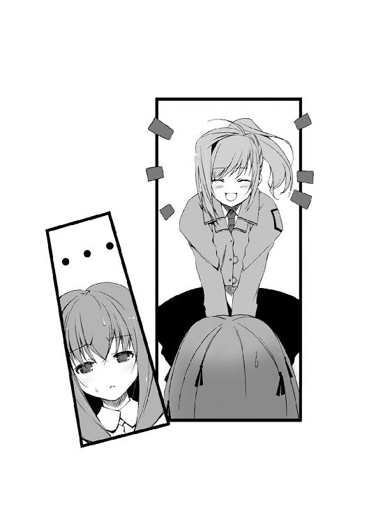
摩理は目を見開く。部屋を間違えたわけではなかったようだ。
「私は一之黒亜梨子。あなたのクラスメートで、出席番号は女子の中では一番よ」
その言葉で、摩理は思い出した。
亜梨子という少女が着ている制服、それはホルス聖城学園中等部の制服に他ならなかった。入学以来、摩理が一度も袖を通したことのないものだ。
急な自己紹介に、摩理はうろたえてしまう。
「一之黒......亜梨子？」
口の中で、少女の名前を復唱する。やはり摩理におぼえはない。摩理は中学校に入学してから一度も登校したことがない。
目にかかった髪をどけ、そのまま指で髪を梳かす。亜梨子の視線から逃げるように、目線が自分の膝の辺りをさまよう。
どうして......私のところに？ 一度も会ったことない、わよね......？
同年代の相手と向き合うなど、じつに久しぶりのことだった。それもこんなに面と向かって一対一で話すことなど、いつ以来だろうか。得体の知れない来訪者に対し、恐怖すらおぼえている自分に気づく。
「ごめんなさい。私、クラスメートの名前も顔も分からなくて......」
消え入りそうな声で言う摩理に対し、しかし亜梨子は嬉しそうに笑った。
「うん、そうよね。だから、はじめまして」
落ち着きなく動く摩理の手を、亜梨子が両手で握る。ビクリ、と摩理は肩を震わせる。
「......」
摩理は、おそるおそる亜梨子の顔を見た。亜梨子はニコニコと微笑んだまま、彼女の顔をじっと見つめ返している。
勝てるわけがなかった。笑顔に屈服する形で、摩理は小声でポツリと呟く。
「......はじめまして」
亜梨子が表情を輝かせた。ほんの少し、ほっとした顔を見せたのが分かった。
彼女が言うには、亜梨子は入学した当時から一度も登校しない摩理を、ずっと気にしていたという。一学期が過ぎ、夏休みを終え、二学期になってからも姿を現そうとしない摩理は一体どんな少女なのだろうと想像していたそうだ。
「でも、どうして急にここへ......？」
摩理がたずねると、はじめて亜梨子は言葉を濁らせた。
「その......転入生が来たのよ」
「転入生？」
「それで、その子があなたの机を使うことになったのよね」
摩理は、目を見開いた。心の奥で、何かがヒビ割れる音が聞こえた気がした。
口許に笑みが浮かんだ。
私の存在なんて、誰も気づかない......誰の記憶にも、残らない。
目に浮かぶようだ。それまでぽっかりと無人だった空席が埋まり、自然さを取り戻した教室で談笑しあう生徒たち──それは紛れもなく、摩理という異質な空洞が消えたことによる平和な風景である。
私なんて最初から、どこにもいないのと同じ──。
シーツを握りしめる手が、震えていた。
「でも、安心して！ 私が先生にモーレツ抗議して、新しい机と椅子を用意させたから！」
亜梨子が、勢い込んで言った。
摩理は驚いて顔を上げる。
「え......？」
「だって、そんなのどう考えてもおかしいじゃない。いくら一時的なものとはいっても、ちゃんとそこにいるクラスメートの席を奪うなんて。ゼンゼン納得がいかないわ！」
「......」
激情に揺れていた摩理の心が、真っ白に染まっていた。
ちゃんとそこにいる──亜梨子は今、間違いなくそう言った。
言葉を失っている摩理に気づかない様子で、亜梨子は身振りをまじえて一方的にしゃべり出した。教師との口論の様子や、同意を示す周りの生徒たちの声。そしてこの機に見舞いに訪れることを思い立ったが、花を選ぶ時の苦悩から、ドアを開けるまでの亜梨子の心の葛藤。初対面の相手に失礼な態度をとらないよう、ずいぶん自分の中でリハーサルをしていたという。
摩理は「そう......」とか「うん」といった相づちをうっていた気もするが、始終、亜梨子の存在感に圧倒されていた。
一方的で奇妙な会話は、看護師に面会時間終了を告げられるまで続いた。
「また明日も、来ていい？」
椅子から立ち上がると、亜梨子が無邪気にそうたずねてきた。
「え......」
摩理は戸惑い、口ごもる。生まれてはじめての問いに、何と答えていいか分からない。
「負担に......なるといけないし、べつに来なくても......」
小さな声で、無意識にそう答える。心のどこかで苛立ちと、そして今まで感じたことのない不思議な感情が揺れ動いていた。
どうせ社交辞令に決まってるわ──。
せめぎあう感情を抑えようと、胸を手で押さえる。亜梨子が不思議そうな顔をした。
「なんで？ 私は問題ないわよ。それじゃあ、また明日ね」
言い残し、亜梨子は去っていった。
入れ替わりに主治医が訪れ、定時の問診を終えて「おやすみ」と去っていく。
消灯時間になり、部屋が暗闇に包まれる。
しかし摩理は、ベッドに潜る気にはなれなかった。
なんだったの、あの子は......？
亜梨子が去ってから、問診中でさえ、摩理は軽いパニック状態に陥っていた。
何の前触れもなく訪れ、言いたいことを言って去っていってしまった。彼女の真意が、目的が、さっぱり分からない。なぜ一度も顔を合わせたことがないのに、ここへやって来たのだろう。なぜあれほど、親しげに話せるのだろう。
「一之黒......亜梨子」
我知らず、少女の名を口にする。
「女の子がお見舞いに来てくれたそうだね」
「......！」
いつの間にか、白衣の青年が椅子に座っていた。いつもは驚いたりはしないのに、思案の最中だったせいか摩理は身を固くする。
「よかったね、摩理」
青年が微笑する。
摩理は、頰が熱くなるのを感じた。ベッドに横になり、青年から顔をそむける。
「よくなんて、ないわ......！」
「どうして？ 嬉しくなかった？」
「嬉しい？......そんなわけないじゃない」
言ってから、摩理は自分の心の半分を占める、苛立ちの正体に気づいた。
「私にはただ、元気な自分を見せつけにきたようにしか見えなかった......！ あの子がここに来たのだって、同情以外の何物でもないじゃない！」
顔を歪め、荒々しく言い放つ。
そう、摩理の目に亜梨子という少女の姿はまぶしく映った。
だが反面、亜梨子からは摩理の姿はさぞ同情をひいたことだろう。そう考えると悔しさと怒りで心が荒れた。
私も、あの子みたいになれたら──。
心の奥で、誰かが囁いた。それが素直な自分の本音だと気づき、しかし認めるのが嫌でわざと怒りを高める。
「同情してるに決まってるの......私のことなんて、ただの可哀想な同級生としか......」
言いながら、唇を嚙む。
本当に、亜梨子は摩理に同情していたのだろうか？
亜梨子の大きな黒い瞳。あの眼差しが一度でも、そんな目で摩理を見た？
自問するほど、後ろ向きでしかない自分が浮き彫りになって苛立ちが増していく。
「また来てくれるといいね」
「どうせ来ないに──」
思わず言い返そうとしたが、むせて咳き込んでしまう。
とっさに身を起こし、水差しへと手を伸ばす。だがつかむ直前、ピタリと手がとまる。
「くっ......」
「それじゃ、飲めないね」
青年が噴き出す。
水差しには、バランスも配色も考えなしの花がささったままだった。
顔を赤くし、ベッドの中で丸くなる摩理。
夜が深まっても、眠気は訪れなかった。頭の中で、亜梨子との会話が鮮明に繰り返され、それが終わると最初に巻き戻されてまた再生される。
ちゃんとそこにいる──。
「そうよ、私はここにちゃんといるもの......ここに......」
摩理の呟きは朝方、プツリと睡魔に意識が断ち切られるまで続いた。
目が覚めたのは、陽も高くなった頃だった。
真昼の日差しはすぐに、摩理の眠気を吹き飛ばした。
「よく寝ているみたいだったから、午前中の診断はキャンセルしたよ」
昼食を運ぶ看護師とともにやってきた主治医は、笑みとともにそう言った。彼が横目に見た先には、棚に置かれたガラス瓶があった。中身は、昨日から減っていない。
「......」
時間が経ち、摩理の苛立ちはいっそう増していた。よけいなことを考えすぎたことで体力を使ったせいか、いつもは半分以上残す昼食もきれいに平らげていた。
午後。
〝魔法の薬〟を開いている摩理のもとへ、いつものように白衣の青年が現れた。
「今日は顔色が良いみたいだね」
「良いことなんて、なにもないわ。誰かのせいで、昨夜は出かけるのを忘れてしまったんだもの。一日だってムダにできないのに......」
「その誰かは、今日も来てくれるかな」
ピクリ、とページをめくる摩理の手がとまる。もともと上の空で、本の内容など頭に入っていなかった。
本当は、そのことばかり考えていた。期待するだけムダだし、期待した分、来なかった時に落胆することも知っている。ならば、最初から来ないと思っていたほうが良い。
「だから、来るわけがないって言ってるでしょう？ もう昨日で満足したに決まっているもの。いまごろ私のことなんてきれいに忘れているわ」
「そうかな？」
「何度も言わせないで」
摩理と青年の口論は、しばらく続いた。
来た。
摩理の複雑な心中など知らず、それは当然のようにあっさりとやってきた。
扉をノックする音が聞こえた。
すでに青年は姿を消し、室内には摩理一人しかいない。
硬直する摩理の耳に、再びノックが聞こえる。そして、ドアの向こうから声。
「......寝てるのかしら......起こしたらいけないわよね。でももしかしたら......」
このままだと、昨日のように乱暴にドアが開かれるのは必至だ。
毎日、同じコトを繰り返すつもりかしら──。
摩理は呆然と扉を見つめながら、思う。
毎日──。
絵本を閉じる摩理の心から、様々な葛藤がウソのように消えてなくなっていた。
摩理の目の前で、扉が勢いよく開いた。
「こんにちは」
飛び込んできた亜梨子に向かって、笑顔で言う。
亜梨子は驚いた顔をしたが、すぐににっこりと笑い返してきた。
「こんにちは！」
３
椅子に座るなり、亜梨子は「失敗したわ」と言った。
「昨日、リクエストを聞くのをすっかり忘れてたのよ。なにか欲しいもの、ある？ 明日は必ず持ってくるから」
いきなり明日のことを切り出され、摩理は困惑してしまう。
「べ、べつに何も......」
「そう？ まあ、いいわ。思いついたらなんでも言ってちょうだい」
「い、一之黒さんは......」
「亜梨子」
「え？」
「イチノクロサンなんて、いちいち呼びにくいでしょ。だから亜梨子でいいわ。私もあなたのこと名前で呼ぶから。ね、摩理？」
膝の上で組んだ両手と亜梨子の顔。両者の間を落ちつきなく交互に視線を動かす摩理に対し、亜梨子は正面から摩理の顔を見つめる。摩理は、そんな彼女の視線を受け止められず目をそらしてしまう。
「亜梨子......は、こんなところに来ていて、大丈夫なの？」
「大丈夫って？」
「他の用事とか......」
「ああ、放課後はだいたい、ヒマだから大丈夫よ。他の友達はみんな、部活で誰も遊べないし。私も家に帰ったところですることなんてないしね」
洗面台で水差しの水を入れ替えながら、亜梨子が笑う。彼女はいつになったら、それが花瓶ではないことに気づくのだろう。
摩理が問いかけると、亜梨子は自分が部活に入っていない理由を話した。
彼女の実家では旧時代の風習の名残で毎朝、武芸の稽古をしているのだという。それだけでもウンザリしているというのに、放課後にまで激しい運動をしていられないとのことだった。また文化部のように、室内で何かをするような気性でもないという。
「学校に来られるようになったら、摩理はどの部に入るの？」
亜梨子の問いに、摩理は黙った。
摩理の症状は重く、登校できる予定はない。摩理自身、学校に通う自分を想像もしていなかった。
「本がいっぱいあるわよね。本が好きなら、読書部かな？」
亜梨子が本棚に歩み寄る。〝魔法の薬〟と題された本を手に取り、ページをめくる。
それらの本は、退屈を紛らわせるためのものだ。決して好きで増えたわけではない。
「毎日、外に出たいな。ピクニックとか、旅行とか......とにかく遠くに行きたい」
思わず、言葉が口をついて出る。
想像してみる。
摩理はホルス聖城学園に通い、授業を受け、体育で身体を動かす。放課後は友人と談笑し、部活動に励む。亜梨子ではないが、摩理もまた文化部で室内にこもるつもりはなかった。どこかに閉じこめられるのは、もううんざりだった。
亜梨子がきょとんとした顔で摩理を見ていたが、すぐに邪気のない笑顔を見せる。
「摩理って、ちょっと変わってるわね」
その言葉に、摩理は最大ダメージの衝撃をおぼえた。
か......変わってる？ 私が？
「ピクニック部や旅行部なんて、そんな部があるわけないじゃない」
朗らかに言い切られ、摩理は思わず腹が立った。
百歩ゆずって摩理が他人と違う部分があったとして、それを亜梨子に指摘されるのは心外だった。
「あ......亜梨子のほうが、変わってるわ」
おずおずと、しかし口を尖らせ、摩理は言い返す。
すると今度は、亜梨子が衝撃を受けたようだ。ベッドに身を乗り出してくる。
「え、ウソっ？ 私、変わってる？ なにかヘン？ 言っておくけど身長とかは、はっきり言って平均の範囲内よ、たぶん」
摩理が言ったのは水差しを花瓶がわりに使ったり、早合点してドアを乱暴に開いたり、亜梨子のマイペースな行動に対するものである。どうやら本人は自覚がないようだ。
亜梨子の話は、また面会時間が終わるまで続いた。主な話題は、自分よりもヘンだという同級生たちの話だった。摩理はまた相づちをうつくらいしかできなかったが、話を聞いているかぎり亜梨子ほど強力なキャラクターはいないように聞こえた。
「今日は昨日より顔色いいよね。ちょっと安心した......」
去り際、亜梨子がそんなことを言った。
摩理は驚き、胸をおさえる。無意識に、作り笑いで驚きを隠す。
「体調は......波があるから......」
「他のトモダチにね。アンタみたいな子がお見舞いにいったら、よけいに具合が悪くなっちゃうんじゃない？ とか言われちゃって」
摩理は顔を上げる。
「たはは、ジョーダンだって分かってるんだけど。こんな性格だから、言われるまで相手の気持ちに気づかないこと多くて。ひょっとしたら迷惑なのかもって」
「そ、そんなこと......！」
反射的に、摩理は否定する。そんな彼女の反応を見て、明らかに亜梨子は安堵したようだった。
「よかった。それじゃあ、また明日ね」
笑顔でひらひらと手を振り、亜梨子が部屋をあとにする。
また明日──。
亜梨子の言葉の余韻が、摩理の頭の中で何度も反響する。
「......」
音をたてて閉まる扉を見つめる。
病室が孤独な静寂を取り戻すと、つい今し方まで亜梨子がいた時間が夢や幻のように感じられた。摩理の息づかいだけが響く空間が、これまでのこの部屋の当たり前の姿だった。
主治医が訪れた。就寝前の問診を受ける。
「友達ができたみたいだね」
白衣を着た中年医の言葉で、亜梨子の存在が幻ではなかったことを再認識する。
主治医が去り、就寝時間になる。
「......」
明かりを消した病室で、ベッドの中から天井を見上げる。
時計の針が午前一時を指したところで、摩理はベッドから降りた。それまで何をずっと考えていたのか、自分でもよく覚えていなかった。
クローゼットを開け、〝狩り〟用の白衣に着替える。
「また、行くのかい？」
窓から飛び降りようとした摩理の背後から、声が響いた。
振り向くと、薄暗い部屋の隅に白衣の青年が立っていた。
「しっかりと寝て、食べて、体調を整えておくべきじゃないのか？ 君が体調を崩せば、お見舞いの子も心配するよ」
「......関係ないわ」
窓から舞い込んだモルフォチョウが、摩理と同化する。帽子とマフラーの間にのぞく頰に、銀色の模様が刻まれる。輝く槍が、摩理の横顔を照らす。
「どうせ──」
飽きたら、来なくなるんだから。
その言葉は、喉につかえて出なかった。
どうして自分は、素直に喜べないのだろうか？ 孤独から逃れることは、摩理の望んだことではなかったのだろうか？
それとも長い間、一人でいすぎたせいで喜び方までも忘れてしまったのだろうか？
「......」
唇を嚙み、青年から視線をそらす。窓に手をかけ、迷わず虚空へ身を躍らせる。
耳元で風が唸った。重力に捕らえられ、地面に向かって落下する。
着地の衝撃も、強化された両脚はなんなく吸収した。雑草の生えた地面を踏み込み、勢いよく敷地内を駆ける。
柵を跳び越え、人目のない路地を選んで駆け抜ける。
夜闇を走っていると、よけいな考えが風に乗って吹き飛んでいくようだった。
本当は落ち着かない気持ちを抑えるために、病室を飛び出した。だが走っているうちに、本来の目的を思い出す。
今夜こそ、見つけてみせる......〝不死〟の虫憑き......！
目的を自分に言い聞かせることで、やっと一之黒亜梨子という少女のことを頭から追い払うことができた。
あんな子のことを考えてる時間なんてない......私には、しなきゃいけないことがあるんだから！
槍を握る手に、力を込める。
今夜は月明かりがなかった。人通りを避けて走り続け、雑居ビルの中の一つに目をつける。跳躍し、雨どいを蹴り、柵に手をかけて宙返りをする要領で屋上に立つ。
注意深く周囲を探る。
人の気配はない。だがかわりに、小さな先客がいた。
「また会ったわね」
鉤尻尾の黒猫が、摩理を見て総毛立たせていた。特徴のある尻尾で先日、別のビルで見かけた猫だと確信する。
「あなたのお家は、いくつあるの......？」
しずかに問いかける。だが黒猫は敵意を露にし、すぐに逃げ去ってしまった。少し寂しい思いと、安眠の邪魔をして悪いことをしたという気持ちがよぎる。
「......」
黒猫の背中を見送る摩理の身体から、モルフォチョウが分離する。たちまち疲労感が押し寄せ、その場に座り込む。
あとは、待つだけだ。
摩理は自らの膝を抱え、じっとその時を待つ。そうしていると頭に浮かんだのは、やはり亜梨子のことだった。
そっか──。
摩理は、自分が混乱している理由に気づいた。
理由なんて、最初からなかったんだ......。
今まで摩理は一人きりで、亜梨子ほど近い距離に二人でいることなどなかった。生まれてはじめての経験だから、どうすればいいのか、どう感じればいいのか分からない。それはある意味、当然の戸惑いだったのだ。
両膝に顔を埋め、穏やかな気持ちで考える。
これから私、どうなっちゃうのかな......。
はじめて想像する、死以外の未来だった。亜梨子はまた、あの部屋にやって来るのだろうか。亜梨子がやって来た時、摩理はどう接するのだろうか。
もしかしたら、いつか私もあの子みたいに......あの子といっしょに学校に......。
とくん、とくん......と脈打つ心臓の音が聞こえる。
昼間から一睡もしていなかったせいだろう。ウトウトと、摩理が夢と現実の狭間にさまよっていた時だった。
「！」
夜空を舞っていたモルフォチョウが、輝きを増した。光り輝く鱗粉の帯を残し、空中をせわしなく舞う。
来た......！
ハッと顔を上げ、杖を手に立ち上がる。
「今夜は、大漁ね......」
地上を見下ろすと、裏路地を歩く三人組の少年が見えた。警戒するように辺りを見回しながら歩いてるようにも見える。目をこらすと、少年たちそれぞれの周りに小さな昆虫が飛びかっているのが見える。
モルフォチョウが、摩理と同化する。光り輝く槍が、それらの昆虫がただの虫ではないことを告げていた。
「いちどに三人は、はじめてだわ」
銀色の模様が浮かんだ顔で、摩理はニヤリと笑う。
摩理のモルフォチョウは、他の〝虫〟の接近を知らせるセンサーのような能力を備えている。その力を使い虫憑きが〝網〟にかかるのを待つのが、摩理の〝狩り〟の手段だった。
摩理は屋上から宙へと身を躍らせる。
「......！」
こちらに気づき、少年三人が夜空を見上げる。
あなたたちの驚く顔は、もう見飽きているのよ──。
冷静に槍を振りかぶる摩理。
また試させてもらうわ......あなたたちが〝不死〟の虫憑きかどうか！
いつも通りの不意打ち。いつも通りの反応だった。しかし──。
「で、出た......！」
「リナたちに知らせろ......！」
「いや、ここで倒して──」
摩理は一瞬、槍を振り下ろすのをためらう。
少年たちの様子は、これまでの虫憑きと違っていた。三匹の〝虫〟が巨大化し、地面に着地した摩理を取り囲むように移動する。
マフラーの奥から、鋭い視線で三人の様子を観察する。少年たちは緊張した顔で、摩理の動向をうかがっていた。中には恐怖におびえ、体が硬直している者もいる。
三人ともエルビオレーネの虫憑き......でも、この人たち──私を待ちかまえていた？
摩理の登場に驚きこそしたようだが、混乱している様子はない。明らかに摩理が彼らに危害を加えようとしていることを知っている。
「特別環境保全事務局......なの？」
摩理が思い浮かべたのは、その単語だった。低い声で問いかける。
「その声......お、女？」
「俺たちが特環だと？」
「あんな連中といっしょにするな！」
怒鳴り、〝虫〟の一匹が摩理に向かって襲いかかる。
どうやら、彼らは違うようだ。
特別環境保全事務局。
白衣の青年から聞いた、虫憑きでありながら虫憑きを捕獲するための政府機関。摩理の記憶にあるかぎり、他に虫憑きが団結を組んでいる組織は聞いたことがない。
摩理は鋭く槍を振り払う。
銀色の鱗粉が、襲いかかった〝虫〟を両断した。一瞬遅れて衝撃波が吹き荒れ、そばに建っていたビルの壁を破壊する。
「なっ......」
あまりにもケタ違いの破壊力に、少年たちの顔が青ざめる。殺された〝虫〟の宿主だろう、一人の少年が断末魔の表情でくずおれる。
これも、違う──。
横目で倒れる少年を見やり、落胆のため息をつく。
少年たちが誰であろうと、摩理には関係がない。確かめるべきはたった一つ、彼らのうち誰が目的の虫憑きであるかどうかだけだ。
「う......わあぁあっ！」
「くそぉっ！」
残る二人のうち、一人が襲いかかってきた。もう一人は完全に戦意を失い、摩理に背を向けて逃走する。
巨大な〝虫〟が摩理めがけて、鋭い爪を振り下ろす。だが大人の胴体ほどはありそうな太い爪を、摩理は槍の柄で受け止めた。
「ふっ！」
爪を受け止めた部位を視点に、石突きで〝虫〟の胴体を叩き上げる。甲殻にヒビが入る音が伝わり、〝虫〟の巨軀が宙に舞い上がる。
摩理は槍を一回転させ、空中の〝虫〟を鋭い穂先で貫いた。
銀光がはじけた。
〝虫〟が爆発するように四散する。
「がっ......！」
白目をむき、少年が倒れる。
これも、違う......！
摩理の鋭い視線が、走って逃げる最後の少年を見る。地面を蹴り、圧倒的な速度で少年を追いかける。
「ひっ......！」
後ろを振り返った少年が、悲鳴を上げた。宿主を守るように彼の〝虫〟が立ちはだかり、巨大な口器で摩理にかじりつこうとする。
摩理は跳躍し、攻撃をかわす。超人的な脚力でビルの壁を蹴り、真横から〝虫〟の頭部に槍を叩きつける。
「うああっ！」
がむしゃらに回避行動をしたのだろう。槍の直撃をかわした〝虫〟の躰半分が、銀色の鱗粉に吹き飛ばされた。
「や──」
地面に叩きつけられた少年が、両手で頭を抱えて身を丸くする。〝虫〟が死を免れたことで、少年も欠落者になるのを逃れていた。
「やめて......殺さないで......お願い......」
摩理は、少年に歩み寄る。よく見ると、少年は摩理よりも年下のようだった。まだ小学生くらいに見える。
そばで悶絶している〝虫〟めがけて、摩理は槍をふりかぶる。
だが、その瞬間。
──また明日ね。
閃光のように、亜梨子の笑顔が脳裏をよぎった。
「......！」
ピタリ、と槍が止まる。
どうしてこんな時に、あの子のことが......！
困惑し、地面の少年を見る。
「ぜんぶ忘れるなんて......ヤダ......助けて......」
震える姿を見て、摩理の心中に一つの思いがわき上がる。
この子も......誰かと、明日また会う約束をしているかもしれない──。
目を見開く。
胸中に浮かんだ思いに、誰よりも摩理自身が驚く。今まではなかったことだ。
「あ......？」
槍を振り上げた状態で、摩理は背後を振り返る。そこには破壊の痕と、地面に倒れた少年二人の姿があった。
私は......今まで何を......？
銀色の槍を持つ手が、小さく震えだす。
〝不死〟の虫憑きをさがして......。
槍を持たない左手で、呆然と顔をおさえる。
震えが、次第に大きくなっていた。
摩理はただ、目的の虫憑きを探しているつもりだった。たとえ何人も欠落者にしようとも、生きているだけで摩理よりはマシだろうと思っていた。常に死の恐怖におびえている摩理に比べれば、感情を失うことなど些細なことだと思っていた。
しかし。
ちゃんとそこにいるのに──。
また明日ね──。
摩理の脳裏を、亜梨子との会話がよぎる。
違う......？ 私は、たくさんの未来を......夢を......奪って......？
「あ......あ......」
がくがくと全身が震えていた。
自分のしてきたことに、ようやく気づいていた。同時に、谷底に突き落とされるような絶望感が摩理を襲っていた。
この人たちも......私と同じ......望む未来があった......？
「ああ......」
口から漏れそうになるうめき声を、とっさに左手で覆って隠す。
〝虫〟にトドメをさすのも忘れ身を翻す。猛然と夜の路地を駆け、その場をあとにする。
私が......彼らから、ぜんぶ奪った......？
自分自身のことしか目に映らず、自分のしていた行為の本当の意味に気がつかなかった。
摩理が欠落者にした人々に、明日を約束した相手がいたとして......彼らの帰りを待っている約束の相手はどうなるだろう？
思い浮かんだのは、自分。
誰もやって来ない部屋で、孤独と空虚に蝕まれていく摩理の姿──。
「はっ......はっ......っ！」
動悸が激しくなっていた。胸が苦しい。モルフォチョウと同化している間だけは発作が起きたことはなかったのに、摩理の身体が悲鳴を上げていた。
「はあっ！ はあっ！」
逃げ込むように病院の柵を跳び越え、敷地を走る。開いたままの三階の窓に向かって跳び、自分の病室に飛び込む。
はじき飛ばされるように、モルフォチョウが摩理の身体から分離した。
「摩理......？」
いつものように、白衣の青年が摩理の帰りを待っていた。
摩理は荒い息を整えることもなく、棚のガラス瓶をわしづかみにする。
「摩理！」
青年が顔色を変えた。摩理が手のひらにこぼした無数の錠剤を、一息に飲み下したからだ。しかし摩理の動悸はおさまらない。
「なんてことを......！ その薬は......！」
肩をつかむ青年の腕を、乱暴に振り払う。彼の目があることも気にせず、白衣を脱ぎ捨て入院服で身を包む。
「一体、なにがあったんだ、摩理！」
青年の声もきかず、摩理はベッドに飛び込んだ。毛布を頭からかぶり、見開いた目で暗闇を凝視する。心臓の動悸も、体の震えも、まるでおさまる様子がなかった。
私が......たくさんの孤独を、生み出していた......。
自分の体を抱きしめ、摩理は一晩中震えつづけていた。
４
「......」
朝日が差す病室で、摩理はぼんやりと窓の外を眺めていた。
一秒も眠ることはできなかった。
体は衰弱しきっていたが、頭のほうはもっと深刻な状態にあるのかもしれない。すでに思考は麻痺し、何も考えることができなくなっていた。
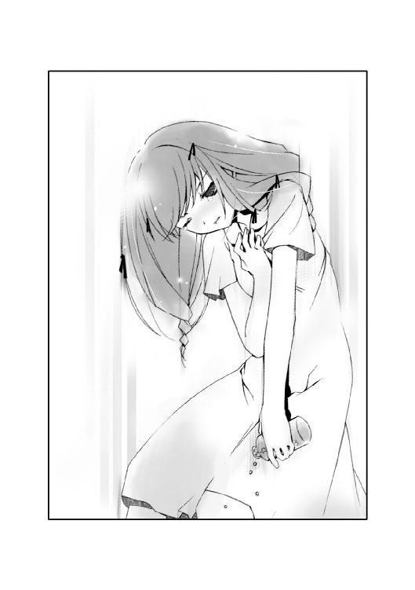
朝の問診をするべく、主治医が部屋を訪れた。中年医のぎょっとした気配は、極端に錠剤の数が減ったガラス瓶を見たからだろう。
「一つ飲もうとしたら、たくさんこぼしてしまったので......こぼしたほうは、捨てました」
窓を眺めたまま、摩理は人形のように口だけを動かす。
めずらしく摩理が口を開いたことにも驚いたようだが、主治医は深く追及はしなかった。ただ、いつもはしない採血をしていった。
主治医が去り、誰もいなくなった部屋に人の気配が生まれた。
「どうして......」
ぽつり、と摩理は呟いた。
「どうして、止めなかったの......？ 私がしていることの意味なんて、とっくに知っていたんでしょう......？」
摩理の問いかけに、白衣の青年は何も答えなかった。
彼は何度も止めていた。
摩理が〝狩り〟をしようとするたびに、必ず制止した。だが摩理が聞く耳を持たなかっただけである。
沈黙が支配する個室に、時間だけが無機質に流れた。
午後になり、摩理しかいない部屋にノックの音が響いた。
「......どうぞ」
摩理は微笑し、来訪者を迎えた。
「こんにちは！」
一之黒亜梨子が、いつもの明るい笑顔とともに現れた。摩理も微笑を返す。
「あのね。いくらリクエストがないからって、いつも手ぶらなのもどうかと思って今日はちゃんと持ってきたわよ。差し入れ」
無邪気に椅子に座る亜梨子は、大きな鞄を抱えていた。
「ありがとう」
にっこりと笑い、摩理は礼を言う。
私に、彼女と会う資格なんてない......彼女を待つ資格も──。
そう思うと、これまでとは違って穏やかな気持ちで亜梨子を迎えることができた。
いつ亜梨子が来なくなっても、私は彼女を恨まない。悲しみもしない──。
だって、それが当然だから。
他人の約束を奪っておいて、自分だけが亜梨子と会うことはできない。摩理こそ孤独になってしかるべき人間だった。
「わわっ、ごめん！」
鞄を開けると、中身がベッドの上にばらまかれた。
びっくりする摩理の膝の上に、大量の紙の束が散らかった。それらには日付がついていて、最近のものには〝市内で多発する爆発事故に対する注意と指導〟とあった。
「一学期から配布された、クラスの連絡事項なの。摩理って一枚も受け取ってないでしょう？ ほら、これなんかこの前あった文化祭の項目。うちのクラスは喫茶店やったのよ。男子が考えたコスチュームがセクハラ丸出しの──」
紙束をまとめながら、亜梨子が説明する。
「これは......？」
摩理は、一冊のノートを持ち上げる。紙束の中に紛れていたものだ。
「あっ、それは違うわ。今日の数学の課題。家に帰ってからやろうと思って」
「......見てもいい？」
「え？ べつにいいけど」
ページをめくっていき、今日の日付がついた問題を見つける。摩理の知識でもなんとか理解できそうな内容だった。というより、暗号のように独創性のある筆記体を解読するほうが大変そうだ。
「......あっ」
摩理は顔を上げる。
亜梨子が、摩理からノートを取り上げたのだ。ポニーテールの少女が無言でノートを閉じ、鞄におさめる。
「亜梨子？」
「......ゴメン」
亜梨子が鞄を閉じ、椅子から立ち上がる。
「今日は顔色、良くないね。それになんだかちょっと辛そう」
言われ、摩理はハッとする。昨日から一睡もしてないうえに、朝食も昼食もほとんどとっていない。体調は最悪だった。
「あー、やっぱり私ってダメだ。気づくのが遅くて。......今日は帰るね？ ゆっくり休んで体、直して」
言い残し、亜梨子が申し訳なさそうに笑う。
「あ──」
摩理はとっさに、口を開いた。
体調が悪いのは、自分のせいだ。亜梨子に、そんな思いをさせたのも。
そんな自分が、言える言葉ではなかった。
しかし、亜梨子が去ったあとの自分を想像してしまい、口を開かずにはいられなかった。
亜梨子が「ん？」と振り返る。
「また......来てくれる？」
摩理の言葉に、亜梨子の表情が固まった。
だが、よっぽど嬉しかったのか、見る見るうちに少女の顔が輝いていく。
「明日、また来るわね！」
ビッ、と親指を立てて、亜梨子は去っていた。
ドアを閉じる音。
そして、静寂。
「......」
摩理は、手元の紙の束に視線を移す。
ぺらぺらと紙をめくると、それぞれに色とりどりのペンで書き込みがされていた。亜梨子が言っていた文化祭の出展項目を記した紙には、〝こんなのを着たのよ！〟とある。矢印の先に描かれているのは、絵心の片鱗さえも見えないミニスカートの衣装だった。
摩理は思わず噴き出してしまう。授業中に教師に隠れ、必死に書き込みをしている亜梨子の姿が目に浮かぶようだった。
「良い子みたいだね」
いつの間にか、白衣の青年が椅子に座っていた。
「......」
摩理から、笑みが消える。
私は一体、なんなんだろう──。
生と死の狭間で迷い、人の夢を奪い、それでも生きている。
私は一体、なにがしたいんだろう......？
摩理の胸中に、不思議な感情が生まれていた。
生まれてはじめて感じる感情、それは〝嬉しい〟というものなのかもしれない。
亜梨子が摩理のもとを訪れ、笑ってくれることが、とてつもなく嬉しかった。
「ねえ」
紙束に視線を落としたまま、呟く。
青年が摩理の顔を見た。
「明日から......勉強を教えて」
摩理の申し出に、青年がわずかに目を見開く。
「私ができるお礼なんて、課題を手伝ってあげることくらいしかできないから......」
呟き、摩理は青年を見た。
彼は笑っていた。心から嬉しそうに。
「喜んで」
──また明日ね。
噓でもいい。
いつか、裏切られてもいい。
その言葉を聞ける本当の嬉しさを、摩理は今になってやっと知った。
翌日から、摩理の勉強がはじまった。
午前中、摩理は中学校の教科書を本棚の奥から引っ張り出した。今まで一度も開いたことのない新品だ。
エンピツを握るのも、ひさしぶりだった。体調が万全ではなかったため、ベッドの上でノートを開く。
「勉強をするのはいいことだけど、ムリはしちゃいけない。分かってるね？」
咳をする摩理に対し、白衣の青年はそう言った。
「大丈夫よ」
微笑する。だが、昨日の今日では体調が回復するはずはなかった。左胸に違和感を感じていたが、錠剤の入ったガラス瓶には手を出さなかった。
何から始めるか、またどういうスケジュールで取り組むかを考えるのに、午前中を費やした。午後になると、亜梨子がやってくるまで数学を勉強した。
「こんにちは！」
いつもの時間に、亜梨子がやってきた。
今日、学校であった出来事を話そうとした亜梨子に対し、摩理は課題はないのかとたずねる。亜梨子は不思議そうな顔をしながらも、ないと言った。摩理は少し残念に思ったが、すぐに別の話題になった。
亜梨子は思い出したように、自分のことを話し出した。毎朝の稽古が辛いことや、どこの小学校を卒業したかなどだ。
摩理もまた、自分のことを話す。実家が華道の家元であることや、兄姉がいないこと。そして病状が悪化する前は、亜梨子とは違う小学校に通っていたこと。
互いのことを話し終えると、自然と会話が途切れた。
いつの間にか夜になり、面会時間が終わろうとしていた。
「どうしたの、摩理？」
亜梨子が怪訝そうな顔をした。
だが摩理は、亜梨子の肩越しに見えた光景──窓の外の闇に浮かびあがった、光の円に目を奪われていた。
観覧車だ。
そういえば、亜梨子が教えてくれた。海岸近くの広場に、新しい観覧車ができようとしているという話。工事は着実に整いつつあり、オープンするまでの間、宣伝のために照明を点け続けるとのことだった。
「綺麗だね、あの観覧車......」
無意識に、摩理は呟いていた。
今まではただ暗闇が拡がっているだけだった窓に、大きな華が咲いたかのようだった。眩しいほどの明かりは、灯に誘われる昆虫のように摩理の心を惹きつけていた。
「じゃあ、退院したらいっしょに行こっか！」
亜梨子が顔を輝かせ、言う。
退院したら──。
ズキン、と弱り切った心臓が痛んだ。
亜梨子は、気づいていないのだろう。
摩理の目に、あの目映い光の円は果てしなく遠くに見えることを。
「......うん」
胸をおさえ、摩理は目を細める。
「約束」
摩理と亜梨子の笑顔が、重なった。
翌日からも、摩理の勉強は続いた。
もともと摩理は物事をのみこむのは早いほうだった。記憶力もある。
逆に、亜梨子は勉強は苦手のようだった。摩理がいつの間にか亜梨子の学力を追い抜いていたことは、一カ月もしないうちに判明した。
「あり得ないわ......」
呆然と呟き、亜梨子がよろめいた。
摩理が横たわるベッドには、教科書とノートがのっていた。
ついに摩理の勉強の成果を見せつけるチャンスが訪れた。亜梨子が課題を言い渡されたことを知った摩理が、手伝いを申し出たのである。
亜梨子が唸るだけで進まなかった問題を、摩理は簡単に解いてみせた。
「ここはこうして......」
説明をしようとする摩理に対し、亜梨子は顔を赤くしながら必死に言い訳をする。
「わ、私だって、やろうと思えばやれるのよ！ ただキライなだけで、そうじゃなかったら補習なんて受けることにも──」
「補習......することになったの？」
「う......」
勉強を続ける摩理。
摩理のもとへ、毎日のように見舞いに訪れる亜梨子。
互いの性格がまったく違うことも、仲が深まることに繫がったのかもしれない。
理性的で何事もふかく考えようとする摩理に対し、亜梨子は行動あるのみだった。だがそれだけに亜梨子は常に無邪気で、摩理はそんな彼女が好きだった。
摩理が夜に病院を抜け出すことも、あの夜以来は一度もなくなっていた。
亜梨子という一人の少女によって、摩理の日常は明らかに変わっていった。
「......っ」
ある日の午後、摩理は左胸に痛みをおぼえ顔を歪めた。
「摩理？」
いつものように勉強を教えていた青年が、慌てて摩理の顔をのぞき込む。
息が詰まり、呼吸が荒くなる。
摩理はとっさに棚のガラス瓶に手をのばしかけるが、やめる。──瓶の中の錠剤は、一カ月ほど前から変わっていなかった。
大丈夫......この程度なら、すぐにおさまるわ。いつもみたいに......。
落ち着いて、深呼吸をする。しばらくすると、動悸がおさまっていくのを感じる。
「大丈夫。もうおさまったわ」
「本当に？」
「ええ、ちょっと胸が痛んだだけ。最近はとても気分が良い日が続いてるの」
摩理は青年に向かって微笑する。青年も嬉しそうだった。
「そうか......今日の定期検診も良い結果が出そうだね」
錠剤を乱用したあの夜から、少しずつ体調が良くなっていくのを摩理は感じていた。力が入らなくなっていた手にも、以前の握力が戻った。ただ、たまに発作のように胸に痛みを感じるようになった。だがそれもすぐにおさまるので、それ以外はいたって調子は良い。
このままなら、もしかしたら──。
淡い期待が、摩理の中で息づきつつあった。
亜梨子といっしょに、学校に通うことができるようになる......？
その考えに、胸が高揚した。
だが、すぐに摩理は笑みを消す。
「摩理......？」
生まれてはじめての希望の光に、摩理はまっすぐ向かい合うことができなかった。
あの夜が過ぎて以来、ずっと考えていた。
「私......このまま、亜梨子といっしょにいていいのかな？」
青年が眉をひそめる。
胸をおさえたまま、摩理は唇を嚙みしめる。
私はたくさんの夢を奪いすぎた......それなのに、そんな私が未来を夢みるなんて──。
「もし病気が治ったとして、幸せになってもいいのかな......？」
摩理は、青年を見つめる。病とは異なる痛みが、摩理の胸を苦しめていた。
「摩理」
青年が表情をゆるめる。
「それが、君の夢だったんだろう？」
摩理はハッとする。
腕が震えた。視界が、みるみる歪んでいく。
「叶う......の......？ 私の夢......本当に......？」
青年が頷く。
私は......生きたい──。
かつて叶うはずがないと知りながらも明かした、摩理の夢。
夢の続きが見られるかもしれない。
「ありがとう、〝先生〟......」
かき消えそうな声で摩理は礼を言う。
「〝先生〟？」
「勉強を教えてくれて......これからはお医者様になるんでしょう？ だから、これからは〝先生〟って呼ばなくちゃ......」
彼にはちゃんと名前があるが、摩理は呼んだことがない。言いながら、摩理の声には嗚咽が混じりつつあった。
声を殺して泣く摩理を、〝先生〟は眩しそうに見つめていた。
──夕方。
「お帰り、摩理」
定期検診を終え、松葉杖をついて部屋に戻った摩理を、亜梨子が出迎えた。
「ただいま」
摩理は亜梨子に笑い返す。
いつもと同じように、亜梨子の課題を置いたベッドの上で談笑する。問題もそっちのけで話していると、すぐに面会終了の時間がやってきた。
「ねえ、ヘンなこと聞くみたいだけど」
椅子から立ち上がった亜梨子が、迷いながらも摩理にたずねる。
「え？」
「私の他にも、よくお見舞いに来る人がいるの？」
摩理は首を傾げる。亜梨子の他にそのような人物がいるはずもなかった。
「どうして？」
「たまに、椅子が温かい気がするのよね。ついさっきまで、別の人が座ってたみたいに」
亜梨子が不思議そうな顔をする。
摩理は納得し、クスリと微笑した。白衣の青年の体温が残っていたのだろう。
「......ねえ、亜梨子」
少し考え、摩理は亜梨子を見上げる。
「リクエストがあるんだけど......いいかな？」
「やっときたわね！ なんでも言ってちょうだい！」
嬉しそうに亜梨子が身を乗り出す。今までは見舞いの品はいらないと断っていた。
「欲しいものがあるの。でも、それは私のためのものじゃないから......代わりにお願いしたいんだけど」
前置きし、摩理は亜梨子に頼みごとをする。話を聞き終えると亜梨子は怪訝そうな顔をしていたが、快く引き受けてくれた。
「じゃあ、また明日ね！」
翌日、亜梨子は摩理の頼み通り、小さな箱を持ってきてくれた。
摩理はそれを受け取り、大事にベッドの中に隠す。
夜になり、亜梨子が去った後、摩理は〝先生〟を待っていた。
思えば、彼の訪問を待つことなど、これまでなかったことだ。薄暗い部屋で、摩理は彼に対する第一声を考えていた。
──ねえ、〝先生〟。これ、なんだと思う？
摩理は小箱を〝先生〟に見せる。きっと彼はそれが何であるか、すぐには分からないはずだ。彼の戸惑う顔を思い浮かべると、笑みが浮かんだ。
待っているうちに、いつの間にか寝てしまったようだ。
「ん......」
人の気配を感じ、摩理はまぶたを開く。
時計を見ると、すでに深夜になっていた。上半身を起こすと、暗闇にとけ込むように〝先生〟が佇んでいた。
「今日は遅かったのね、〝先生〟......」
摩理は目をこすり、笑みを浮かべる。ひそかにベッドの中をまさぐると、小箱の感触が指先に触れた。
「あ、ああ......」
しかし青年は摩理から視線をそらした。
彼のその素振りに、摩理は違和感をおぼえる。違和感の正体には、すぐに気づいた。
これまでずっとそばにいた彼だが、決して摩理から目をそむけることはなかった。摩理が空虚に蝕まれていた時、苛立ちに荒れていた時、どんな時だって彼は摩理を見つめていた。
「......ねえ、〝先生〟。顔が見えないわ。もっと近くに来て」
暗がりに佇む青年に向かって、言う。だが彼は躊躇しているようだった。
とくん、とくん──と摩理の鼓動が少しずつ速まっていく。暗闇にいる〝先生〟を凝視する眼が乾いても、まばたきができなかった。
摩理の直感は、ある一つのことを思い出させていた。
「今日は、昨日の定期検診の結果が出たはずだわ......」
ピクリ、と〝先生〟の肩が震えた。
「結果を教えて。ねえ、〝先生〟......」
〝先生〟は、黙ったまま何も答えなかった。
沈黙が、結果を示唆していた。
──また明日ね！
亜梨子の笑顔が脳裏に浮かんで、消えた。
５
病に伏せるパトリシアのもとへ、魔法使いが訪れました。
魔法使いは、言いました。
ここに天使からもらった薬と、悪魔からもらった薬がある。天使の薬を飲めば、大切な人を失う代わりにお前の病が治りいつまでも生きられる。悪魔の薬を飲めば、お前はそのまま息絶えるだろう。でも大切な人がいつまでもお前のそばにいて慰めてくれる。さあ、お前はどちらを飲む？
パトリシアは、言いました。
わたしは悪魔の薬がほしい。
魔法使いはパトリシアの願いをききました。
パトリシアは、大切な人たちに見守られながら覚めることのない眠りにつきました。
でもパトリシアはさびしくありません。丘の上に眠る彼女のことを、いつまでも大切な人たちが見守っていてくれているのです──。
「......」
〝魔法の薬〟と題された絵本を閉じ、摩理は静かに窓の外を眺めていた。
朝になると主治医がいつものように問診に訪れ、いつもより言葉少なに診察をすませて去っていった。動揺を悟られないようにしているのが、摩理には滑稽に見えた。
摩理の心は、穏やかだった。だが凪の海のようだった心に、小さな波紋が一度だけ生まれる。波紋はゆっくりと、しかし徐々に拡がりつつあった。
口許に、冷笑が浮かんだ。
昨夜の〝先生〟とのやりとりを思い出す。
──まだ、終わりじゃない。手術をすれば......。
その青年の言葉を、摩理は笑い飛ばした。
──私の体は、その手術に耐えられるの？
〝先生〟は押し黙った。彼の噓をつけない性格を、この時だけは嘲笑した。
摩理は、自分の病状についてすでに独学で真相を知っていた。手術が必要なまでに弱った心臓は、いつ停止してもおかしくはない。その時は明日か明後日か......摩理はそう遠くないことを確信していた。最近、胸が頻繁に痛んでいたのは、その時を告げるカウントダウンだったのだ。
誰もいなくなった部屋に、〝先生〟が現れた。
「......」
窓の外を見つめる摩理に向かって何か言っていたが、彼女の耳には入らなかった。
摩理の心にまた一つ、新たな波紋が生まれた。波紋どうしは重なりあい、波の高さを増していく。
──叶う......の......？ 私の夢......本当に......？
そう呟いて涙したのは、誰だったか。
「バカみたい......」
ポツリと呟いた声は、〝先生〟には聞こえなかったようだ。「え？」と彼が聞き返してくるが、摩理は再び口を閉ざす。
〝わたしは悪魔の薬がほしい〟。
絵本の主人公のセリフが思い浮かんでは、消えていく。
私は悪魔の薬なんていらない......私なら、天使の薬を──。
摩理のもとに、銀色のモルフォチョウが舞い降りた。
「......」
肩にとまったモルフォチョウを見て、摩理の頭にあることが思い浮かんだ。
天使が、囁いたのかもしれない。
思いついた考えはとても滑稽で──あまりに恐ろしい内容だった。だが天使の甘い声は摩理の中に、また新たな波を生んでいた。
──また明日ね。
亜梨子の無垢で純粋な笑みが頭に浮かんだ。狭い病室に閉じ込められた摩理にとって、彼女のまぶしい笑顔は天使の笑みそのものだった。
摩理は、天使の薬がほしい。
ならば摩理にとっての天使とは......？
「わたしは、天使の薬を......」
自然と、摩理の口許に笑みが浮かんだ。
「摩理......？」
自分はその時、どんな笑みを浮かべていたのだろう。〝先生〟がぎょっとした顔をする。
〝わたしは悪魔の薬がほしい〟。
私は、天使の薬を飲む──。
パトリシアのセリフと自分の声が、頭の中で重なり合う。
摩理はベッドの中に何かがあることに気づいた。
小さな箱だ。
そういえば昨夜は〝先生〟にそれを渡すつもりで、すっかり忘れていた。
「〝先生〟」
摩理は、微笑を白衣の青年へと向ける。何かを考え込むようにうつむいていた〝先生〟が、顔を上げた。
「なんだい？」
見え見えの作り笑いを浮かべる彼に、小箱を差し出す。
「これを、僕に？」
「ええ。私から〝先生〟に、プレゼント」
〝先生〟は意外そうな顔をしたが、嬉しそうだった。小箱を開け、中身を取り出す。
それは銀色のネックレスだった。鎖の先に、金色に輝くリングがついている。
以前、〝狩り〟をしていた時期、街のショーウィンドウに飾ってあるときから気になっていたものだ。亜梨子に頼み、代わりに買ってきてもらったのである。
「私が生きていた、もう一つの証拠...」
にっこりと穏やかな笑みを浮かべる摩理を見て、〝先生〟は辛そうな顔をした。
「もう一つは、亜梨子に......私の夢を知ったら、きっと亜梨子は私を恨むよね」
「恨む......？」
青年が眉をひそめる。摩理は彼から窓の外へと、視線を移す。
「......うん、分かってるよ」
うなずく。
亜梨子の飾りのない優しさは、他ならぬ摩理が誰よりも知っている。
「亜梨子は優しいから、私のお願いも......」
無邪気に微笑む摩理を、〝先生〟は訝しげに見つめていた。だが扉の向こうを振り向くと、その気配が部屋から消える。
ノックに続いて、扉が開いた。
摩理しかいない部屋に、見慣れた少女が姿を現す。今日から連休ということもあり、朝からやって来ると昨日、言っていた。
「亜梨子」
摩理は笑顔で、親友を迎え入れる。
亜梨子は立ち止まり、摩理の笑顔に見とれていた。だが我に返ると、来客用の椅子に腰を下ろす。
モルフォチョウが、摩理の肩から飛び立った。
「ねえ聞いて、亜梨子。私ね......」
「ん？」
亜梨子が、顔を上げた。彼女の顔を正面から見て、摩理の胸に痛みが走る。
私ね、虫憑きなの。それに、もうすぐ......天使の薬を飲むのよ──。
「ううん......」
語りそうになった口を閉ざし、少しだけ顔を歪める。シーツの上で拳を握る。
言ってはいけない。亜梨子には悟られてはいけない。なぜか、そう思った。
「私の夢、あなたに託してもいい？」
摩理の問いの意味を、亜梨子は理解できなかったようだ。きょとんとした顔で、摩理の顔を見つめ返す。
摩理は首を振った。弱々しく笑う。
「ごめんなさい。なんでもないわ......」
亜梨子は「そう？」と首を傾げた。くすりとおかしそうに笑う。
「やっぱり摩理って、少し変わってるわ」
「そうかな。亜梨子ほどじゃないよ」
「う、うそっ。やっぱり私って、どこかヘンなの？」
その日も夜まで、二人の話は続いた。
面会終了の時刻がやって来て、亜梨子が椅子を立った。
帰り支度をはじめた亜梨子を、摩理はぼんやりと見つめる。
「ねえ、亜梨子」
無意識に、口が開いていた。
「私がいなくなったら、悲しんでくれる？」
亜梨子が目を見開いた。そして、すぐに眉をつり上げる。はじめて見る表情だった。
ぱちん、という音が摩理の両側の頰をはじいた。
摩理は何が起きたのか、分からなかった。呆然と間近に寄った亜梨子の顔を凝視する。
亜梨子の両手が、摩理の頰を軽く叩いていた。そのまま摩理の顔を亜梨子の両手が支える。彼女の温かい体温が、頰に伝わる。
「またそんなこと言ったら、怒るわよ」
真剣な顔で、亜梨子が摩理を睨んでいた。
摩理の視界が、歪んだ。潤む両目とは逆に、口許には笑みが浮かんだ。
「怒られるのなんて、はじめて」
涙を浮かべていることに気づいた亜梨子が、たちまちうろたえる。
「ああっ、ゴメン！ 痛かった？」
「ううん......」
人差し指で涙をぬぐい、摩理は笑う。たった一滴だけなのに、その涙は今まで流したどんな涙よりも温かく感じた。
「ありがとう」
亜梨子が、頰を赤らめる。
摩理の心で高まりつつあった波が、少しだけおさまった気がした。
さようなら──。
心の中で、つけ足す。
亜梨子が満面の笑みで言う。
「また明日ね」
摩理の心臓が、高鳴った。
そっか、そうだよね──。
亜梨子の笑顔に応えるべく、摩理もまた最高の笑顔で彼女を見送った。
また明日、だよね──。
「うん、また明日」
亜梨子が部屋を去っていく。
もう、涙は出なかった。
就寝前の問診のため、主治医が部屋を訪れる。「明日はご家族の方が来られるそうだよ」と教えてくれた。きっとその時、摩理の症状について彼女に明かすつもりなのだろう。そして無駄だと知りつつ手術をすすめるに違いない。摩理は「そうですか」とだけ答えた。
消灯し、薄暗い部屋に〝先生〟が現れた。
「ねえ、〝先生〟......宿主が死んだら、〝虫〟はどうなるの？」
〝先生〟が唇を嚙んだ。
「〝虫〟も......消える。人の夢は命とともになくなるから」
「そんなの、おかしいわ」
摩理は窓の外を眺めながら、呟く。色を変えながら、ゆっくりと回転する観覧車の明かりが見えた。
「死んでも残る、そんな夢があってもいいと思わない？」
青年の沈黙とともに、部屋が完全なる静寂に支配される。
摩理が穏やかに観覧車を眺めているうちにも、時間は流れていた。
観覧車の明かりがまた、色を変えた。
時刻は午前一時を指し示していた。
摩理は、静かにベッドを降りた。
「......っ！」
膝から力が抜け、摩理は床に転がる。
「摩理！」
〝先生〟が摩理を抱き起こす。
堰を切ったように、心臓が激しく高鳴っていた。痛みと息苦しさで、顔が歪む。
「はっ......！ はっ......！」
荒い息をつく摩理の意識が一瞬、混濁する。
──また明日ね。
瞳から輝きを失った摩理の脳裏をよぎったのは、亜梨子と送った日々ばかりだった。はじめて出会った日から今日まで、彼女と交わした会話の一つ一つが思い浮かぶ。
「摩理！」
〝先生〟の声で、摩理は意識を取り戻す。
息を切らしながら、摩理は皮肉の笑みを浮かべる。
体だけじゃない......私の心まで、空っぽになりつつあったのね。
〝虫〟の力を使えば、それだけ自分の夢を喰われる。体力と気力が燃え尽きかけていることで、虫憑きとしての力も急激に弱まっているのだ。
摩理はとっさに、棚のガラス瓶に向かって手を伸ばした。だがつかむ直前、先に〝先生〟に瓶を取り上げられる。
「もうこれ以上、飲んだらいけない。ますます症状を悪化させるだけだ」
「はっ......はっ......」
胸をおさえ、摩理は〝先生〟を睨みつける。だがすぐに顔をそむけると、クローゼットに向かって歩み寄る。中から改造した白衣を取り出し、下着姿になって着替えをはじめる。
「そんなもの、もう必要ないわ......」
「どこに行く気だ......？ まさか、そんな体でまた──」
青年を無視し、着替えを終えた摩理は杖を手に窓に近づく。
ぐいっと摩理の腕に圧力がかかった。
〝先生〟が厳しい顔で摩理を睨んでいた。今夜ばかりは、力ずくでも外出を止めようと決意した顔だった。
「行かせない。行かせられないよ、摩理」
「はじめてね、〝先生〟が怒った顔をするの。でも、もう遅いわ。亜梨子のほうが先に、私に怒ってくれたもの」
微笑する摩理のもとに、モルフォチョウが舞い降りる。躰を変形させた蝶々の触手が、摩理の病んだ身体に同化していく。松葉杖が槍と化し、四枚の翅が羽ばたいて一つの穂先へと変化していく。
摩理の全身に、力がみなぎっていた。胸から痛みが消え、〝先生〟に向き直る。
「以前、〝先生〟が言っていたわよね。薬屋大助......だったかしら？ 強い虫憑きだっていうけど、今の私とどっちが強いかな？」
帽子とマフラーの狭間で、摩理の鋭い眼光が〝先生〟を見据える。
「今なら、私......誰にも負ける気がしないわ。たとえ〝始まりの三匹〟のうちの一つ、アリア・ヴァレィ──あなたにも」
〝先生〟が、息をのんだのが分かった。
腕をつかむ力がゆるんだ隙をついて、摩理は窓の外へ身を躍らせた。
「摩理！」
銀色の槍を握りしめ、摩理は病院の柵を跳び越える。
体力を温存することなど、頭にはなかった。闇から闇へ、夜の赤牧市を駆け抜ける。
〝虫〟の力を借りて走るうちに、胸の奥から何かがこぼれ落ちていくのを感じる。だが摩理は立ち止まらない。
また明日ね──。
亜梨子の笑顔が思い浮かんだ。
私は......生きたい──。
自らの夢が、思い浮かんだ。
「はっ......はっ......」
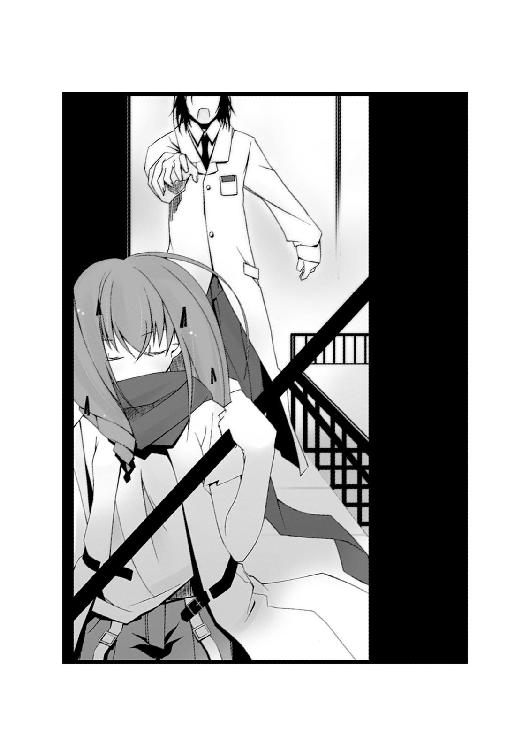
息が上がり、摩理の顔が歪んでいく。
摩理と亜梨子、夢と親友、二つの異なる想いが彼女の中で激しく交錯する。
摩理は、迷っていた。
決断しなければならい。
しかし、決断する前に、どうしても知りたいことがあった。知らずに決断することはできなかった。
決断できなければ、摩理は何も残せない。何も願うことができない。
「見つけ出して見せる......今夜こそ、絶対に......！」
どれくらい走り続けただろうか。
路地裏を駆ける摩理の手の中で、槍が輝きを増した。摩理は足を止める。
薄暗い通りの向こうに、一人の少年が立っていた。摩理よりも若干、年上だろう。国道の明かりを背負った少年の横顔は鋭い。
少年が、摩理に気づいた。顔つきを変えた彼の足元に、大人の身体ほどの大きさの〝虫〟が現れる。異様に長い脚は、百本以上はあるだろう。細長い胴体をクネクネと蠢かす様は、ムカデにも似ている。
「エルビオレーネの〝虫〟......！」
摩理は迷わず、少年めがけて駆け寄る。
襲いかかろうとした摩理に対し、少年の行動は素早かった。迎え撃つつもりはないのか、身を翻して国道とは逆の裏道へと逃げる。
「逃がさない......！」
駆ける速度は、圧倒的に摩理のほうが勝っていた。角を曲がり、すぐに少年に追いつく。
逃走しながら、少年は携帯電話に向かって何かを喋っていた。横を並走するムカデに向かって、摩理は槍を振り下ろす。
銀色の鱗粉が、地面を砕いた。
だがムカデは素早くビルの壁をのぼり、衝撃を避ける。
返す刀で摩理は第二撃を見舞わせる。だが、その太刀筋をムカデは予想していたようだ。音もなく地面に滑り込み、攻撃をかわす。
コイツ、戦い慣れてる......！
奥歯を嚙み、摩理は立て続けに斬撃をくらわせる。だがいっこうに攻撃があたる気配はなかった。
「こんなたった一匹に手こずってる時間なんて、ないの......！」
己を叱咤し、さらに力を込めて槍を振り回す。銀色の鱗粉が、少年の行く手を破壊する。衝撃で少年とムカデが地面に転がる。
「くっ......！」
無防備になった〝虫〟めがけて、槍を突き立てようとする。だが──。
「！」
摩理の胸を、突き刺すような痛みが襲った。息が詰まり、雷に打たれたように全身が硬直する。身体の奥底にある、根本的な何かが壊れるのを感じる。
槍は狙いを大きくそれ、何もない地面に突き刺さった。
「はぁっ！ はぁっ！」
地面に刺さった槍につかまり、痛む胸をおさえる。
「......？」
ピンチを脱した少年が、訝しげに摩理を振り返った。体勢を立て直し、路地の向こうへと走り去っていく。
「待っ......！」
摩理は槍を地面から引き抜き、少年を追いかける。だが先ほどまでの身の軽さが噓のように、手足は鉛のように重かった。
〝虫〟の力でも......症状を抑えきれなくなってる......？
壊れかけの身体をひきずり、唇を嚙む。
こんな......最後のワガママさえ、許してくれないの......私の身体は......！
顔を歪め、槍を杖がわりにしながら路地を進む。
お願いよ......！ あと少し......ほんの少しだけでいいから......これが最後だから......！
薄暗い路地を抜けると、広い空き地についた。錆びた鉄骨や建機がうち捨てられたそこは、まるで無機物たちの墓場のようだった。
「はぁっ、はぁっ......」
摩理の手の中で、銀色の槍がかつてないほど強く輝いていた。
「夢を喰われてるだけじゃないようだ。......病気か？」
広場の奥で、ムカデを従えた少年が呟いた。
「関係ねぇ。こいつが〝ハンター〟なんだろ？ だったら、今までしてきたことの報いを受けさせるだけだぜ」
三角形の長い触角を垂らした、ホウジャクにも似た大きな〝虫〟を従えた少年が言う。
「まだガキじゃんか。え？ 女なの？」
建機の上で、軽い口調で言ったのは金髪の男だった。まだら模様の翅と丸い尻部に針を垂らした〝虫〟が頭上で舞っている。
また、広場の隅にいたのは、気弱そうな少年だった。摩理は彼に見覚えがある。一月前、摩理がトドメをささずに逃がした虫憑きの少年だ。彼は摩理の視線に身を竦め、路地裏へと走り去っていった。
「......」
広場の中央に進み出たのは、まだ幼い少女だった。摩理と同い年くらいだろう。しかしその美しく整った顔立ちと、闇を切り裂くような鋭い視線は息をのむほどだった。傍らでは小さな、しかし分厚い甲殻をまとった丸い〝虫〟が口器を蠢かしていた。躰の表面に赤い七つの斑点が浮かび上がっている。
「はあっ......はあっ......」
ぎゅっ、と摩理は胸をつかむ手に、力を込める。
ワナだ。意図的に、摩理をこの場所へ誘い込んだのは明らかだった。
「あなたが、〝ハンター〟ね」
中央の少女が、凜と響く声で言った。張りつめるような静寂を打ち破る、生気に満ちた声だった。
「どういうつもりでこの街で虫憑きを狩っていたのか、理由を教えてもらうわよ」
〝ハンター〟──彼らは、摩理のことをそう呼んだ。
息を乱す摩理の口許に、笑みが浮かんだ。
「......あなたたち......」
ひゅうっ、と摩理は息を吸い込む。胸の内側を叩くような心臓の動悸が、少しずつ穏やかさを取り戻していく。
大丈夫......まだ、あと少しだけいける──。
腕に力を込め、槍を握りしめる。
腰に手をあてた少女が言う。
「私たちは、この街で出会った仲間よ。〝あの機関〟から逃げるため、連絡をとりあってるの。でもまさか他にも、同じ虫憑きのくせに虫憑きを狩る人間がいただなんて──」
「四人とも......エルビオレーネの〝虫〟なのね。ふふ、よかった......」
摩理は笑みを深め、四人の少年少女たちを凝視する。
時間が残されていない摩理にとって、いっぺんに四体の〝虫〟と出会えたのは幸運以外のなにものでもなかった。
少女が眉をひそめる。
「エルビオ......レーネ？」
「ディオレストイの〝虫〟は邪魔なだけだもの......もちろん、私と同じアリア・ヴァレィの〝虫〟も......でも、数が多すぎていやになるわ......あの女は、彼に聞いた通り食欲だけは旺盛みたいね......」
息を整えながら、独り言のように摩理は呟く。少女たちの間に動揺が走る。
「あなた、なにか知っているの？ 私たち虫憑きのこと......〝虫〟のことを！」
「知ってるわ......エルビオレーネの虫憑き......あなたたちが私たちの中で一番、救いがないってことも......あなたたちがいるかぎり、エルビオレーネはいつまでも......ふふ......」
もうすでに、自分が何を言っているのかも分からなくなりつつあった。頭に血が回らなくなっているのか、それとも力を使いすぎて夢を失いすぎたのか、身体の奥で脈打つ鼓動だけがやけに大きく聞こえた。
少女たちが、表情を変える。
「一体、何を知ってるの？ 教えてもらうわよ！」
「私には、関係ないわ......」
呟き、槍を構える。最初に狙いを定めたのは、少女の〝虫〟だった。七つ浮かんだ赤い斑点が、天道虫を思わせる。
地面を蹴り、少女に向かって突進する。
だが摩理と少女の間に、三匹の〝虫〟が割って入った。地面を這うムカデ、正面から飛びかかるホウジャク、頭上から針を向けるまだら模様のハチだ。
摩理はかまわず、横一文字に槍を振るう。
銀色の鱗粉がはじけた。
空き地の地面がえぐれ、爆風が鉄骨を吹き飛ばす。
「......！」
だが、視界の端を三つの影がよぎった。
摩理の攻撃と同時に、〝虫〟たちが散開して死角にもぐりこんでいた。ムカデの牙、ホウジャクの触角が摩理が持つ槍を縛りつける。
頭の上から、ハチの針が襲いかかる。
今なら、私......誰にも負ける気がしないわ──。
摩理は〝先生〟に対し、そう言った。
その確信は、命の灯が消えつつある今でさえ微塵も変わっていなかった。
「なっ......！」
少年たちの驚きの声が重なった。
摩理が人間離れした膂力で、槍を振り回す。槍にしがみついた二匹の〝虫〟もろとも、柄でハチを地面にたたき落とす。三匹の〝虫〟が勢いよく地面に転がる。
しかし次の瞬間、摩理の背中を衝撃が襲った。
「っ......！」
一瞬、見えた背後に、翅を開いた天道虫がいた。衝撃波のような、目に見えない何かを摩理に向かって放ったようだ。
ピシッ──。
摩理の体のどこかで、何かにヒビが入ったのが分かった。ニット帽がはじき飛ばされ、摩理の長い髪が露になる。
これまでの摩理なら、よろめきもしなかったような弱い衝撃だ。だが天道虫の一撃は、摩理の決定的な何かに亀裂を生んでいた。
「っぁああああ！」
摩理の口から、獣の咆哮が放たれた。
目を見開き、振り向きざまに渾身の力を込めて槍を投げ放つ。
銀光が、暗闇を突き抜ける。
「リナ！」
金髪の少年が叫んだ。天道虫に、まだら模様のハチが体当たりをかける。
光り輝く槍が、ハチの胴体を貫いた。ビルの壁に串刺しにし、それでもおさまらない衝撃が周囲の建物を崩壊させる。
「ぐああっ！」
「リュージ！」
リナと呼ばれた少女の絶叫が路地裏に響いた。三人の少年少女が、金髪の少年のもとへ駆け寄る。
「はあっ！ はあっ！」
肩で息をつく摩理。ふらつく足取りで、壁に突き立てられた槍へ歩み寄る。
「コイツも、違う......はやく......次の〝虫〟を......」
摩理は、槍を引き抜く。体液をまき散らすハチが地に落ち、ゆっくりと霞のように姿を消していく。
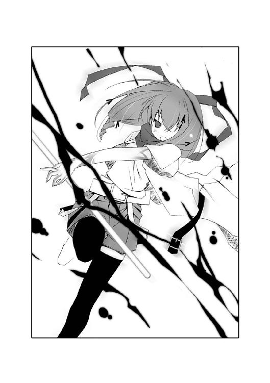
「こんなところで......何も見つけられないまま、私は死にたくない......！」
槍をぶら下げ、亡霊のような足取りで少女たちに向き直る。
「......〝死にたくない〟？」
人形のような白い顔で倒れる少年を抱きかかえ、リナが顔を上げた。涙の痕を刻んだ顔を、怒りで歪める。
「アンタは独りで死ぬのが怖くて、これまで何人も道連れにしてきたっていうの？」
リナと同じ顔をした少年二人も、摩理を睨んでいた。
「私はアンタを、絶対に許さない......！」
摩理は槍をつかむ右腕を、左手でつかむ。──まるでグラスからこぼれる水のように、腕から力が抜けつつあった。
「私には、時間がないの......」
こんなところで、こんな雑魚に手こずっているヒマはない。摩理にはリナたちを倒したあと、まだ探し続けなければならない〝虫〟がいるのだ。
「邪魔をするなら全員、ここで殺すだけ。今までそうしてきたように......」
「ふざけんじゃ、ないわ」
リナが、立ち上がる。
「死ぬのは、アンタのほうよっ！」
摩理は三匹の〝虫〟めがけて、地面を蹴る。対する〝虫〟たちも、摩理に向かって襲いかかった。
だが、その時だった。
摩理の槍が、さらに輝きを増した。槍の穂先と化した四枚の翅が大きく羽ばたき、銀色の鱗粉を噴き出す。
「......！」
いつの間に近づいていたのか、空き地を大勢の白装束たちが包囲していた。皆一様に顔を大きなゴーグルで覆い隠し、ベルトの着いた白いロングコートで身を包んでいる。さらに、彼らのそばには何匹もの〝虫〟がいた。
「目標を確認！ 捕獲しろ！」
号令が響き、白コートたちの〝虫〟がいっせいに摩理たちに襲いかかる。
特別環境保全事務局......！
〝先生〟から聞いて、摩理は彼らの正体を知っていた。虫憑きを政府の公式発表通り、〝いなかったもの〟とするべく捕獲、隔離するための機関だ。
「どこを見ているの、〝ハンター〟！」
「......！」
天道虫が摩理に向かって、翅を拡げていた。摩理はとっさに槍を振るう。
衝撃波が、摩理の胸を直撃した。
ピシッ──。
心臓の鼓動が一瞬、停まった。
時間が凍りついた。音や痛みすらも、摩理の周囲から消え去る。
──また明日ね！
まぶたに焼きついた亜梨子の明るい笑顔に、亀裂が生じる。
「......あうっ！」
リナが苦鳴とともにうずくまった。
再び、時間が動き出していた。
摩理の放った一撃は、天道虫の躰を削り取っていた。怯んだ隙をつき、白コートたちがいっせいにリナにつかみかかる。
「リナ！」
「あたしのことはいいから......二人とも逃げて......！」
摩理のもとへも、数匹の〝虫〟が襲いかかる。
「......」
摩理は無言で、槍を振り回す。
銀色の鱗粉が、〝虫〟たちを吹き飛ばす。
あの天道虫も......違う──。
胸中で呟き、槍を振り回して包囲網を突破する。
「......」
何匹もの〝虫〟をはじき飛ばし、摩理は夜の路地裏へと駆け込む。
......違う？ なにが......違うんだっけ......？
ぼんやりと考え、ただ全速力で暗闇を駆け抜ける。
「はっ......はっ......」
摩理の息が、徐々に速まっていく。逆に、摩理の駆ける速度は急に遅くなっていく。
「はっ、はっ、はっ......」
駆け足は、歩みへと変わり、うつむいたまま摩理は薄暗い路地を進む。
「はぁっ！ はぁっ......！」
自分の呼吸する音がうるさかった。鳴りやまない心臓の鼓動が、うるさかった。
私......なにかをさがして......でも、なにを......？
胸をおさえる手にも、力が入らなくなっていた。
記憶が、夢が、形を失っていく。一方で、言いようのない恐怖と空虚が摩理の胸を侵していく。
私は......なにかを見つけなきゃいけない......このままじゃ、私は何も残せない......！
顔が歪んだ。痛みと悲しみが、目を見開く摩理をじわじわと追いつめる。
──またそんなこと言ったら、怒るわよ！
誰かの声が、聞こえた。
しかし摩理は、それが誰の声であったか思い出せない。
大事な何かが、かけがえのない何かが、摩理からどんどん零れ落ちていく。
私は......このまま......消えたくない......。
とうとう、摩理の脚が完全に力を失った。がくり、と汚れた地面に両膝をつく。
「アリア・ヴァレィの槍型......もう力尽きる寸前なのか」
ふいに、声が聞こえた。
「......っ！」
考えるよりも、〝ハンター〟としての身体が反応していた。跪いた状態のまま、声に向かって槍を突き出す。
手応えはあった。しかし──。
「よけいなことに力を使うな......」
目映い大通りのネオンを背負っているせいで、声の主の姿はシルエットにしか見えなかった。
摩理の槍は、確実に〝それ〟を捉えていた。人の形をしたシルエットの腹だ。槍によって影の脇腹がえぐり取られていた。
だが、摩理の眼前で、人型のシルエットが見る間に元の形を取り戻していた。
その光景を見て、消えかかっていた摩理の記憶が形を取り戻していく。
「〝不死〟の......虫憑き......」
ぽつり、と摩理は呟く。
「ほんとう......に......？」
シルエットは、何も答えない。
〝不死〟の虫憑き──そう、摩理はずっとそれを探し続けていた。
白衣の青年と出会い、虫憑きとなった。
病と〝虫〟......摩理を死へ追いやる二つの影に怯えながら過ごす日々だった。それ以上に、空虚へ追い込む退屈の毎日があった。
「あなたは......死ぬことがないの......？」
槍が、摩理の腕からこぼれ落ちる。
しかし、そんな摩理の日々は、ある一人の少女によって一変した。
──また明日ね。
一之黒亜梨子。
彼女は摩理を受け入れ、毎日をともにしてくれた。はじめてできた友達、明日を約束してくれる少女だった。
亜梨子によって、一度は希望を手に入れた。生まれて初めての、生きる理由。亜梨子とともに歩む学校生活──。
生きたい。
摩理の夢に、もう少しで手が届くものと思っていた。
だが、それは幻想にすぎなかった。
「あなたは......天使の薬を飲んだの......？」
絶望と希望。
その二つの狭間でもてあそばれた摩理の人生は、いったい何だったのだろう？
このまま消えてしまうなんて、あまりに切なくはないだろうか？
「〝魔法の薬〟か......」
シルエットが、呟いた。声は、幼さの残る少年のもののようだった。だがその口調、その裏にある感情は、まるで嗄れた老人の声に似ていた。
霞む視界の中、摩理を見下ろすシルエットは、絵本に描かれたパトリシアに見えた。天使の薬を飲み、永い命を手に入れたもう一人のパトリシアだ。
──病に伏せるパトリシアのもとへ、魔法使いが訪れました。
魔法使いは、言いました。
ここに天使からもらった薬と、悪魔からもらった薬がある。天使の薬を飲めば、大切な人を失う代わりにお前の病が治りいつまでも生きられる。悪魔の薬を飲めば、お前はそのまま息絶えるだろう。でも大切な人がいつまでもお前のそばにいて慰めてくれる。さあ、お前はどちらを飲む？
パトリシアは、言いました。
わたしは悪魔の薬がほしい──。
「ねえ、教えて......死なないってどんな気持ちなの......？ 生き続けられるあなたは、何を思うの？ 私は......私は......」
命が燃え尽きようとしている今、摩理の中にあることが思い浮かんでいた。
「私は......天使の薬が欲しい......」
それは、あまりに恐ろしい想像。あまりに残酷な方法。
「......夢の続きが......見たいの......」
だが死の運命から逃れられない摩理に残された、唯一の方法でもあった。
摩理が生き続ける方法。
摩理にとっての天使は、他ならぬ親友の少女、一之黒亜梨子。彼女に、命をもらう。
「だから、私は......亜梨子になる......」
モルフォチョウと同化し、銀色の模様が浮かんだ両手を見る。
摩理の夢を宿す、モルフォチョウ。
モルフォチョウに託された摩理の夢を亜梨子が受け継いでくれれば、あるいは──。
「あの子は優しいから......きっと私のお願いも、聞いてくれるわ......」
両手が、震えていた。弱々しい笑みが、口許に浮かぶ。
「そう、たしかに私は天使の薬を飲んだのかもしれない......」
シルエットが呟いた。乾いた、疲れ果てているようにも聞こえる小さな声だった。
〝不死〟の虫憑きに、必ず出会わなければならないと思った。
最初は、出会ったら罵ってやるつもりだった。死の運命にとらえられた摩理という少女がいる一方で、死ぬことのない人間がいることがどうしても許せなかった。
摩理は顔を上げる。
だが今は、そんなことはどうでも良かった。
今夜、〝不死〟の虫憑きをさがしていたのは、摩理の迷いを断ち切ってもらうため。死の恐怖と不安から逃れた人間ならば、摩理に答えを告げてくれるに違いない──。
「きみの目の前にも、二つの薬があるのかもしれない......ならば私は、天使の薬を飲んだあとのきみに訊こう」
シルエットの人物が、口調を変えた。はっきりと摩理に向かって問いかける。
「新たな命を得たきみの傍らには、誰がいる？」
摩理は、目を見開いた。
頭の中が、真っ白に染まる。
──また明日ね！
親友の少女の笑顔が浮かんで、消えた。
何もなくなった頭に、閃光のように思い浮かんだ光景、それは──。
誰もいない、誰も訪れることのない小さな部屋に閉じこめられた、亜梨子と出会う前の自分の姿──。
「きみは......天使の皮をかぶった悪魔にだまされては、いけない」
その声は、すでに摩理の耳には届いていなかった。
震える両手が、ゆっくりと自らの顔を覆う。
ああ、そっか......。
自分の思い違いに、ようやく気がつく。
「私は大切なものを......間違えて......」
かすれる声で呟く。
両脚に、ほんの少しだけ力がわいた。それは紛れもない、残りの命を燃やし尽くした最期の力だった。
「......行かなきゃ......」
立ち上がり、歩き出す。
──また明日ね！
亜梨子が、そう言ったのだ。
摩理は大切な親友との約束を、守らなければならない。
歩き出す摩理を、シルエットの人物は止めなかった。
パトリシアは、言いました。
わたしは悪魔の薬がほしい──。
「私は......」
摩理の呟きは、薄暗い路地に溶けて消える。
６
赤牧市の中央。
高級住宅街の一角に、朝日が差し込んだ。
たんっ、とある一軒家の屋根の上に、銀色の影が舞い降りた。
「はっ......はっ......」
荒い息づかいが、鳥のさえずりに混じる。
モルフォチョウと同化した摩理は、青ざめた顔で眼下を見下ろす。
彼女の視線の先には、他の建物の中でも際だっておおきな屋敷があった。
「はっ......はっ......」
微笑を浮かべ、摩理はそのまま屋根の上に座り込む。
だが、そこには先客がいた。
ここも、あなたのお家なの？ ちょっとだけお邪魔させてね──。
そう言おうと、口を動かした。だが声は出なかった。口から漏れるのは、息を吸っては吐く荒い息づかいだけだった。
摩理に向かって総毛立たせていたのは、鉤になった尻尾が特徴の黒猫だった。その外見と摩理に対する敵意で、これまで何度となく出会った黒猫だと分かる。
「はっ......はっ......」
息は静まるどころか、次第に間隔を早めていった。同時に心臓の鼓動が、うるさいほど耳に伝わる。
お願い、もうちょっとだけ......。
胸をおさえ、歯を食いしばる。
あと、ほんの少しだけでいいから......。
摩理の体から、モルフォチョウが分離する。マフラーが落ち、素顔が露になった摩理の肩に銀色の蝶々がとまる。
ねえ、亜梨子。聞いてくれる......？
声を出すことは、もう諦めた。だから心の中で、呟く。
私の夢。私のお願い......。
速まる呼吸とは逆に、心は静かだった。
摩理の脳裏に、過去の記憶が次々と蘇る。
病を負い、小さな部屋に閉じこめられた。
誰もいない、誰も訪れることのない空虚な空間。摩理は病よりも先に、孤独で心を削られる日々だった。
〝先生〟と出会った。
私は......生きたい──。
摩理の夢を、〝先生〟は聞き届けた。摩理は虫憑きになった。
〝先生〟は摩理のもとを訪れてくれたけれど、摩理の心に棲みついた孤独は決して消えることはなかった。
命を削られていく日々に苛立ち、〝ハンター〟としての摩理が生まれた。
自分の分身を作るかのように、毎晩のように他人の夢を奪っていった。〝不死〟の虫憑きを探し出すという目的があったが、今思うとそれはリナという少女の言った通りだ。たんに八つ当たりをしていただけだったのだろう。自分のしていたことに気づいて、恐怖に身が竦んだ。
そして──一之黒亜梨子と出会った。
両膝を抱えた摩理に、微笑が浮かんだ。
亜梨子と交わした会話は、すべておぼえている。どんなことを話して、どんな話で笑い合ったか。毎晩ベッドの中で繰り返しては、次の日を待った。
運命の終わりを知り、再び摩理を絶望が押しつぶした。
迷い、苛立ち、過去の自分に戻りそうになった。
「......」
摩理の息が、落ち着いていく。表情もまた、穏やかな微笑が浮かんだ。
とくん、とくん、と心臓の音が小さくなっていく。
静かに眼下を見下ろす摩理には、恐怖も不安もなかった。
ようやく見つけ出したのだ。
ずっと思い描いていた疑問に対する、自分自身の答えを。
絶望に落ちるたびに、耳元で囁かれた魔法使いの言葉。
──さあ、お前はどちらを飲む？
いま、摩理ははっきりと答える。
私はね、亜梨子──。
にっこりと摩理は満面の笑みを浮かべた。
見下ろす摩理の視線の先、屋敷の門が開いた。中から、あわただしく一人の少女が飛び出してくる。その手には、いつもの配色もなにもない花束が握られていた。また水差しに生けるつもりだろうか？
溶けていく。
摩理の命も。夢の続きさえも。
朝日の中を少女が走る光景の中に、ゆっくりと溶け込んでいく。
「こんにちは、亜梨子」
摩理は、自らの夢を込め、願いを込め、言った。
「また明日ね」
銀色のモルフォチョウが、空高く舞い上がった──。
黒猫が、小さく啼いた。
足音もなく摩理に近づき、力なくたれ下がった白い手を優しく嘗める。
ピクン、と黒猫が耳を跳ね上げた。
軽い身のこなしで、摩理から離れる。
「......」
笑みを浮かべた表情でまぶた閉じた摩理を、見下ろす人物がいた。
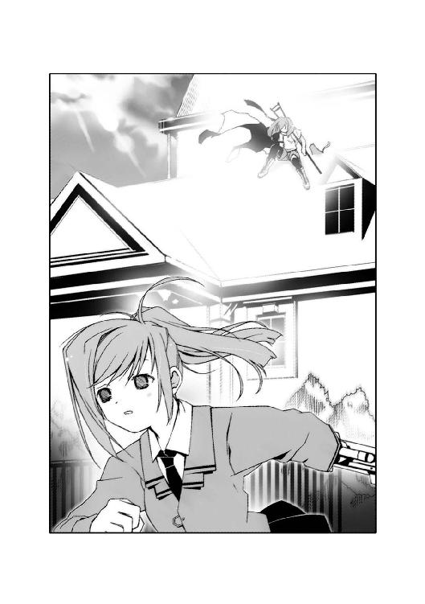
白衣に身を包んだ、長身の青年だ。
乾いた屋根に、一滴だけ水滴が落ちた。
青年の力強い両腕が、摩理の体を抱き上げた──。
７
銀色の光が、窓から入り込む。
誰が窓を開けたのだろう。
きちんと整頓されたまま残る個室に、冷たい風が吹き込んでいた。
後ろ手にドアを閉じ、一之黒亜梨子は部屋に入った。
赤牧市内にある総合病院。
その入院施設内でも、この部屋は特別だと一目で分かる。高級そうなベッドを中心に本棚やテーブルがあり、外線用の電話まで備わっていた。
「こんにちは、摩理」
亜梨子はベッドに近づく。
いつの間に部屋に入り込んだのか、亜梨子の頭上で一匹の蝶々が舞っていた。銀色に輝く翅をもつモルフォチョウだ。
そこには、誰もいない。
──摩理がこの世を去って、ちょうど一年が経過していた。
「花、生けておくわね」
洗面台に置かれた水差しに、一輪の花を生ける。
笑顔を浮かべようとしたが、うまくいかない。
それが花瓶ではないことは、同居中の少年──薬屋大助にからかわれたことで、はじめて知った。
一年前の今日、亜梨子は今のように花を持ってこの病室を訪れた。
──こんにちは！
いつものように笑顔で訪れた亜梨子を迎えたのは、しかし無言になった摩理だった。
凍りつく亜梨子に、主治医が摩理が人知れず息をひきとったことを告げた──。
無人のベッドを見下ろす亜梨子は、喪服に身を包んでいる。
花城家で行われた一年忌は、非常に静かなものだった。親族の他に、摩理と同年代の弔問客は亜梨子しかいなかったように思えた。
「摩理......」
握りしめた亜梨子の拳には、一枚のバンソウコウが貼ってある。先日、地下街で成虫化しようとした〝虫〟との戦いによって刻まれた傷だった。
私は、今でも摩理の本当の想いを知るために、戦ってるわ──。
心の中で呟く。かわりに口から出たのは、親友に対する疑問だった。摩理がいた名残を示すものは、本棚に並ぶ大量の本だけだ。それらは家族の希望もあり、そのままこの病室の備品になっていた。
「どうして......私に何も言ってくれなかったの......？」
背後で、人の気配が生まれた。
「用が済んだなら、行くぞ」
振り返るまでもない。その声の主は、亜梨子がよく知っている薬屋大助だった。亜梨子とともに戦っている虫憑きの少年。
「でも、大丈夫。必ず、見つけ出してみせるから。摩理の、本当の願いを......」
呟き、振り返った亜梨子の顔には、笑みが浮かんでいた。
摩理が何を想い、亜梨子にモルフォチョウを託したのか。
必ず、見つけ出す。
摩理の、本当の夢を──。
「ちょっとくらい待てないの？ 気の短い男はキラわれるわよ」
「自分のキャラに似合いもしない感傷にひたる女のほうが──」
「亜梨子アッパー！」
ガツッ、という鈍い音を最後に、誰もいない個室の扉が閉じる。
窓から吹き込んだ風に、本棚の端で倒れた一冊の絵本──〝魔法の薬〟と題された表紙が揺れた。
to be continued
あとがき
ちょっと前に友人たちとお台場に遊びに行きました。
吞んで食べて、ゲームで遊んで観覧車に乗って......。
つい二、三年前、学生時代には当たり前だった風景です。
深夜になって映画を観ようという輪から抜け出した男性陣三人で、温泉に行こうという話になって。タクシー拾って近場の温泉に行ったわけですが。
行ってみたら、すでに閉まった後。呆然として振り返った先には、去っていくタクシーと無人の駐車場。
残してきた仲間と合流すべく、しかたなく歩いて映画館に戻る三人。しばらく歩いているうちに、遠くの空が白んできて......。
なんだか青春時代を思い出しました。
僕もまだけっこう若いなぁと。
二時間後。
映画館のベンチに倒れ込んで、仮死状態になっている自分がいました。ちょっと歩いただけで、酸素不足で頭が真っ白になって......。
なんだか現実を思い出しました。
......もう、年だなぁ......。
こんにちは、岩井恭平です。
作者の私生活の話ばかりでも涙の味しか共有できないと思うので、本巻について少しばかり説明と補足を。
本作『ムシウタ ｂｕｇ』シリーズは、雑誌『ザ・スニーカー』に連載されている同名シリーズをまとめた短編集という形になります。第四話は書き下ろしで、連載とは少し異なる視点で描かれています。
舞台設定に関しては、本編となるストーリー『ムシウタ』より二年ほど前に起こった出来事ということになります。本編で登場するキャラクターもちらほらと出てきていると思います。過去の事件ということで性格、容姿は多少異なるかもしれませんが。
この ｂｕｇシリーズもいずれは収束、リセットする形で、本編のスタート時の状態へ取り込まれる形となるわけですが、「物語を理解したいなら両方買え！」というつもりはありません。本編も、ｂｕｇシリーズも、できうるかぎり作中に出てきた謎は、互いの作中で解決していきたいなと思います。それぞれ楽しんでもらえるように。
でもナノ単位の気持ちとしては、やっぱり本編も読んでもらえると嬉しいです（笑）。過去と現在、そして未来の話ですが、それぞれが繫がって並走している楽しみを味わってもらえると幸いです。
連載を開始するにあたって、サポート体制も強化されました。これまで担当の女井さんにお世話になっておりましたが、さらに山口さんという強力な援軍にも原稿に目を通していただけるようになりました。まさに挟み撃ちの形......鬼に金棒（言い直し）の体制で、いたらぬ作者を助けていただいております。ありがとうございます。
イラストを描いていただいているるろおさんにも、あいかわらずお世話になりまくっております。何度だって言います。......いつも原稿遅らせてゴメンナサイ......。
本作を読んでいただいた読者の皆様に、お礼を申し上げます。弱っている時にお手紙が届くたびに、初心を思い出させていただいております。がんばります。
次巻、もしくは別の形でお会いしましょう。
岩井 恭平
●初出一覧
０１．夢回す銀槍......「ザ・スニーカー」二〇〇四年二月号
０２．夢紡ぐ夜歌......「ザ・スニーカー」二〇〇四年四月号
０３．夢沈む休日......「ザ・スニーカー」二〇〇四年六月号
０４．夢託す狩人......書き下ろし
カバー・口絵・本文イラスト／るろお
カバー・口絵・本文デザイン／須貝美華＋design CREST
ムシウタｂｕｇ
１ｓｔ．夢回す銀槍
岩井恭平
平成26年2月1日 発行
(C) Kyohei IWAI 2004
本電子書籍は下記にもとづいて制作しました
角川スニーカー文庫『ムシウタ ｂｕｇ １ｓｔ．夢回す銀槍』
平成16年8月1日初版発行
平成20年5月30日10版発行
発行者 山下直久
発行所 株式会社ＫＡＤＯＫＡＷＡ
〒102-8177 東京都千代田区富士見2-13-3
03-3238-8745（営業）
編集 角川書店
〒102-8078 東京都千代田区富士見1-8-19
03-3238-8694（編集部）
http://www.kadokawa.co.jp/